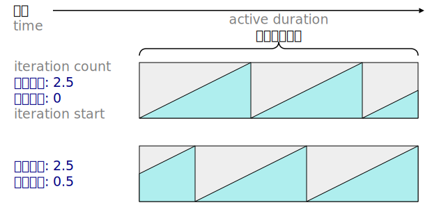
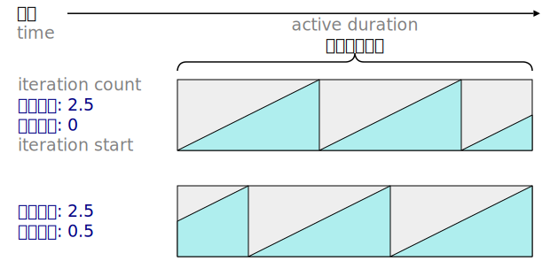
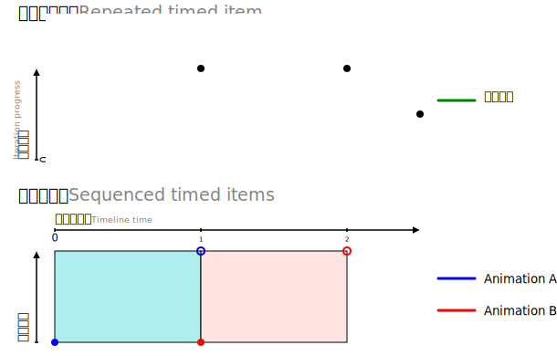
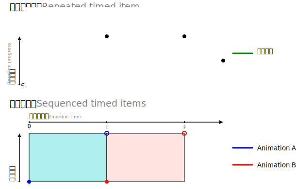

 



1. 序論
~INFORMATIVEこの仕様は、~web~platform上の~animationと同期法を~supportするための~modelを定義する。 他の仕様は、この~model上に自身による特能を築いて，宣言的な手段を通して公開することになるものと意図される。 加えて，この仕様は、この~modelに対し［ ~scripting用の~supportを供する~UA ］が実装してもヨイ~APIも定義する。 ◎ Web Animations defines a model for supporting animation and synchronization on the Web platform. It is intended that other specifications will build on this model and expose its features through declarative means. In addition, this specification also defines a programming interface to the model that may be implemented by user agents that provide support for scripting.
1.1. 利用事例
~WAnim~modelは `CSS-TRANSITIONS-1$r, `CSS-ANIMATIONS-1$r, `SVG11$r を表出するために必要とされる特能を供するものと意図されている。 そのようなわけで，~WAnim~modelの利用事例は、これらの仕様~用の利用事例の和集合である。 ◎ The Web Animations model is intended to provide the features necessary for expressing CSS Transitions [CSS-TRANSITIONS-1], CSS Animations [CSS-ANIMATIONS-1], and SVG [SVG11]. As such, the use cases of Web Animations model is the union of use cases for those three specifications.
利用事例には、次に挙げる~API用のそれも含む： ◎ The use cases for the programming interface include the following:
- 走っている~animationの検分-法 ◎ Inspecting running animations
-
~web~appは、何らかの状態を更新する前に，ある種の~animate化された効果が完了するのを待機しなければナラナイことが多い。 この仕様における~APIは、そのような~appが — CSS Transitions, CSS Animations, SVG ~animation のどれで定義されていようが，~APIを利用して直に作成されていようが — 現在~稼働中の~animationすべてが完了するまで待機することを許容する。 ◎ Often Web applications must wait for certain animated effects to complete before updating some state. The programming interface in this specification allows such applications to wait for all currently running animation to complete, regardless of whether they are defined by CSS Transitions, CSS Animations, SVG animations, or created directly using the programming interface.
/* 要素を除去するより前に，すべての~animationが完遂するまで待機する ◎ Wait until all animations have finished before removing the element */ Promise.all( %elem.`getAnimations$0().map(%animation => %animation.`finished$0) ).then(() => %elem.remove());あるいは，~appは、~animationの再生~状態を待機することなく~queryしたいと望むこともある。 ◎ Alternatively, applications may wish to query the playback state of animations without waiting.
const %isAnimating = %elem.`getAnimations$0().some( %animation => %animation.`playState$0 === 'running' );
- 稼働中の~animationの制御-法 ◎ Controlling running animations
-
~animationの再生~制御を，外部~入力に応答するように遂行できると有用になることはときどきある。 例えば、~modal~dialogを表示する前に，既存の~animationすべてを — 利用者の気を散らさないよう — 静止することが必要とされることもあろう。 ◎ It is sometimes useful to perform playback control on animations so that they can respond to external inputs. For example, it may be necessary to pause all existing animations before displaying a modal dialog so that they do not distract the user’s attention.
/* 文書~内にある すべての既存の~animationを静止する ◎ Pause all existing animations in the document */ for (const %animation of document.`getAnimations$0()) { %animation.`pause$0() } - ~scriptからの~animationの作成-法 ◎ Creating animations from script
-
~animationを `requestAnimationFrame()$m `HTML$r を利用して~JSにより遂行することもアリだが、そのような~animationの挙動は — ［ それが~CSS~cascadeの用語に基づいて どう表現されるか ／ ~animationを別々の~thread等で遂行するなどの アリな処理能~最適化 ］に関して — 宣言的な~animationとは異なる。 ~WAnim~APIを利用すれば、~scriptからも，宣言的な~animationと同じ挙動と処理能の特徴を備えた~animationを作成することがアリになる。 ◎ While it is possible to use ECMAScript to perform animation using requestAnimationFrame [HTML], such animations behave differently to declarative animation in terms of how they are represented in the CSS cascade and the performance optimizations that are possible such as performing the animation on a separate thread. Using the Web Animations programming interface, it is possible to create animations from script that have the same behavior and performance characteristics as declarative animations.
/* 素早く~fade-outする ◎ Fade out quickly */ %elem.`animate$0({ transform: 'scale(0)', opacity: 0 }, 300); - ~animationの~debug法 ◎ Animation debugging
-
複階的な~appにおいては、ある要素が~~今ある状態にどう行き着いたか決定するのが困難なこともある。 ~WAnim~APIは、稼働中の~animationを検分して， “この要素の不透明度は何故~変化しているか？” などの問いに答えるために利用できる。 ◎ In a complex application, it may be difficult to determine how an element arrived in its present state. The Web Animations programming interface may be used to inspect running animations to answer questions such as, “Why is the opacity of this element changing?”
/* %elem 上に不透明度~animationがあれば その `id^a を~printする ◎ Print the id of any opacity animations on elem */ for (const %animation of %elem.`getAnimations$0()) { if ( %animation.`effect$0 instanceof `KeyframeEffect$0 && %animation.effect .`getKeyframes$0() .some(%frame => %frame.hasOwnProperty('opacity')) ) { console.log(%animation.`id$0); } }同様に，~animationを微調整するためには、その再生~rateを抑制して再生し直すことが必要とされることが多い。 ◎ Likewise, in order to fine tune animations, it is often necessary to reduce their playback rate and replay them.
/* 変形~animationを遅めて再生し直す ◎ Slow down and replay any transform animations */ const %transformAnimations = %elem.`getAnimations$0().filter( %animation => %animation.`effect$0 instanceof `KeyframeEffect$0 && %animation.effect.`getKeyframes$0().some( %frame => %frame.hasOwnProperty('transform') ) ); for (const %animation of %transformAnimations) { %animation.`currentTime$0 = 0; %animation.`updatePlaybackRate$0(0.5); } - ~animationの~test法 ◎ Testing animations
- ~animationを用立てる~appを~testするとき、そのような~animationが完了するまで待機していては実用的でないことが多い。 そのため、特定の時刻へ~animationを~seekすることが欲される。 ◎ In order to test applications that make use of animations it is often impractical to wait for such animations to run to completion. Rather, it is desirable to seek the animations to specific times.
/* ~animationの中間点へ ~seekして，不透明度は 50% になるかどうか検査する ◎ Seek to the half-way point of an animation and check that the opacity is 50% */ for (const %animation of %elem.`getAnimations$0()) { const { `delay$0, `activeDuration$0 } = animation.effect.`getComputedTiming$0(); %animation.`currentTime$0 = delay + activeDuration / 2; } assert.strictEqual(getComputedStyle(%elem).opacity, '0.5'); /* ~animationが完遂した後に，読込んでいる~screenが隠されるかどうか検査する ◎ Check that the loading screen is hidden after the animations finish */ for (const %animation of %elem.`getAnimations$0()) { %animation.`finish$0(); } /* ~event~handlerが走る~~機会を得られるよう， 1 ~frameだけ待機する ◎ Wait one frame so that event handlers have a chance to run */ requestAnimationFrame(() => { assert.strictEqual( getComputedStyle(document.querySelector('#loading')).display, 'none'); });
1.2. 他の仕様との関係性
`CSS-TRANSITIONS-1$r, `CSS-ANIMATIONS-1$r, `SVG11$r は、どれも~Web~page上に~animate化された内容を生成する仕組みを供する。 これらの仕様は、多くの類似な特能を供しているが，異なる用語で述べられている。 この仕様は、［ それらのどの仕様にも共通な特能を包摂する, かつ それらの仕様の現在の挙動と後方-互換になる ］ような，抽象-~animation~modelを提案する。 すなわち，それらの挙動は — その変化が観測-可能にならないように — この~modelの用語に基づいて定義し直すことができる。 ◎ CSS Transitions [CSS-TRANSITIONS-1], CSS Animations [CSS-ANIMATIONS-1], and SVG [SVG11] all provide mechanisms that generate animated content on a Web page. Although the three specifications provide many similar features, they are described in different terms. This specification proposes an abstract animation model that encompasses the common features of all three specifications. This model is backwards-compatible with the current behavior of these specifications such that they can be defined in terms of this model without any observable change.
~SVG 1.1 による~animation特能は、 `SMIL-ANIMATION$r の用語に基づいて定義されている。 ~WAnim~modelは、その用語に基づいて~SVGの~animation特能を定義することにより，~SVGと~SMILとの依存関係を除去できることが意図されている。 ◎ The animation features in SVG 1.1 are defined in terms of SMIL Animation [SMIL-ANIMATION]. It is intended that by defining SVG’s animation features in terms of the Web Animations model, the dependency between SVG and SMIL Animation can be removed.
`HTML$r の`~animation~frame~callback$（ “`requestAnimationFrame$m” とも共通的に称される）と同じく，この仕様の~APIは、~animationを~scriptから作成できるようにする。 しかしながら，この仕様にて定義する~interfaceを利用して作成された~animationは、その全体が~UAにより実行される — すなわち，~markupにより定義された~animationと同じ処理能の特徴を共有することになる。 この~interfaceを利用すれば、より単純かつ高処理能な方式で~scriptから~animationを作成することがアリになる。 ◎ As with animation frame callbacks (commonly referred to as “requestAnimationFrame”) [HTML], the programming interface component of this specification allows animations to be created from script. The animations created using the interface defined in this specification, however, once created, are executed entirely by the user agent meaning they share the same performance characteristics as animations defined by markup. Using this interface it is possible to create animations from script in a simpler and more performant manner.
~APIの中で利用される時刻~値は、`~animation~frame~callback$ `HTML$r にて利用されるそれらに対応し、それらの実行~順序は， 2 つの~interfaceが同時に競合することなく利用できるように定義される。 ◎ The time values used within the programming interface correspond with those used in animation frame callbacks [HTML] and their execution order is defined such that the two interfaces can be used simultaneously without conflict.
この仕様は、 `HTML$r にて定義される~interfaceに，いくつかの~APIを追加する。 ◎ The programming interface component of this specification makes some additions to interfaces defined in HTML [HTML].
1.3. この仕様の概観
この仕様は、まず，~animation用の抽象-~modelを定義することから始め、次に，その用語に基づいて~APIを定義する。 この~APIに関連するのは，~scripting~supportを供する~UAに限られる。 ◎ This specification begins by defining an abstract model for animation. This is followed by a programming interface defined in terms of the abstract model. The programming interface is defined in terms of the abstract model and is only relevant to user agents that provide scripting support.
2. 仕様~規約
【 この節の和訳は省略する（和訳には不要な内容なので）。 】 ◎ This specification begins by describing abstract concepts such as animations and animation effects and properties that belong to them such as their playback rate or iteration duration. In addition to these properties, there are often specific procedures for updating these properties such as the procedure to set the playback rate or the procedure to set the start time of an animation. ◎ Where this specification does not specifically link to a procedure, text that requires the user agent to update a property such as, “make animation’s start time unresolved”, should be understood to refer to updating the property directly without invoking any related procedure. ◎ Further documentation conventions that are not specific to this specification are described in Document conventions.
3. ~WAnim~modelの概観
~INFORMATIVE大雑把には、~WAnim~modelは，ほぼ独立な役割を担う 2 つの部分からなる： ◎ At a glance, the Web Animations model consists of two largely independent pieces, a timing model and an animation model. The role of these pieces is as follows:
- 計時~model ◎ Timing model
- 時刻におけるある~momentを、`反復~進捗$と呼ばれる，~animationの 1 回の反復の中の相応する距離に変換する。 また `反復~index^i【`現-反復$ — 0 から数えて何回目の反復か】も記録される — 繰返す各回ごとに変わる【累積される】~animationもあるので。 ◎ Takes a moment in time and converts it to a proportional distance within a single iteration of an animation called the iteration progress. The iteration index is also recorded since some animations vary each time they repeat.
- ~animation~model ◎ Animation model
- 計時~modelにより生産される［ `反復~進捗$値, `反復~index^i ］を、~target~propに適用するための一連の値に変換する。 ◎ Takes the iteration progress values and iteration indices produced by the timing model and converts them into a series of values to apply to the target properties.
この流れは、次のような図式に表現できる： ◎ Graphically, this flow can be represented as follows:
例えば，次のような~animationを考える： ◎ For example, consider an animation that:
- 3 秒~後に開始する ◎ starts after 3 seconds
- 2 回~稼働する ◎ runs twice,
- 毎回 2 秒かかる ◎ takes 2 seconds every time, and
- 矩形の横幅を `50px^v から `100px^v に変化させる。 ◎ changes the width of a rectangle from 50 pixels to 100 pixels.
最初の 3 項目は、計時~modelに適用される — 時刻 6 秒 の時点では、~animationは 2 回目の反復の中間点になるべきと計算することになり、その結果として 0.5 を生産する。 次に，~animation~modelは、その情報を利用して横幅を計算する。 ◎ The first three points apply to the timing model. At a time of 6 seconds, it will calculate that the animation should be half-way through its second iteration and produces the result 0.5. The animation model then uses that information to calculate a width.
この仕様は、まず計時~modelについて述べてから，~animation~modelについて述べる。 ◎ This specification begins with the timing model and then proceeds to the animation model.
4. 計時~model
この節では、~WAnim計時~modelの挙動について述べ，それを定義する。 ◎ This section describes and defines the behavior of the Web Animations timing model.
4.1. 計時~modelの概観
~INFORMATIVE~WAnim計時~modelを特徴付ける特能には、 `無状態なこと^em（ `stateless^en ）, `階層的^em の 2 つがある。 ◎ Two features characterize the Web Animations timing model: it is stateless and it is hierarchical.
4.1.1. 無状態
~INFORMATIVE~WAnim計時~modelは、入力~時刻から出力~反復~進捗を生産することにより演算する。 出力は もっぱら入力~時刻に基づき，前回までの入力には依存しないので、~modelは，無状態なものとして述べれる。 これにより、~modelには次の特質が備わる： ◎ The Web Animations timing model operates by taking an input time and producing an output iteration progress. Since the output is based solely on the input time and is independent of previous inputs, the model may be described as stateless. This gives the model the following properties:
- ~frame~rateに依存しない： ◎ Frame-rate independent
- 出力は前回までの入力に依存しないので、~modelが更新される~rateは，その進捗に影響しないことになる。 入力~時刻が現実の時計の時刻の進捗に相応する限り、~animationが進捗する~rateは，それを稼働させている機器の能力に関わらず 互いに一致することになる。 ◎ Since the output is independent of previous inputs, the rate at which the model is updated will not affect its progress. Provided the input times are proportional to the progress of real-world time, animations will progress at an identical rate regardless of the capabilities of the device running them.
- 方向を問わない ◎ Direction-agnostic
- 前回までの入力は有意でないので、~modelは進捗の向きに依存しない（ `directionless^en ）。 すなわち，この~modelは、任意な~momentへ，何ら特化された取扱いを要求することなく更新できる。 ◎ Since the sequence of inputs is insignificant, the model is directionless. This means that the model can be updated to an arbitrary moment without requiring any specialized handling.
- 所与の時刻へ~seekするときにかかる時間は一定になる ◎ Constant-time seeking
- 各~入力は，前回までの入力に依存しないので、~seek演算を遂行するために要求される処理は — 遠い未来であろうが，少なくとも~~理論上は — 一定になる。 ◎ Since each input is independent of the previous input, the processing required to perform a seek operation, even far into the future, is at least potentially constant.
この，無状態な計時~modelの挙動には、少しばかり例外がある： ◎ There are a few exceptions to the stateless behavior of the timing model.
- この~modelに対する`~API$secにて定義する いくつかの~methodは、~animationを静止するなどの再生-制御を供する。 これらの~methodは、それが~callされた時刻に基づいて定義されるので， 【その時刻から導出される】 状態を保つ（ `stative^en ）。 これらの~methodは、主として便利~用に供されており，計時~modelの中核は成さないが その上~層にある。 ◎ Firstly, a number of methods defined in the programming interface to the model provide play control such as pausing an animation. These methods are defined in terms of the time at which they are called and are therefore stative. These methods are provided primarily for convenience and are not part of the core timing model but are layered on top.
- 同様に，~animationが 完遂するときの挙動 は、~animationの媒体（`結付けられている効果$）の終止-時刻が動的に変更されたとき，それがいつ生じたかに依存して，生産される結果が異なり得ることを意味する。 この挙動は、~~理想とは言えないが直感的であり，~HTMLと一貫するものと判断されている。 結果として，この~modelは、`その計時~propが動的に変更されない限り^em，真に無状態なものとして述べれる。 ◎ Similarly, the finishing behavior of animations means that dynamic changes to the end time of the media (associated effect) of an animation may produce a different result depending on when the change occurs. This behavior is somewhat unfortunate but has been deemed intuitive and consistent with HTML. As a result, the model can only truly be described as stateless in the absence of dynamic changes to its timing properties.
- この~modelは、各回ごとに更新され，一時的な状態を確立するものと見なせる。 この一時的な状態は、`~API$secが返す値には影響するが 後続の更新には波及しないので，上で述べた無状態な~~性質と競合することはない。 ◎ Finally, each time the model is updated, it can be considered to establish a temporary state. While this temporary state affects the values returned from the programming interface, it has no influence on the subsequent updates and hence does not conflict with the stateless qualities described above.
4.1.2. 階層的
計時~modelを特徴付ける他の特能には、時刻が継承されることが挙げられる。 時刻は、ある`時列線$から始まり，何~段か~~経て各~animation効果へ~cascadeする。 各~段では、時刻は［ 後方や前方へズラされる／伸縮される／逆転される／静止される／繰返される ］こともある。 ◎ The other characteristic feature of the timing model is that time is inherited. Time begins at a timeline and cascades down a number of steps to each animation effect. At each step, time may be shifted backwards and forwards, scaled, reversed, paused, and repeated.
仕様のこの~levelにおける階層は、浅いものである。 この仕様の後継~levelは、より深い計時~階層を許容する~group効果の概念を導入することになる。 ◎ In this level of the specification the hierarchy is shallow. A subsequent level of this specification will introduce the concept of group effects which allows for deeper timing hierarchies.
4.2. 時刻~値
計時は、各~計時~node~間の時刻~関係性が成す階層に基づく。 親~nodeは、自身の子~nodeに計時~情報を`時刻~値$として供する。 ◎ Timing is based on a hierarchy of time relationships between timing nodes. Parent nodes provide timing information to their child nodes in the form of time values.
`時刻~値@ は、ある~momentからの~milli-秒~数を表現する実数-である【（正な）無限大もとり得る】。 この~milli-秒は、名目上の~~単位であり，現実の時計（ `wall-clock^en ／ `wallclock^en ）における~milli-秒に一致するとは限らない — それらの間の接続は、時刻~階層を通過する際に適用される値の変形n【時間を伸縮するなど】により~~間接的にされ得る。 ◎ A time value is a real number which nominally represents a number of milliseconds from some moment. The connection between time values and wall-clock milliseconds may be obscured by any number of transformations applied to the value as it passes through the time hierarchy.
注記： 将来においては、~scroll位置や~UI~gestureに基づく時列線なども~~導入され得る — その事例では、時刻~値と現実の~milli-秒との間の接続は，さらに弱められることになる。 ◎ In the future there may be timelines that are based on scroll position or UI gestures in which case the connection between time values and milliseconds will be weakened even further.
`時刻~値$は `未解決@ にもなり得る — 例えば、計時~nodeが`時刻~値$を生産する状態にない場合など。 【~APIの目的においては、`未解決$は ~NULL 値の別名とされる（すなわち、 `未解決$ ~EQ ~NULL ）。】 ◎ A time value may also be unresolved if, for example, a timing node is not in a state to produce a time value.
4.3. 時列線
`時列線@ （ `timeline^en ）は、同期法の目的で，~sourceの`時刻~値$を供する。 【概念的には、無数の［何かに対応する時刻~値］からなる，時系列順の（離散的な）並びが成す（連続的な）線。】 ◎ A timeline provides a source of time values for the purpose of synchronization.
`時列線$は、所与の任意の~momentに，ある`時刻~値$をとる — それは、時列線の `現-時刻@tL と呼ばれる。 【 対して，以下に現れる “時列線~時刻” は、時列線が含み得る任意の時刻~値を表す。】 ◎ At any given moment, a timeline has a single current time value known simply as the timeline’s current time.
`時列線$は、常に有意義な`時刻~値$を返せるとは限らず，`未解決$を返す場合もある。 例えば、まだ生じていないかもしれないある~moment — 文書の `load^et ~eventの発火など — に相対的に定義されている`時列線$など。 `時列線$は、その`現-時刻$tLが`未解決$にならない間は `作動中@ である（ `active^en ）とされ，`未解決$になる間は `作動中$でない（ `inactive^en ）とされる。 ◎ A timeline may not always be able to return a meaningful time value, but only an unresolved time value. For example, it may be defined relative to a moment that has yet to occur, such as the firing of a document’s load event. A timeline is considered to be inactive when its time value is unresolved.
`時列線$は、常に次を満たすならば `単調増加-@ しているとされる ⇒ 報告される`現-時刻$tL ~GTE 前回に報告された`現-時刻$tL ◎ A timeline is monotonically increasing if its reported current time is always greater than or equal than its previously reported current time.
特定の型の`時列線$には、時列線~時刻を `起点に相対的な時刻へ変換する@ 手続きを定義するものもある — `時刻~値$と［ 現実の時計に基づく時列線により生産される`時刻~値$ ］は、それを通して比較できるようになる。 ◎ Specific types of timelines may define a procedure to convert a timeline time to an origin-relative time for time value time, so that the time values produced by wallclock-based timelines can be compared.
`時列線$には `文書に属する@ とされるものもある。 ◎ A timeline may be associated with a document.
`~animationを更新して~eventを送信する@ ときは、所与の ( `文書$ %文書, 時刻印 %今 ) に対し，次を走らす： ◎ When asked to update animations and send events for a Document doc at timestamp now, run these steps:
-
~EACH( %文書 に属する時列線 %時列線 ) に対し ⇒ ( 時刻印 %今 ) を渡して， %時列線 の`現-時刻$tLを更新する ◎ Update the current time of all timelines associated with doc passing now as the timestamp.
注記： 計時~modelが成す階層的な資質に因り，`時列線$の`現-時刻$tLを更新することは、その時列線を接続-先とする各`~animation$に対しても，次を行うことを孕む ⇒＃ ~animationの`現-時刻$を更新する ／ ~animation用に`完遂d状態を更新する$ ／ ~animation用に`~animation~event$を~queueする ◎ Due to the hierarchical nature of the timing model, updating the current time of a timeline also involves: • Updating the current time of any animations associated with the timeline. • Running the update an animation’s finished state procedure for any animations whose current time has been updated. • Queueing animation events for any such animations.
- `置換された~animationを除去する$( %文書 ) ◎ Remove replaced animations for doc.
-
`小task~checkpointを遂行する$ ◎ Perform a microtask checkpoint.
注記： これは、前~段にて時列線を更新する一部として，~promiseを［ 解決する／却下する ］ — その結果として、~queueしておかれた どの小taskも［ ~animation~eventを配送するに先立って，~promiseの~callbackを走らす ］ことを確保する。 ◎ Note: This is to ensure that any microtasks queued up as a result of resolving or rejecting Promise objects as part of updating timelines in the previous step, run their callbacks prior to dispatching animation events.
- %配送する~event~list ~LET %文書 の`処理待ち~animation~event~queue$の複製 ◎ Let events to dispatch be a copy of doc’s pending animation event queue.
- %文書 の`処理待ち~animation~event~queue$を空にする ◎ Clear doc’s pending animation event queue.
-
%配送する~event~list 内の`~animation~event$を，それぞれの`~schedule済み~event時刻$ — 以下、単に `時刻^i — に基づいて，次に従う順序に~sortする： ◎ Perform a stable sort of the animation events in events to dispatch as follows:
- `時刻^i は`未解決$でないものどうしは、 `時刻^i の~~昇順にする — 早く生じる~eventほど、前に来るよう。 ◎ Sort the events by their scheduled event time such that events that were scheduled to occur earlier, sort before events scheduled to occur later and＼
- `時刻^i は`未解決$であるものは、`未解決$でないものより前に来る。 ◎ events whose scheduled event time is unresolved sort before events with a resolved scheduled event time.
- `時刻^i が等しいものどうしは、それぞれの`組成-順序$に従う。 ◎ Within events with equal scheduled event times, sort by their composite order.
- 以上により順序が決まらないものどうしは、元の順序を保つとする — すなわち，安定~sortする。 ◎ ↑
注記： ~eventを~sortする目的は、［ 能力が相違しているため ~frame~rateが異なる機器においても，~eventが配送される順序は一貫する ］ことを，アリな限り確保することである。 ◎ Note: The purpose of sorting events is to ensure that, as best possible, even on devices with differing capabilities and hence different frame rates, events are dispatched in a consistent order.
注記： 安定~sortする要件は、［ 同じ~schedule済み~event時刻で~queueされた，複数の~event ］の順序を保全するためにある。 例えば、所要時間 0 の`~CSS~animation$iは、 `animationstart^et, `animationend^et 両~eventを~~同時に配送し得る。 ◎ Note: The requirement for the sort to be a stable sort is because sometimes events may be queued with the same scheduled event time. For example, a CSS animation with a duration of zero, may dispatch both an animationstart and an animationend event and the order of these events should be preserved.
- %配送する~event~list 内の~EACH( %~event ) に対し（前~段にて確立された順序で） ⇒ ~eventに`対応する~event~target$に向けて， %~event を`配送する$ ◎ Dispatch each of the events in events to dispatch at their corresponding target using the order established in the previous step.
この手続きが呼出される各回は、簡便に， “新たな `~animation~frame@ を確立する” と述べられることが多い。 ［ `~animation$ ／ `~animation効果$ ］の計時~propの変化や, ~objの［ 追加／除去 ］も，計時や~animation~modelの出力を変化させ得るが、これらの演算は 現在の`~animation~frame$を更新するだけで，新たな`~animation~frame$は作成しない。 ◎ It is often convenient to describe each time this procedure is invoked as establishing a new animation frame. Changes to the timing properties of animations or animation effects, or the addition and removal of the objects may cause the output of the timing or animation model to change, but these operations in themselves do not create a new animation frame, rather they merely update the current animation frame.
4.3.1. 文書~時列線
`文書~時列線@ は、`文書に属する$`時列線$の一種であり，その`現-時刻$tLは［ `~animationを更新して~eventを送信する$手続きが走る各回ごとに供される，時刻印 %今 ］から固定的な~offset後を指す時刻として計算される。 この固定的な~offset【すなわち， %今 ~EQ 0 であったとするときの現-時刻】は、文書~時列線の `起点~時刻@ と称される。 ◎ A document timeline is a type of timeline that is associated with a document and whose current time is calculated as a fixed offset from the now timestamp provided each time the update animations and send events procedure is run. This fixed offset is referred to as the document timeline’s origin time.
“起点~時刻” は “`時刻~起点$” に似過ぎるので、もっと良い用語が要る。 `2079$issue ◎ There must be a better term than “origin time”— it’s too similar to “time origin”. <https://github.com/w3c/csswg-drafts/issues/2079>
`文書~時列線$は【これらは、定義ではない】： ◎ ↓
- それが属する`文書$用の`時刻~起点$が確立されていない間は、`作動中$でない。 ◎ Prior to establishing the time origin for its associated document, a document timeline is inactive.
- `作動中$である間は、`単調増加-$する。 ◎ After a document timeline becomes active, it is monotonically increasing.
- それが属する`文書$が`作動中の文書$でない間は、`作動中$でない ◎ A document timeline that is associated with a Document which is not an active document is also considered to be inactive.
`文書~時列線$ %時列線 用の`起点に相対的な時刻へ変換する$手続きは、所与の ( 時列線~時刻 %時列線~時刻 ) に対し，次を返す ⇒＃ %時列線 は`作動中$でないならば `未解決$ ／ ~ELSE_ ( %時列線~時刻 ~PLUS %時列線 の`起点~時刻$ ) ◎ To convert a timeline time, timeline time, to an origin-relative time for a document timeline, timeline, return the sum of the timeline time and timeline’s origin time. If timeline is inactive, return an unresolved time value.
4.3.2. 既定の文書~時列線
各`文書$は `既定の文書~時列線@ と呼ばれる`文書~時列線$を有する。 `既定の文書~時列線$は、各~文書に一意であり，文書が存続する限り — `document.open()$m への~callも含めて — 持続する。 `HTML$r ◎ Each Document has a document timeline called the default document timeline. The default document timeline is unique to each document and persists for the lifetime of the document including calls to document.open() [HTML].
`既定の文書~時列線$の`起点~時刻$は 0 とする。 ◎ The default document timeline has an origin time of zero.
参考： `文書~時列線$に供される時刻印~値 %今 には伸縮は適用されないので、それが生産する`時刻~値$は，現実の~milli-秒に相応する。 ◎ This section is non-normative. ◎ Since no scaling is applied to the now timestamp values provided to document timelines, the time values it produces will be proportional to wall-clock milliseconds.
さらには、`既定の文書~時列線$の`時刻~値$は，`時刻~起点$からの~offsetは 0 なので、 `document.timeline.currentTime$m は，概ね — `~animationを更新して~eventを送信する$手続きの各~callの合間では変化しないことを除いて — `Performance.now()$m `HR-TIME$r に対応することになる。 ◎ Furthermore, since the time values of the default document timeline have a zero offset from the time origin, document.timeline.currentTime will roughly correspond to Performance.now() [HR-TIME] with the exception that document.timeline.currentTime does not change in between calls to the update animations and send events procedure.
4.4. ~animation
参考： `時列線$の各~子~nodeは、~animationと呼ばれる。 ~animationは、ある`~animation効果$ — 時刻に基づく何らかの挙動の静的な記述 — を`時列線$に束縛して, 稼働するようにする。 ~animationはまた、`~animation効果$と自身の`時列線$との合間の接続にて，稼働時の制御 — 静止する ／ ~seekする ／ 速度~制御 — を供せるようにする。 ~animationと`~animation効果$との関係性は、~DVD再生機と~DVDとの関係性に相似的である。 ◎ This section is non-normative. ◎ The children of a timeline are called animations. An animation takes an animation effect which is a static description of some timed behavior and binds it to a timeline so that it runs. An animation also allows run-time control of the connection between the animation effect and its timeline by providing pausing, seeking, and speed control. The relationship between an animation and an animation effect is analogous to that of a DVD player and a DVD.
`~animation@ は、ある`~animation効果$をある`時列線$に接続して，再生~制御を供する。 各`~animation$ %~animation には、次のものが結付けられる： ◎ An animation connects a single animation effect, called its associated effect, to a timeline and provides playback control.＼
- `時列線@An
- %~animation の接続-先とされる`時列線$, または ~NULL （なし）。
- 所与の~momentにおける %~animation の `時列線~現-時刻@ は、［ %~animation の`時列線$Anは［ ~NULL でない, かつ`作動中$である ］ならば その`現-時刻$tL（ ~NEQ `未解決$になる） ／ ~ELSE_ `未解決$ ］を返す。
- 【 この用語は、他所を簡潔に述べるためにこの訳に導入している。 】
- `結付けられている効果@
- %~animation により`時列線$Anに接続されることになる`~animation効果$, または ~NULL （なし）。 ◎ Both of these associations are optional and configurable such that an animation may have no associated effect or timeline at a given moment.
- `計時~用の文書@
- %~animation の`時列線$Anは［ ~NULL でない, かつ ある`文書に属する$ ］ならば その`文書$ ／ ~ELSE_ ε（なし）。 ◎ An animation’s document for timing is the Document with which its timeline is associated. If an animation is not associated with a timeline, or its timeline is not associated with a document, then it has no document for timing.
- `開始-時刻@
- `時刻~値$。 初期~時には`未解決$とする。 %~animation に`結付けられている効果$が再生を始めるよう~scheduleされたなら、［ 再生が始まった時点における %~animation の`時列線~現-時刻$ ］になる値を表す。 ◎ An animation’s start time is the time value of its timeline when its associated effect is scheduled to begin playback. An animation’s start time is initially unresolved.
- `保持-時刻@
- `時刻~値$。 初期~時には`未解決$とする。 静止されているなどの状況下で，~animationの出力`時刻~値$ — すなわち， %~animation の`現-時刻$ — を修正するために利用される。 ◎ An animation also maintains a hold time time value which is used to fix the animation’s output time value, called its current time, in circumstances such as pausing. The hold time is initially unresolved.
`~animation$どうしの順序が互いに競合している場合に，それらの順序を確立するため、各~animationは，作成-順に `大域~animation~list@ に付加される。 しかしながら，ある種の`~animation~class$は、それに属する~animationたちを代替の手段で順序付けることもある（`各種~animation~class$secを見よ）。 ◎ In order to establish the relative ordering of conflicting animations, animations are appended to a global animation list in the order in which they are created. Certain classes of animations, however, may provide alternative means of ordering animations (see § 5.5.1 Animation classes).
4.4.1. ~animationの時列線の設定-法
`時列線を設定する@ 手続きは、所与の ( %~animation, %新-時列線 （ ~NULL もとり得る） ) に対し，次を走らす： ◎ The procedure to set the timeline of an animation, animation, to new timeline which may be null, is as follows:
- %旧-時列線 ~LET %~animation の`時列線$An ◎ Let old timeline be the current timeline of animation, if any.
- ~IF［ %新-時列線 ~EQ %旧-時列線 ］ ⇒ ~RET ◎ If new timeline is the same object as old timeline, abort this procedure.
- %~animation の`時列線$An ~LET %新-時列線 ◎ Let the timeline of animation be new timeline.
-
~IF［ %~animation の`開始-時刻$ ~NEQ `未解決$ ］ ⇒ %~animation の`保持-時刻$ ~SET `未解決$ ◎ If the start time of animation is resolved, make animation’s hold time unresolved.
注記： この段は、 %~animation の再生-状態が `完遂d$i に “貼り付き続ける” ことなく，`現-時刻$の更新-に基づいて評価し直されることを確保する。 ◎ Note: This step ensures that the finished play state of animation is not “sticky” but is re-evaluated based on its updated current time.
- `完遂d状態を更新する$( %~animation ) ◎ Run the procedure to update an animation’s finished state for animation with the did seek flag set to false, and the synchronously notify flag set to false.
4.4.2. ~animationの結付けられている効果の設定-法
`結付けられている効果を設定する@ 手続きは、所与の ( %~animation, %新-効果 （ ~NULL もとり得る） ) に対し，次を走らす： ◎ The procedure to set the associated effect of an animation, animation, to new effect which may be null, is as follows:
- %旧-効果 ~LET %~animation に`結付けられている効果$ ◎ Let old effect be the current associated effect of animation, if any.
- ~IF［ %新-効果 ~EQ %旧-効果 ］ ⇒ ~RET ◎ If new effect is the same object as old effect, abort this procedure.
-
~IF［ %新-効果 ~NEQ ~NULL ］：
- ~IF［ %~animation の`処理待ち静止-~task$ ~NEQ ε ］ ⇒ その~taskを，次が満たされた時点で走るように~scheduleし直す ⇒ %~animation は %新-効果 に関して`準備済み$である ◎ If animation has a pending pause task, reschedule that task to run as soon as animation is ready.
- ~IF［ %~animation の`処理待ち再生-~task$ ~NEQ ε ］ ⇒ その~taskを，次が満たされた時点で走るように~scheduleし直す ⇒ %~animation は %新-効果 に関して`準備済み$である ◎ If animation has a pending play task, reschedule that task to run as soon as animation is ready to play new effect.
- ~IF［ %新-効果 を`結付けている~animation$ %A ~NEQ ε ］ ⇒ `結付けられている効果を設定する$( %A, ~NULL ) ◎ If new effect is not null and if new effect is the associated effect of another animation, previous animation, run the procedure to set the associated effect of an animation (this procedure) on previous animation passing null as new effect.
- %~animation に`結付けられている効果$ ~LET %新-効果 ◎ Let the associated effect of animation be new effect.
- `完遂d状態を更新する$( %~animation ) ◎ Run the procedure to update an animation’s finished state for animation with the did seek flag set to false, and the synchronously notify flag set to false.
`処理待ち~taskを再設定する@ 手続きは、所与の ( %~animation ) に対し，次を走らす： ◎ The procedure to reset an animation’s pending tasks for animation is as follows:
- ~IF［ %~animation の`処理待ち再生-~task$ ~EQ ε ］~AND［ %~animation の`処理待ち静止-~task$ ~EQ ε ］ ⇒ ~RET ◎ If animation does not have a pending play task or a pending pause task, abort this procedure.
- ~IF［ %~animation の`処理待ち再生-~task$ ~NEQ ε ］ ⇒ その~taskを取消す ◎ If animation has a pending play task, cancel that task.
- ~IF［ %~animation の`処理待ち静止-~task$ ~NEQ ε ］ ⇒ その~taskを取消す ◎ If animation has a pending pause task, cancel that task.
- `処理待ち再生~rateがあれば適用する$( %~animation ) ◎ Apply any pending playback rate on animation.
- `AbortError$E 例外で %~animation の`現在の準備済み~promise$を`却下する$ ◎ Reject animation’s current ready promise with a DOMException named "AbortError".
- %~animation の`現在の準備済み~promise$の `PromiseIsHandled^sl 内部~slot ~SET ~T ◎ Set the [[PromiseIsHandled]] internal slot of animation’s current ready promise to true.
- %~animation の`現在の準備済み~promise$ ~LET %~animation で`解決される~promise$を~animationに`関連な~Realm$内に作成した結果 ◎ Let animation’s current ready promise be the result of creating a new resolved Promise object with value animation in the relevant Realm of animation.
4.4.3. ~animationの現-時刻
各`~animation$は、その`現-時刻$と呼ばれる`時刻~値$を，自身に`結付けられている効果$に供する。 ◎ Animations provide a time value to their associated effect called the animation’s current time.
所与の時点での`~animation$ %~animation の `現-時刻@ は、次に従って計算される： ◎ The current time is calculated from the first matching condition from below:
- ~IF［ %~animation の`保持-時刻$ ~NEQ `未解決$ ］ ⇒ ~RET %~animation の`保持-時刻$ ◎ If the animation’s hold time is resolved, • The current time is the animation’s hold time.
- ~IF［ %~animation の`時列線~現-時刻$ ~EQ `未解決$ ］~OR［ %~animation の`開始-時刻$ ~EQ `未解決$ ］ ⇒ ~RET `未解決$ ◎ If any of the following are true: • the animation has no associated timeline, or • the associated timeline is inactive, or • the animation’s start time is unresolved. The current time is an unresolved time value.
-
~RET ( ( %~animation の`時列線~現-時刻$ ) ~MINUS %~animation の`開始-時刻$ ) ~MUL `再生~rate$ ◎ Otherwise, • current time = (timeline time - start time) × playback rate
`再生~rate$ 値は、`速度~制御$secにて定義される。 ◎ Where timeline time is the current time value of the associated timeline. The playback rate value is defined in § 4.4.15 Speed control.
4.4.4. ~animationの現-時刻の設定-法
~animationを~seekするためには、その`現-時刻$を，新たな値【を返すよう】に設定する。 現-時刻を設定する手続きは、以下に与える 2 つの部分に分けて定義される。 ◎ The current time of an animation can be set to a new value to seek the animation. The procedure for setting the current time is defined in two parts.
`現-時刻を~silentに設定する@ 手続きは、所与の ( %~animation, %~seek時刻 ) に対し，次を走らす： ◎ The procedure to silently set the current time of an animation, animation, to seek time is as follows:
-
~IF［ %~seek時刻 ~EQ `未解決$ ］： ◎ If seek time is an unresolved time value, then perform the following steps.
- ~IF［ %~animation の`現-時刻$ ~NEQ `未解決$ ］ ⇒ ~THROW `TypeError^E ◎ If the current time is resolved, then throw a TypeError.
- ~RET ◎ Abort these steps.
-
~IF［ %~animation は次のいずれかを満たす ］…： ◎ Update either animation’s hold time or start time as follows: ◎ If any of the following conditions are true:
- `保持-時刻$ ~NEQ `未解決$ ◎ animation’s hold time is resolved, or
- `開始-時刻$ ~EQ `未解決$ ◎ animation’s start time is unresolved, or
- `時列線~現-時刻$ ~EQ `未解決$ ◎ animation has no associated timeline or the associated timeline is inactive, or
- `再生~rate$ ~EQ 0 ◎ animation’s playback rate is 0,
…ならば ⇒ %~animation の`保持-時刻$ ~SET %~seek時刻 ◎ Set animation’s hold time to seek time.
- ~ELSE ⇒ %~animation の`開始-時刻$ ~SET ( %~animation の`時列線~現-時刻$ ) ~MINUS ( %~seek時刻 ~DIV `再生~rate$ ) ◎ Otherwise, • Set animation’s start time to the result of evaluating timeline time - (seek time / playback rate) where timeline time is the current time value of timeline associated with animation.
-
~IF［ %~animation の`時列線~現-時刻$ ~EQ `未解決$ ］ ⇒ %~animation の`開始-時刻$ ~SET `未解決$ ◎ If animation has no associated timeline or the associated timeline is inactive, make animation’s start time unresolved.
注記： これは、次の不変則を保全する ⇒ ［ %~animation の`時列線~現-時刻$ ~EQ `未解決$ ］になる間は、その［ `開始-時刻$／`現-時刻$ ］に限り，設定-可能になる。 ◎ This preserves the invariant that when we don’t have an active timeline it is only possible to set either the start time or the animation’s current time.
- %~animation の`前回の現-時刻$ ~SET `未解決$ ◎ Make animation’s previous current time unresolved.
`現-時刻を設定する@ 手続きは、所与の ( %~animation, %~seek時刻 ) に対し，次を走らす： ◎ The procedure to set the current time of an animation, animation, to seek time is as follows:
- `現-時刻を~silentに設定する$( %~animation, %~seek時刻 ) ◎ Run the steps to silently set the current time of animation to seek time.
-
~IF［ %~animation の`処理待ち静止-~task$ ~NEQ ε ］（この段は、静止-演算を同期的に完了させる）： ◎ If animation has a pending pause task, synchronously complete the pause operation by performing the following steps:
- %~animation の`保持-時刻$ ~SET %~seek時刻 ◎ Set animation’s hold time to seek time.
- `処理待ち再生~rateがあれば適用する$( %~animation ) ◎ Apply any pending playback rate to animation.
- %~animation の`開始-時刻$ ~SET `未解決$ ◎ Make animation’s start time unresolved.
- %~animation の`処理待ち静止-~task$を取消す ◎ Cancel the pending pause task.
- %~animation で %~animation の`現在の準備済み~promise$を`解決する$ ◎ Resolve animation’s current ready promise with animation.
- `完遂d状態を更新する$( %~animation, `~seekした^i ) ◎ Run the procedure to update an animation’s finished state for animation with the did seek flag set to true, and the synchronously notify flag set to false.
4.4.5. ~animationの開始-時刻の設定-法
`開始-時刻を設定する@ 手続きは、所与の ( `~animation$ %~animation, %新-開始-時刻 ) に対し，次を走らす： ◎ The procedure to set the start time of animation, animation, to new start time, is as follows:
- %時列線 ~LET %~animation の`時列線$An ◎ ↓
- %時列線~時刻 ~LET %~animation の`時列線~現-時刻$ ◎ Let timeline time be the current time value of the timeline that animation is associated with. If there is no timeline associated with animation or the associated timeline is inactive, let the timeline time be unresolved.
-
~IF［ %時列線~時刻 ~EQ `未解決$ ］~AND［ %新-開始-時刻 ~NEQ `未解決$ ］ ⇒ %~animation の`保持-時刻$ ~SET `未解決$ ◎ If timeline time is unresolved and new start time is resolved, make animation’s hold time unresolved.
注記： これは、次の不変則を保全する ⇒ ［ %~animation の`時列線~現-時刻$ ~EQ `未解決$ ］になる間は、その［ `開始-時刻$／`現-時刻$ ］に限り，設定-可能になる。 ◎ This preserves the invariant that when we don’t have an active timeline it is only possible to set either the start time or the animation’s current time.
-
%前回の現-時刻 ~LET %~animation の`現-時刻$ ◎ Let previous current time be animation’s current time.
注記： これは、前~段による変更により`未解決$になり得る。 ◎ Note: This is the current time after applying the changes from the previous step which may cause the current time to become unresolved.
- `処理待ち再生~rateがあれば適用する$( %~animation ) ◎ Apply any pending playback rate on animation.
- %~animation の`開始-時刻$ ~SET %新-開始-時刻 ◎ Set animation’s start time to new start time.
- ~IF［ %新-開始-時刻 ~NEQ `未解決$ ］ ⇒ ~IF［ %~animation の`再生~rate$ ~NEQ 0 ］ ⇒ %~animation の`保持-時刻$ ~SET `未解決$ ◎ Update animation’s hold time based on the first matching condition from the following, ◎ If new start time is resolved, • If animation’s playback rate is not zero, make animation’s hold time unresolved.
- ~ELSE ⇒ %~animation の`保持-時刻$ ~SET %前回の現-時刻 ◎ Otherwise (new start time is unresolved), • Set animation’s hold time to previous current time even if previous current time is unresolved.
- ~IF［ %~animation の`処理待ち再生-~task$ ~NEQ ε ］~OR［ %~animation の`処理待ち静止-~task$ ~NEQ ε ］ ⇒＃ その~taskを取消す； %~animation で %~animation の`現在の準備済み~promise$を`解決する$ ◎ If animation has a pending play task or a pending pause task, cancel that task and resolve animation’s current ready promise with animation.
- `完遂d状態を更新する$( %~animation, `~seekした^i ) ◎ Run the procedure to update an animation’s finished state for animation with the did seek flag set to true, and the synchronously notify flag set to false.
4.4.6. 結付けられている効果の待機-法
参考： `~animation$により遂行される演算は、瞬時に~~反映されるとは限らない。 例えば，~UAによっては、~animationの再生を別々の~processへ, あるいは 特化された~graphics~hardwareへ移譲することもある — そのそれぞれが初期設定~overheadを被り得る。 ◎ This section is non-normative. ◎ Some operations performed by an animation may not occur instantaneously. For example, some user agents may delegate the playback of an animation to a separate process or to specialized graphics hardware each of which may incur some setup overhead.
そのような~animationが，誘発された~momentからの時刻に基づく場合、~animationの 1, 2 個目の~frameの合間に孕まれる初期設定にかかる時間だけ有意に~jumpし得る。 ◎ If such an animation is timed from the moment when the animation was triggered there may be a significant jump between the first and second frames of the animation corresponding to the setup time involved.
この問題を避けるため，この仕様は、概して，~animationの計時を~animationの最初の~frameが完了した~momentから始める。 これは、［ `~animation$の`開始-時刻$を`未解決$にした上で，~animationが`準備済み$になった時点で解決される ］ようにすることで表現される。 内容は、任意選択で — `開始-時刻$を`未解決$でない`時刻~値$に設定することにより — この挙動を外すこともできる。 ◎ To avoid this problem, Web Animations typically begins timing animations from the moment when the first frame of the animation is complete. This is represented by an unresolved start time on the animation which becomes resolved when the animation is ready. Content may opt out of this behavior by setting the start time to a resolved time value.
~animationは、次のいずれも満たすようになった最初の~momentにて `準備済み@ になるとされる： ◎ An animation is ready at the first moment where both of the following conditions are true:
- ~UAは、~animationに`結付けられている効果$の再生を始めるために要求される初期設定を — `~keyframe効果$の最初の~frameの描画も含め — 完了した。 ◎ the user agent has completed any setup required to begin the playback of the animation’s associated effect including rendering the first frame of any keyframe effect.
- `時列線~現-時刻$ ~NEQ `未解決$ ◎ the animation is associated with a timeline that is not inactive.
4.4.7. 現在の準備済み~promise
各`~animation$は `現在の準備済み~promise@ を持ち、初期~時には［ ~animation自身で`解決される~promise$を~animationに`関連な~Realm$内に作成した結果 ］にされる。 ◎ Each animation has a current ready promise. The current ready promise is initially a resolved Promise created using the procedure to create a new resolved Promise with the animation itself as its value and created in the relevant Realm of the animation.
この~objは、~animationが，ある［ `処理待ち再生-~task$／`処理待ち静止-~task$ ］を~queueするたびに，`新たな~promise$に置換される — それまで処理待ち~taskがなかったとき, あるいは ~animationは取消されたときに（`~animationの取消~法$secを見よ）。 ◎ The object is replaced with a new Promise object every time the animation queues a pending play task or a pending pause task when it previously did not have a pending task, or when the animation is canceled (see § 4.4.14 Canceling an animation).
注記： 同じ~objが［ 処理待ち再生-, 処理待ち静止- ］の両~要請-用に利用されることに注意 — なので，作者には、`~promise$が解決されたときには，~animationの状態を検査することを勧める。 ◎ Note that since the same object is used for both pending play and pending pause requests, authors are advised to check the state of the animation when the Promise object is resolved.
例えば次の~code片における~animationの状態は、`現在の準備済み~promise$が解決されたときには `稼働中$i になる。 なぜなら， `play()^m 演算が生じるとき、`処理待ち再生-~task$は まだ~queueに残っているため，`現在の準備済み~promise$が再利用されるからである。 ◎ For example, in the following code fragment, the state of the animation will be running when the current ready promise is resolved. This is because the play operation occurs while a pending play task is still queued and hence the current ready promise is re-used.
%animation.`pause$0();
%animation.`ready$0.then(function() {
/*
`running^l （稼働中）を表示する
◎
Displays 'running'
*/
alert(%animation.`playState$0);
});
%animation.`play$0();
4.4.8. ~animationの再生-法
`~animationを再生する@ 手続きは、所与の ( %~animation, %自動巻戻し~flag ~IN { `自動巻戻しあり^i, ε } ) に対し，次を走らす： ◎ The procedure to play an animation, animation, given a flag auto-rewind, is as follows:
注記： %自動巻戻し~flag は、 `CSS-ANIMATIONS-1$r など，［ この~model上に築かれるが，巻戻しの挙動は要求しない他の仕様 ］用に供される。 ◎ Note: The auto-rewind flag is provided for other specifications that build on this model but do not require the rewinding behavior, such as CSS Animations [CSS-ANIMATIONS-1].
- %静止-は中止された ~LET ［ 次が満たされるならば ~T ／ ~ELSE_ ~F ］ ⇒ %~animation の`処理待ち静止-~task$ ~NEQ ε ◎ Let aborted pause be a boolean flag that is true if animation has a pending pause task, and false otherwise.
- %処理待ち準備済み~promiseは在る ~LET ~F ◎ Let has pending ready promise be a boolean flag that is initially false.
- %~seekを遂行した ~LET ~F ◎ Let performed seek be a boolean flag that is initially false.
- %時列線は有限である ~LET ［ 次が満たされるならば ~T ／ ~ELSE_ ~F ］ ⇒ %~animation の`時列線$Anは、 ~NULL でない, かつ`単調増加-$している ◎ Let has finite timeline be true if animation has an associated timeline that is not monotonically increasing.
- %実効~再生~rate ~LET %~animation の`実効~再生~rate$ ◎ ↓
- %現-時刻 ~LET %~animation の`現-時刻$ ◎ ↓ ◎ Perform the steps corresponding to the first matching condition from the following, if any:
-
~IF［ %実効~再生~rate ~GT 0 ］~AND［ %自動巻戻し~flag ~EQ `自動巻戻しあり^i ］~AND［ %現-時刻 は次のいずれかを満たす ］…： ◎ If animation’s effective playback rate > 0, the auto-rewind flag is true and either animation’s:
- %現-時刻 ~EQ `未解決$ ◎ current time is unresolved, or
- %現-時刻 ~LT 0 ◎ current time < zero, or
- %現-時刻 ~GTE `結付けられている効果の終端$ ◎ current time ≥ associated effect end,
…ならば：
- %~seekを遂行した ~SET ~T ◎ Set performed seek to true.
- ~IF［ %時列線は有限である ~EQ ~T ］ ⇒ %~animation の`開始-時刻$ ~SET 0 ◎ Update either animation’s start time or hold time as follows: ◎ If has finite timeline is true, • Set animation’s start time to zero.
- ~ELSE ⇒ %~animation の`保持-時刻$ ~SET 0 ◎ Otherwise, • Set animation’s hold time to zero.
-
~ELIF［ %実効~再生~rate ~LT 0 ］~AND［ %自動巻戻し~flag ~EQ `自動巻戻しあり^i ］~AND［ %現-時刻 は次のいずれかを満たす ］…： ◎ If animation’s effective playback rate < 0, the auto-rewind flag is true and either animation’s:
- %現-時刻 ~EQ `未解決$ ◎ current time is unresolved, or
- %現-時刻 ~LTE 0 ◎ current time ≤ zero, or
- %現-時刻 ~GT `結付けられている効果の終端$ ◎ current time > associated effect end,
…ならば：
- ~IF［ `結付けられている効果の終端$ ~EQ 正な無限大 ］ ⇒ ~THROW `InvalidStateError$E ◎ If associated effect end is positive infinity, • throw an "InvalidStateError" DOMException and abort these steps. ◎ Otherwise,
- %~seekを遂行した ~SET ~T ◎ Set performed seek to true.
- ~IF［ %時列線は有限である ~EQ ~T ］ ⇒ %~animation の`開始-時刻$ ~SET `結付けられている効果の終端$ ◎ Update either animation’s start time or hold time as follows: ◎ If has finite timeline is true, • Set animation’s start time to associated effect end.
- ~ELSE ⇒ %~animation の`保持-時刻$ ~SET `結付けられている効果の終端$ ◎ Otherwise, • Set animation’s hold time to associated effect end.
-
~ELIF［ %実効~再生~rate ~EQ 0 ］~AND［ %~animation の`現-時刻$ ~EQ `未解決$ ］： ◎ If animation’s effective playback rate = 0 and animation’s current time is unresolved,
- %~seekを遂行した ~SET ~T ◎ Set performed seek to true.
- ~IF［ %時列線は有限である ~EQ ~T ］ ⇒ %~animation の`開始-時刻$ ~SET 0 ◎ Update either animation’s start time or hold time as follows: ◎ If has finite timeline is true, • Set animation’s start time to zero.
- ~ELSE ⇒ %~animation の`保持-時刻$ ~SET 0 ◎ Otherwise, • Set animation’s hold time to zero.
-
~IF［ %~animation の`処理待ち再生-~task$ ~NEQ ε ］~OR［ %~animation の`処理待ち静止-~task$ ~NEQ ε ］： ◎ If animation has a pending play task or a pending pause task,
- その~taskを取消す ◎ Cancel that task.
- %処理待ち準備済み~promiseは在る ~SET ~T ◎ Set has pending ready promise to true.
-
~IF［ 次がいずれも満たされる ］…： ◎ If the following four conditions are all satisfied:
- %~animation の`保持-時刻$ ~EQ `未解決$ ◎ animation’s hold time is unresolved, and
- %~seekを遂行した ~EQ ~F ◎ performed seek is false, and
- %静止-は中止された ~EQ ~F ◎ aborted pause is false, and
- %~animation の`処理待ち再生~rate$ ~EQ ε ◎ animation does not have a pending playback rate,
ならば… ⇒ ~RET ◎ abort this procedure.
- ~IF［ %~animation の`保持-時刻$ ~NEQ `未解決$ ］ ⇒ %~animation の`開始-時刻$ ~LET `未解決$ ◎ If animation’s hold time is resolved, let its start time be unresolved.
- ~IF［ %処理待ち準備済み~promiseは在る ~EQ ~F ］ ⇒ %~animation の`現在の準備済み~promise$ ~LET `新たな~promise$を %~animation に`関連な~Realm$内に作成した結果 ◎ If has pending ready promise is false, let animation’s current ready promise be a new promise in the relevant Realm of animation.
-
次に与える~taskを［ %~animation が`準備済み$になり次第，走らす ］よう~scheduleする： ◎ Schedule a task to run as soon as animation is ready. The task shall perform the following steps:
- ~Assert： ［ %~animation の`開始-時刻$ ~NEQ `未解決$ ］~OR［ %~animation の`保持-時刻$ ~NEQ `未解決$ ］ ◎ Assert that at least one of animation’s start time or hold time is resolved.
- %準備済み時刻 ~LET %~animation の`時列線~現-時刻$ （すなわち、`準備済み$になった~momentのそれ） ◎ Let ready time be the time value of the timeline associated with animation at the moment when animation became ready.
- %新-開始-時刻 ~LET %準備済み時刻 ◎ ↓
-
~IF［ %~animation の`保持-時刻$ ~NEQ `未解決$ ］： ◎ Perform the steps corresponding to the first matching condition below, if any: ◎ If animation’s hold time is resolved,
- `処理待ち再生~rateがあれば適用する$( %~animation ) ◎ Apply any pending playback rate on animation.
- %再生~rate ~LET %~animation の`再生~rate$ ◎ ↓
- ~IF［ %再生~rate ~NEQ 0 ］ ⇒＃ %新-開始-時刻 ~DECBY ( %~animation の`保持-時刻$ ~DIV %再生~rate )； %~animation の`保持-時刻$ ~SET `未解決$ ◎ Let new start time be the result of evaluating ready time - hold time / playback rate for animation. If the playback rate is zero, let new start time be simply ready time. ◎ Set the start time of animation to new start time. ◎ If animation’s playback rate is not 0, make animation’s hold time unresolved.
- %~animation の`開始-時刻$ ~SET %新-開始-時刻 ◎ ↑
-
~ELSE（ %~animation の`開始-時刻$ ~NEQ `未解決$ ） ⇒ ~IF［ %~animation の`処理待ち再生~rate$ ~NEQ ε ］： ◎ If animation’s start time is resolved and animation has a pending playback rate,
- %合致させる現-時刻 ~LET ( %準備済み時刻 ~MINUS `開始-時刻$ ) ~MUL %~animation `再生~rate$ ◎ Let current time to match be the result of evaluating (ready time - start time) × playback rate for animation.
- `処理待ち再生~rateがあれば適用する$( %~animation ) ◎ Apply any pending playback rate on animation.
- %再生~rate ~LET %~animation の`再生~rate$ ◎ ↓
- ~IF［ %再生~rate ~EQ 0 ］ ⇒ %~animation の`保持-時刻$ ~SET %合致させる現-時刻； ◎ If animation’s playback rate is zero, let animation’s hold time be current time to match.
- ~ELSE ⇒ %新-開始-時刻 ~DECBY %合致させる現-時刻 ~DIV %再生~rate ◎ Let new start time be the result of evaluating ready time - current time to match / playback rate for animation. If the playback rate is zero, let new start time be simply ready time.
- %~animation の`開始-時刻$ ~SET %新-開始-時刻 ◎ Set the start time of animation to new start time.
- %~animation で %~animation の`現在の準備済み~promise$を`解決する$ ◎ Resolve animation’s current ready promise with animation.
-
`完遂d状態を更新する$( %~animation ) ◎ Run the procedure to update an animation’s finished state for animation with the did seek flag set to false, and the synchronously notify flag set to false.
注記： 上の 2 つの段の順序は重要であることに注意 — それは、~animationに`結付けられている効果$の長さが 0 であっても［ ~animationの`現在の準備済み~promise$は`現在の完遂d~promise$より先に解決される ］ことを意味するので。 ◎ Note that the order of the above two steps is important since it means that an animation with zero-length associated effect will resolve its current ready promise before its current finished promise.
所与の時点における %~animation の `処理待ち再生-~task@ は、［ この段に与えた~taskが~scheduleされてから走る直前までの間は その~task ／ 他のときは ε ］とする。 ◎ So long as the above task is scheduled but has yet to run, animation is described as having a pending play task. While the task is running, however, animation does not have a pending play task.
~UAは %~animation は即時に`準備済み$になるものと決定する場合、上の~taskを［ 次回に`小task~checkpointを遂行する$ときに走らすような小task ］として~scheduleしてもヨイが，同期的には遂行しないモノトスル。 ◎ If a user agent determines that animation is immediately ready, it may schedule the above task as a microtask such that it runs at the next microtask checkpoint, but it must not perform the task synchronously.
注記： `処理待ち再生-~task$を非同期的に走らす上の要件は、次の~codeなどの挙動が各~実装~間で一貫することをを確保する： ◎ The above requirement to run the pending play task asynchronously ensures that code such as the following behaves consistently between implementations:
%animation.`play$0(); %animation.`ready$0.then( () => { console.log('再生にかかります'); }, () => { console.log('再生は取消されました'); } ); /* 何らかの条件により，再生を取消すことが要求されるとする… ◎ Suppose some condition requires playback to be canceled... */ %animation.`cancel$0(); /* ~consoleには “再生は取消されました” と~printされることになる。 ◎ "Playback was canceled" will be printed to the console. */`処理待ち再生-~task$を同期的に走らせた場合、上の~codeにおける`現在の準備済み~promise$は却下されなくなる。 ◎ In the above code, were the pending play task run synchronously, the current ready promise would not be rejected.
- `完遂d状態を更新する$( %~animation ) ◎ Run the procedure to update an animation’s finished state for animation with the did seek flag set to false, and the synchronously notify flag set to false.
4.4.9. ~animationの静止-法
`~animation$の`開始-時刻$が`未解決$の間は、その`現-時刻$は休止されることになる。 ◎ Whenever an animation has an unresolved start time, its current time will be suspended.
`~animationを再生する$ときと同じく、静止しても，瞬時に~~反映されるとは限らない（`結付けられている効果の待機-法$secを見よ）。 例えば，~animation【の再生】が別々の~processにより遂行されている場合、その~processに状態が反映されることを確保するため，`現-時刻$を同期することも必要とされ得る。 ◎ As with playing an animation, pausing may not happen instantaneously (see § 4.4.6 Waiting for the associated effect). For example, if animation is performed by a separate process, it may be necessary to synchronize the current time to ensure that it reflects the state drawn by the animation process.
`~animationを静止する@ 手続きは、所与の ( %~animation ) に対し，次を走らす： ◎ The procedure to pause an animation, animation, is as follows:
- ~IF［ %~animation の`処理待ち静止-~task$ ~NEQ ε ］ ⇒ ~RET ◎ If animation has a pending pause task, abort these steps.
- ~IF［ %~animation の`再生-状態$ ~EQ `静止中$i ］ ⇒ ~RET ◎ If the play state of animation is paused, abort these steps.
- %時列線は有限である ~LET ［ 次が満たされるならば ~T ／ ~ELSE_ ~F ］ ⇒ %~animation の`時列線$Anは、 ~NULL でない, かつ`単調増加-$している ◎ Let has finite timeline be true if animation has an associated timeline that is not monotonically increasing.
-
~IF［ %~animation の`現-時刻$ ~EQ `未解決$ ］： ◎ If the animation’s current time is unresolved, perform the steps according to the first matching condition from below:
-
~IF［ %~animation の`再生~rate$ ~GTE 0 ］： ◎ If animation’s playback rate is ≥ 0,
- ~IF［ %時列線は有限である ~EQ ~T ］ ⇒ %~animation の`開始-時刻$ ~SET 0 ◎ Update either animation’s start time or hold time as follows: ◎ If has finite timeline is true, • Set animation’s start time to zero.
- ~ELSE ⇒ %~animation の`保持-時刻$ ~SET 0 ◎ Otherwise, • Set animation’s hold time to zero.
-
~ELSE： ◎ Otherwise,
- ~IF［ %~animation に`結付けられている効果の終端$ ~EQ 正な無限大 ］ ⇒ ~THROW `InvalidStateError$E ◎ If associated effect end for animation is positive infinity, • throw an "InvalidStateError" DOMException and abort these steps. ◎ Otherwise,
- ~IF［ %時列線は有限である ~EQ ~T ］ ⇒ %~animation の`開始-時刻$ ~SET `結付けられている効果の終端$ ◎ Update either animation’s start time or hold time as follows: ◎ If has finite timeline is true, • let animation’s start time be associated effect end.
- ~ELSE ⇒ %~animation の`保持-時刻$ ~SET `結付けられている効果の終端$ ◎ Otherwise, • let animation’s hold time be associated effect end.
-
- %処理待ち準備済み~promiseは在る ~LET ~F ◎ Let has pending ready promise be a boolean flag that is initially false.
- ~IF［ %~animation の`処理待ち再生-~task$ ~NEQ ε ］ ⇒＃ その~taskを取消す； %処理待ち準備済み~promiseは在る ~LET ~T ◎ If animation has a pending play task, cancel that task and let has pending ready promise be true.
- ~IF［ %処理待ち準備済み~promiseは在る ~EQ ~F ］ ⇒ %~animation の`現在の準備済み~promise$ ~SET `新たな~promise$を %~animation に`関連な~Realm$内に作成した結果 ◎ If has pending ready promise is false, set animation’s current ready promise to a new promise in the relevant Realm of animation.
-
［ 次の両~条件が最初に満たされた【！possible】~moment ］に［ 条件に後続する手続きを遂行する~task ］を実行するよう~scheduleする： ◎ Schedule a task to be executed at the first possible moment where both of the following conditions are true:
- ~UAは、次を遂行した ⇒ %~animation に`結付けられている効果$の再生を休止するために必要とされる処理 ◎ the user agent has performed any processing necessary to suspend the playback of animation’s associated effect, if any.
- ~animationの`時列線$Anは`作動中$でない ◎ the animation is associated with a timeline that is not inactive.
- %準備済み時刻 ~LET %~animation の（この~momentにおける）`時列線~現-時刻$ ◎ Let ready time be the time value of the timeline associated with animation at the moment when the user agent completed processing necessary to suspend playback of animation’s associated effect.
-
~IF［ %~animation の`開始-時刻$ ~NEQ `未解決$ ］~AND［ %~animation の`保持-時刻$ ~EQ `未解決$ ］ ⇒ %~animation の`保持-時刻$ ~SET ( %準備済み時刻 ~MINUS %~animation の`開始-時刻$ ) ~MUL %~animation の`再生~rate$ ◎ If animation’s start time is resolved and its hold time is not resolved, let animation’s hold time be the result of evaluating (ready time - start time) × playback rate.
注記： `保持-時刻$は、すでに設定-済みかもしれない — ［ %~animation は`完遂d$i ／ %~animation の`処理待ち再生-~task$ ~NEQ ε ］の場合には。 いずれの事例においても、`静止中$i 状態に入するに伴い，`保持-時刻$を保全することが求まれる。 ◎ Note: The hold time might be already set if the animation is finished, or if the animation has a pending play task. In either case we want to preserve the hold time as we enter the paused state.
- `処理待ち再生~rateがあれば適用する$( %~animation ) ◎ Apply any pending playback rate on animation.
- %~animation の`開始-時刻$ ~SET `未解決$ ◎ Make animation’s start time unresolved.
- %~animation で %~animation の`現在の準備済み~promise$を`解決する$ ◎ Resolve animation’s current ready promise with animation.
- `完遂d状態を更新する$( %~animation ) ◎ Run the procedure to update an animation’s finished state for animation with the did seek flag set to false, and the synchronously notify flag set to false.
所与の時点における %~animation の `処理待ち静止-~task@ は、［ この段に与えた~taskが~scheduleされてから走る直前までの間は その~task ／ 他のときは ε ］とする。 ◎ So long as the above task is scheduled but has yet to run, animation is described as having a pending pause task. While the task is running, however, animation does not have a pending pause task.
`処理待ち再生-~task$のときと同じく、~UAは，`処理待ち静止-~task$を非同期的に走らすモノトスル — それが、次回に`小task~checkpointを遂行する$ときに走ることになろうが。 ◎ As with the pending play task, the user agent must run the pending pause task asynchronously, although that may be as soon as the next microtask checkpoint.
- `完遂d状態を更新する$( %~animation ) ◎ Run the procedure to update an animation’s finished state for animation with the did seek flag set to false, and the synchronously notify flag set to false.
4.4.10. 終端に達したとき
~DVDや~cassetteの再生機は、概して，その~mediaの終端に達するまで再生し続け, そこで停止する。 そのような再生機が逆方向にも再生-可能な場合には、概して，その~mediaの始まりに達するまで再生し続け, そこで停止する。 この挙動を模倣するため, および `HTML$r の`~media要素$との一貫性を供するため、~WAnimにおける~animationの`現-時刻$は，それに`結付けられている効果$の［ `終止-時刻$を超えて前方へ ／ 時刻 0 を過ぎて後方へ ］再生しないようにされている。 ◎ DVD players or cassette players typically continue playing until they reach the end of their media at which point they stop. If such players are able to play in reverse, they typically stop playing when they reach the beginning of their media. In order to emulate this behavior and to provide consistency with HTML’s media elements [HTML], the current time of Web Animations' animations do not play forwards beyond the end time of their associated effect or play backwards past time zero.
~animationは、その再生~範囲の自然な境界に達しているとき，`完遂した^emとされる。 ◎ An animation that has reached the natural boundary of its playback range is said to have finished.
現-時刻を制限することによる効果は、次の図式に示される。 ◎ Graphically, the effect of limiting the current time is shown below.
しかしながら，［ `~animation$の`現-時刻$が`結付けられている効果$の終端を過ぎる ］ような時刻へ`~seekする^emこともアリである。 そうしたときは、`現-時刻$はそれ以上~進捗せず，~animationは~seekされた時刻にて静止されていたかのように動作することになる。 ◎ It is possible, however, to seek the current time of an animation to a time past the end of the associated effect. When doing so, the current time will not progress but the animation will act as if it had been paused at the seeked time.
これにより，例えば、~animationに`結付けられている効果$ ~EQ ~NULL のときにも`現-時刻$を例えば `5s^v へ~seekできるようになる。 後で~animationに`結付けられている効果$に［ `終止-時刻$が `5s^v より後にされた`~animation効果$ ］が設定された場合、再生は `5s^v の所から始まることになる。 ◎ This allows, for example, seeking the current time of an animation with no associated effect to 5s. If associated effect with an end time later than 5s is later associated with the animation, playback will begin from the 5s mark.
上の局面に類似な挙動は、~animationに`結付けられている効果$の長さが変化したときにも発生し得る。 ◎ Similar behavior to the above scenario may arise when the length of an animation’s associated effect changes.
同様に，`再生~rate$が負であるときは、`現-時刻$は，時刻 0 を過ぎて進捗しない。 ◎ Similarly, when the playback rate is negative, the current time does not progress past time zero.
4.4.11. 現在の完遂d~promise
各~animationは `現在の完遂d~promise@ を持つ。 `現在の完遂d~promise$は、初期~時には`新たな~promise$とする。 ◎ Each animation has a current finished promise. The current finished promise is initially a pending Promise object.
この~objは、~animationの再生-状態が`完遂d$iから他へ遷移するたびに`新たな~promise$に置換される。 ◎ The object is replaced with a new (pending) Promise object every time the animation leaves the finished play state.
4.4.12. 完遂d状態の更新-法
正な`再生~rate$を伴う~animationに対しては、`現-時刻$は`結付けられている効果の終端$に達するまで増加し続ける。 ◎ For an animation with a positive playback rate, the current time continues to increase until it reaches the associated effect end.
~animation %~animation に `結付けられている効果の終端@ は、［ %~animation に`結付けられている効果$ ~NEQ ~NULL ならば その`終止-時刻$ ／ ~ELSE_ 0 ］を返すとする。 ◎ The associated effect end of an animation is equal to the end time of the animation’s associated effect. If the animation has no associated effect, the associated effect end is zero.
負な`再生~rate$を伴う~animationに対しては、`現-時刻$は 0 に達するまで減少し続ける。 ◎ For an animation with a negative playback rate, the current time continues to decrease until it reaches zero.
稼働中の~animationは、この境界に達して（または, それを超えて~seekされて）いて，`開始-時刻$は`未解決$でないならば`完遂d$iと称される。 【これは定義ではない。】 ◎ A running animation that has reached this boundary (or overshot it) and has a resolved start time is said to be finished.
この境界を超えたかどうかは、下に定義する`完遂d状態を更新する$手続きを利用して，当の~animation~objに対する各~改変に対し検査される。 この手続きは、`~animationを更新して~eventを送信する$手続きの一部としても走る。 両~事例とも，下に定義される %~seekした~flag は ε にされる。 ◎ The crossing of this boundary is checked on each modification to the animation object using the procedure to update an animation’s finished state defined below. This procedure is also run as part of the update animations and send events procedure. In both cases the did seek flag, defined below, is set to false.
~UAは、各~animationに対し `前回の現-時刻@ を保守する — それは`時刻~値$であり，初期~時には`未解決$とする。 ◎ For each animation, the user agent maintains a previous current time time value that is originally unresolved.
`~animation$の`現-時刻$は、通常の再生の間は 上で述べた境界に制限されるが，`現-時刻を設定する$手続きを利用して その境界の外側にある時刻へ~seekすることもアリである。 ◎ Whilst during normal playback the current time of an animation is limited to the boundaries described above, it is possible to seek the current time of an animation to times outside those boundaries using the procedure to set the current time of an animation.
`完遂d状態を更新する@ 手続きは、所与の ( %~animation, %~seekした~flag, %同期通知~flag ) に対し、以下を走らす： ◎ The procedure to update an animation’s finished state for animation, given＼
- %~seekした~flag ~IN { `~seekした^i, ε }（省略時は ε）は、非 ε ならば，次を指示する ⇒ この手続きは、`現-時刻を設定する$手続きの後に遂行されている。 ◎ a flag did seek (to indicate if the update is being performed after setting the current time), and＼
- %同期通知~flag ~IN { `同期通知する^i, ε }（省略時は ε）は、非 ε ならば，次を指示する ⇒ この手続きを~callしている文脈は、とにかく即時に［ 完遂d~eventを~queueする ／ 完遂d~promiseを解決する ］ことを期待している。 ◎ a flag synchronously notify (to indicate the update was called in a context where we expect finished event queueing and finished promise resolution to happen immediately, if at all) is as follows:
- %旧~現-時刻 ~LET %~animation の`現-時刻$ ◎ ↓
-
~IF［ %~seekした~flag ~EQ ε ］~AND［ %~animation の`保持-時刻$ ~EQ `未解決$ ］ ⇒ %~animation の`保持-時刻$ ~SET %旧~現-時刻 ◎ Let the unconstrained current time be the result of calculating the current time substituting an unresolved time value for the hold time if did seek is false. If did seek is true, the unconstrained current time is equal to the current time.
注記： この段は、［ 方向が変化し得るような時列線 ］に適応するために要求される。 この定義がないと，いったん完遂した~animationは、時列線が反対-方向へ進捗した後も完遂dのままであり続けることになる。 ◎ Note: This is required to accommodate timelines that may change direction. Without this definition, a once-finished animation would remain finished even when its timeline progresses in the opposite direction.
-
%新-保持-時刻 ~LET 次の下位手続きを走らせた結果： ◎ ↓
-
~IF［ 次のいずれかが満たされる ］：
- %旧~現-時刻 ~EQ `未解決$
- %~animation の`開始-時刻$ ~EQ `未解決$
- %~animation の`処理待ち再生-~task$ ~NEQ ε
- %~animation の`処理待ち静止-~task$ ~NEQ ε
…ならば ⇒ ~RET ε
◎ If all three of the following conditions are true, • the unconstrained current time is resolved, and • animation’s start time is resolved, and • animation does not have a pending play task or a pending pause task, ◎ then update animation’s hold time based on the first matching condition for animation from below, if any: - %再生~rate ~LET %~animation の`再生~rate$ ◎ ↓
- ~IF［ %再生~rate ~EQ 0 ］ ⇒ ~RET ε ◎ ↓
-
~IF［ %再生~rate ~GT 0 ］~AND［ %旧~現-時刻 ~GTE %~animation に`結付けられている効果の終端$ ］： ◎ If playback rate > 0 and unconstrained current time is greater than or equal to associated effect end,
- ~IF［ %~seekした~flag ~EQ `~seekした^i ］ ⇒ ~RET %旧~現-時刻 ◎ If did seek is true, let the hold time be the value of unconstrained current time.
- ~IF［ %~animation の`前回の現-時刻$ ~NEQ `未解決$ ］ ⇒ ~RET `max^op( %~animation の`前回の現-時刻$, %~animation に`結付けられている効果の終端$ ) ◎ If did seek is false, let the hold time be the maximum value of previous current time and associated effect end.
- ~RET %~animation に`結付けられている効果の終端$ ◎ If the previous current time is unresolved, let the hold time be associated effect end.
-
~IF［ %再生~rate ~LT 0 ］~AND［ %旧~現-時刻 ~LTE 0 ］： ◎ If playback rate < 0 and unconstrained current time is less than or equal to 0,
- ~IF［ %~seekした~flag ~EQ `~seekした^i ］ ⇒ ~RET %旧~現-時刻 ◎ If did seek is true, let the hold time be the value of unconstrained current time.
- ~IF［ %~animation の`前回の現-時刻$ ~NEQ `未解決$ ］ ⇒ ~RET `min^op( %~animation の`前回の現-時刻$, 0 ) ◎ If did seek is false, let the hold time be the minimum value of previous current time and zero.＼
- ~RET 0 ◎ If the previous current time is unresolved, let the hold time be zero.
-
~IF［ %~animation の`時列線~現-時刻$ ~NEQ `未解決$ ］： ◎ If playback rate ≠ 0, and animation is associated with an active timeline, ◎ Perform the following steps:
- %保持-時刻 ~LET %~animation の`保持-時刻$ ◎ ↓
- ~IF［ %~seekした~flag ~EQ `~seekした^i ］~AND［ %保持-時刻 ~NEQ `未解決$ ］ ⇒ %~animation の`開始-時刻$ ~LET %~animation の`時列線~現-時刻$ ~MINUS ( %保持-時刻 ~DIV %再生~rate ) ◎ If did seek is true and the hold time is resolved, let animation’s start time be equal to the result of evaluating timeline time - (hold time / playback rate) where timeline time is the current time value of timeline associated with animation.
- ~RET `未解決$ ◎ Let the hold time be unresolved.
- ~RET ε ◎ ↑
-
- ~IF［ %新-保持-時刻 ~NEQ ε ］ ⇒ %~animation の`保持-時刻$ ~SET %新-保持-時刻 ◎ ↑
- %~animation の`前回の現-時刻$ ~SET %~animation の`現-時刻$ ◎ Set the previous current time of animation be the result of calculating its current time.
- %現-完遂d状態 ~LET ［ 次が満たされるならば ~T ／ ~ELSE_ ~F ］ ⇒ %~animation の`再生-状態$ ~EQ `完遂d$i ◎ Let current finished state be true if the play state of animation is finished. Otherwise, let it be false.
-
~IF［ %現-完遂d状態 ~EQ ~T ］~AND［ `現在の完遂d~promise$はまだ解決されてない ］： ◎ If current finished state is true and the current finished promise is not yet resolved, perform the following steps:
-
この手続きにおける `完遂-通知~手続き@ は、次を走らすとする： ◎ Let finish notification steps refer to the following procedure:
- ~IF［ %~animation の`再生-状態$ ~NEQ `完遂d$i ］ ⇒ ~RET ◎ If animation’s play state is not equal to finished, abort these steps.
- %~animation で %~animation の`現在の完遂d~promise$を`解決する$ ◎ Resolve animation’s current finished promise object with animation.
- %~finish~event ~LET `~eventを作成する$( `AnimationPlaybackEvent$I ) ◎ Create an AnimationPlaybackEvent, finishEvent.
- %~finish~event の ⇒＃ `type$m 属性 ~SET `finish$et `currentTime$m 属性 ~SET %~animation の`現-時刻$ `timelineTime$m 属性 ~SET %~animation の`時列線~現-時刻$ ◎ Set finishEvent’s type attribute to finish. ◎ Set finishEvent’s currentTime attribute to the current time of animation. ◎ Set finishEvent’s timelineTime attribute to the current time of the timeline with which animation is associated. If animation is not associated with a timeline, or the timeline is inactive, let timelineTime be null.
- ~IF［ %~animation の`計時~用の文書$ ~NEQ ε ］ ⇒ %~animation の`計時~用の文書$の`処理待ち~animation~event~queue$に， %~finish~event に次を伴わせた上で付加する ⇒＃ `対応する~event~target$ ~SET %~animation, `~schedule済み~event時刻$ ~SET `~animation時刻を起点に相対的な時刻へ戻す$( %~animation に`結付けられている効果の終端$ ) ◎ If animation has a document for timing, then append finishEvent to its document for timing's pending animation event queue along with its target, animation. For the scheduled event time, use the result of converting animation’s associated effect end to an origin-relative time.
- ~ELSE ⇒ `~DOM操作~task源$から 次を走らす`~taskを~queueする$ ⇒ %~animation に向けて %~finish~event を`配送する$ ◎ Otherwise, queue a task to dispatch finishEvent at animation. The task source for this task is the DOM manipulation task source.
- %小task ~LET %~animation 用に`完遂-通知~手続き$を走らす小taskは［ すでに~queueされているならば それ ／ ~ELSE_ ε ］ ◎ ↓
- ~IF［ %同期通知~flag ~EQ `同期通知する^i ］ ⇒＃ %小task ~NEQ ε ならばそれを取消す； 即時に`完遂-通知~手続き$を走らす ◎ If synchronously notify is true, cancel any queued microtask to run the finish notification steps for this animation, and run the finish notification steps immediately.
- ~ELIF［ %小task ~EQ ε ］ ⇒ 次を走らす`小taskを~queueする$ ⇒ %~animation 用の`完遂-通知~手続き$ ◎ Otherwise, if synchronously notify is false, queue a microtask to run finish notification steps for animation unless there is already a microtask queued to run those steps for animation.
-
- ~IF［ %現-完遂d状態 ~EQ ~F ］~AND［ %~animation の`現在の完遂d~promise$はすでに解決されている ］ ⇒ %~animation の`現在の完遂d~promise$ ~SET `新たな~promise$を %~animation に`関連な~Realm$内に作成した結果 ◎ If current finished state is false and animation’s current finished promise is already resolved, set animation’s current finished promise to a new promise in the relevant Realm of animation.
参考： ~animationの完遂d状態についての通知は、概して，非同期的に遂行される。 これは、~animationが — ［ ~eventを発火する／ ~promiseを解決する ］のを誘発させずに — 一時的に `完遂d$i 状態に入することを許容する。 ◎ Typically, notification about the finished state of an animation is performed asynchronously. This allows for the animation to temporarily enter the finished state without triggering events to be fired or promises to be resolved.
例えば，次の~code片において、 %animation は一時的に完遂d状態に入する。 完遂d状態の通知が同期的に生じた場合、この~codeは `finish$et ~eventを~queueさせ，`現在の完遂d~promise$は解決されることになる。 しかしながら，最後の 2 文の順序を逆にして `iterationCount^c が最初に更新されるようにした場合、これは起こらないことになる。 この意外な挙動を避けるため、~animationの完遂d状態についての通知は，概して非同期的に遂行される。 ◎ For example, in the following code fragment, animation temporarily enters the finished state. If notification of the finished state occurred synchronously this code would cause the finish event to be queued and the current finished promise to be resolved. However, if we reverse the order of the two statements such that the iterationCount is updated first, this would not happen. To avoid this surprising behavior, notification about the finished state of an animation is typically performed asynchronously.
var %animation = %elem.`animate$0({ left: '100px' }, 2000);
%animation.`playbackRate$0 = 2;
%animation.`currentTime$0 = 1000; /*
~animationは、今~完遂した
◎
animation is now finished
*/
%animation.`effect$0.`updateTiming$0({ iterationCount: 2 }); /*
~animationは、以降は完遂しなくなる
◎
animation is no longer finished
*/
この非同期的な挙動に対する例外の一つは、`~animationを完遂する$手続きが遂行されるときである（概して `finish()$m ~methodを~callすることにより）。 この事例では，作者の意向は~animationを完遂させることにあるのは明瞭なので、完遂d状態についての通知は，以下にデモられるように同期的に生じる。 ◎ The one exception to this asynchronous behavior is when the finish an animation procedure is performed (typically by calling the finish() method). In this case the author’s intention to finish the animation is clear so the notification about the finished state of the animation occurs synchronously as demonstrated below.
var %animation = %elem.`animate$0({ left: '100px' }, 1000);
%animation.finish(); /*
`finish^et ~eventは即時に~queueされ，完遂d~promiseは解決される
— 次の文は、~animationを完遂d状態から他へ遷移させるにもかかわらず。
◎
finish event is queued immediately and finished promise is resolved despite the fact that the following statement causes the animation to leave the finished state
*/
%animation.`currentTime$0 = 0;
`~animationを完遂する$手続きと同様に，`~animationを取消す$手続きも、同期的な方式で， `cancel$et ~eventを~queueした上で［ `現在の完遂d~promise$ ／ `現在の準備済み~promise$ ］を却下することに注意。 ◎ Note that like the procedure to finish an animation, the procedure to cancel an animation similarly queues the cancel event and rejects the current finished promise and current ready promise in a synchronous manner.
4.4.13. ~animationの完遂-法
次に与える `~animationを完遂する@ 手続きを利用すれば、~animationを現在の再生~方向にある自然な終端へ進めれる。 それは、所与の ( %~animation ) に対し，次を走らす： ◎ An animation can be advanced to the natural end of its current playback direction by using the procedure to finish an animation for animation defined below:
- %再生~rate ~LET %~animation の`実効~再生~rate$ ◎ ↓
- ~IF［ %再生~rate ~EQ 0 ］~OR［［ %再生~rate ~GT 0 ］~AND［ `結付けられている効果の終端$ ~EQ 無限大 ］］ ⇒ ~THROW `InvalidStateError$E ◎ If animation’s effective playback rate is zero, or if animation’s effective playback rate > 0 and associated effect end is infinity, throw an "InvalidStateError" DOMException and abort these steps.
- `処理待ち再生~rateがあれば適用する$( %~animation ) ◎ Apply any pending playback rate to animation.
- ~Assert： %再生~rate ~EQ %~animation の`再生~rate$
- %制限- ~LET ［ %再生~rate ~GT 0 ならば`結付けられている効果の終端$ ／ ~ELSE_ 0 ］ ◎ Set limit as follows: • If playback rate > 0, •• Let limit be associated effect end. • Otherwise, •• Let limit be zero.
- `現-時刻を~silentに設定する$( %~animation, %制限- ) ◎ Silently set the current time to limit.
- ~IF［ %~animation の`開始-時刻$ ~EQ `未解決$ ］~AND［ %~animation の`時列線~現-時刻$ ~NEQ `未解決$ ］ ⇒ %~animation の`開始-時刻$ ~LET ( %~animation の`時列線~現-時刻$ ) ~MINUS ( %制限- ~DIV %再生~rate ) ◎ If animation’s start time is unresolved and animation has an associated active timeline, let the start time be the result of evaluating timeline time - (limit / playback rate) where timeline time is the current time value of the associated timeline.
-
~IF［ %~animation の`開始-時刻$ ~NEQ `未解決$ ］： ◎ ↓
-
~IF［ %~animation の`処理待ち静止-~task$ ~NEQ ε ］： ◎ If there is a pending pause task and start time is resolved,
-
`保持-時刻$ ~SET `未解決$ ◎ Let the hold time be unresolved.
注記： 概して，`保持-時刻$は、この段~以前に`未解決$になる — %~animation が `遊休中$i であった事例を除き。 ◎ Typically the hold time will already be unresolved except in the case when the animation was previously idle.
- %~animation の`処理待ち静止-~task$を取消す ◎ Cancel the pending pause task.
- %~animation で %~animation の`現在の準備済み~promise$を`解決する$ ◎ Resolve the current ready promise of animation with animation.
-
- ~IF［ %~animation の`処理待ち再生-~task$ ~NEQ ε ］ ⇒＃ その~taskを取消す； %~animation で %~animation の`現在の準備済み~promise$を`解決する$ ◎ If there is a pending play task and start time is resolved, cancel that task and resolve the current ready promise of animation with animation.
-
- `完遂d状態を更新する$( %~animation, `~seekした^i, `同期通知する^i ) ◎ Run the procedure to update an animation’s finished state for animation with the did seek flag set to true, and the synchronously notify flag set to true.
4.4.14. ~animationの取消~法
~animationは取消すことができる。 その結果、`現-時刻$は`未解決$になり，`結付けられている効果$により~~生じた効果もすべて除去される。 ◎ An animation can be canceled which causes the current time to become unresolved hence removing any effects caused by the associated effect.
`~animationを取消す@ 手続きは、所与の ( %~animation ) に対し，次を走らす： ◎ The procedure to cancel an animation for animation is as follows:
-
~IF［ %~animation の`再生-状態$ ~NEQ `遊休中$i ］： ◎ If animation’s play state is not idle, perform the following steps:
- `処理待ち~taskを再設定する$( %~animation ) ◎ Run the procedure to reset an animation’s pending tasks on animation.
- `AbortError$E 例外で`現在の完遂d~promise$を`却下する$ ◎ Reject the current finished promise with a DOMException named "AbortError".
- %~animation の`現在の完遂d~promise$の `PromiseIsHandled^sl 内部~slot ~SET ~T ◎ Set the [[PromiseIsHandled]] internal slot of the current finished promise to true.
- `現在の完遂d~promise$ ~LET `新たな~promise$を %~animation に`関連な~Realm$内に作成した結果 ◎ Let current finished promise be a new promise in the relevant Realm of animation.
- %~cancel~event ~LET `~eventを作成する$( `AnimationPlaybackEvent$I ) ◎ Create an AnimationPlaybackEvent, cancelEvent.
- %時列線~時刻 ~LET %~animation の`時列線~現-時刻$ ◎ ↓
- %~cancel~event の ⇒＃ `type$m 属性 ~SET `cancel$et, `currentTime$m 属性 ~SET `未解決$, `timelineTime$m 属性 ~SET %時列線~時刻 ◎ Set cancelEvent’s type attribute to cancel. ◎ Set cancelEvent’s currentTime to null. ◎ Let timeline time be the current time of the timeline with which animation is associated. If animation is not associated with an active timeline, let timeline time be n unresolved time value. ◎ Set cancelEvent’s timelineTime to timeline time. If timeline time is unresolved, set it to null.
-
~IF［ %~animation の`計時~用の文書$ ~NEQ ε ］：
- %~schedule済み~event時刻 ~LET `未解決$
- ~IF［ %時列線~時刻 ~NEQ `未解決$ ］~AND［ %~animation の`時列線$An用に`起点に相対的な時刻へ変換する$手続きは定義されている ］ ⇒ %~schedule済み~event時刻 ~SET その手続きを %時列線~時刻 に適用した結果
- `計時~用の文書$の`処理待ち~animation~event~queue$に， %~cancel~event に次を伴わせた上で付加する ⇒＃ `対応する~event~target$ ~SET %~animation, `~schedule済み~event時刻$ ~SET %~schedule済み~event時刻
- ~ELSE ⇒ `~DOM操作~task源$から 次を走らす`~taskを~queueする$ ⇒ %~animation に向けて %~cancel~event を`配送する$ ◎ Otherwise, queue a task to dispatch cancelEvent at animation. The task source for this task is the DOM manipulation task source.
- %~animation の`保持-時刻$ ~SET `未解決$ ◎ Make animation’s hold time unresolved.
- %~animation の`開始-時刻$ ~SET `未解決$ ◎ Make animation’s start time unresolved.
4.4.15. 速度~制御
参考： `再生~rate$を設定することにより，~animationを再生する~rateを制御できる。 例えば，再生~rateを 2 にした場合、~animationの`現-時刻$は，~animationの`時列線~現-時刻$の 2 倍の~rateで増加することになる。 同様に， −1 にした場合、等倍の~rateで減少することになる。 ◎ The rate of play of an animation can be controlled by setting its playback rate. For example, setting a playback rate of 2 will cause the animation’s current time to increase at twice the rate of its timeline. Similarly, a playback rate of -1 will cause the animation’s current time to decrease at the same rate as the time values from its timeline increase.
`~animation$の `再生~rate@ は、［ その`時列線$Anの`時刻~値$が変化する~rateから，~animationの`現-時刻$への伸縮-率 ］を供する — 初期~時には 1 とする。 ◎ Animations have a playback rate that provides a scaling factor from the rate of change of the associated timeline’s time values to the animation’s current time. The playback rate is initially 1.
~animationの`再生~rate$を 0 に設定した場合、実質的に，~animationは静止する（しかしながら、`再生-状態$は `静止中$i になるとは限らない）。 ◎ Setting an animation’s playback rate to zero effectively pauses the animation (however, the play state does not necessarily become paused).
4.4.15.1. ~animationの再生~rateの設定-法
`~animation$ %~animation の `再生~rateを設定する@ ときは、所与の ( %新-再生~rate ) に対し，次を走らす： ◎ The procedure to set the playback rate of an animation, animation to new playback rate is as follows:
- %~animation の`処理待ち再生~rate$ ~SET ε ◎ Clear any pending playback rate on animation.
- %前回の時刻 ~LET %~animation の`現-時刻$ ◎ Let previous time be the value of the current time of animation before changing the playback rate.
- `再生~rate$ ~SET %新-再生~rate ◎ Set the playback rate to new playback rate.
- ~IF［ %前回の時刻 ~NEQ `未解決$ ］ ⇒ %~animation の`現-時刻を設定する$( %前回の時刻 ) ◎ If previous time is resolved, set the current time of animation to previous time
4.4.15.2. ~animationの再生~rateの継目無い更新-法
`~animation$の`再生~rateを設定する$手続きは、［ その更新-を遂行している~thread等と, それを走らせている~thread等とが別で，互いに同期していない ］下では，~animationを~jumpさせ得る。 `~animation$の `処理待ち再生~rate@ は、そのような事例においても`再生~rate$に対する継目無い変化を生産するためにあり，初期~時には ε （なし）とする。 それは、必要とされる同期法が効いた後に適用される再生~rateを定義する。 ◎ For an in-flight animation that is running on another process or thread, the procedure to set the playback rate may cause the animation to jump if the process or thread running the animation is not currently synchronized with the process or thread performing the update. ◎ In order to produce seamless changes to the playback rate of an animation, animation’s may have a pending playback rate that defines a playback rate to be applied after any necessary synchronization has taken place (for the case of animations running in a different thread or process). ◎ Initially the pending playback rate of an animation is unset.
%~animation の `実効~再生~rate@ は、［ %~animation の`処理待ち再生~rate$ ~NEQ ε ならば それ ／ ~ELSE_ %~animation の`再生~rate$ ］とする。 ◎ The effective playback rate of an animation is its pending playback rate, if set, otherwise it is the animation’s playback rate.
`処理待ち再生~rateがあれば適用する@ ときは、所与の ( `~animation$ %~animation ) に対し，次を走らす： ◎ When an animation, animation, is to apply any pending playback rate the following steps are performed:
- ~IF［ %~animation の`処理待ち再生~rate$ ~EQ ε ］ ⇒ ~RET ◎ If animation does not have a pending playback rate, abort these steps.
- %~animation の`再生~rate$ ~SET %~animation の`処理待ち再生~rate$ ◎ Set animation’s playback rate to its pending playback rate.
- %~animation の`処理待ち再生~rate$ ~SET ε ◎ Clear animation’s pending playback rate.
`再生~rateを継目無く更新する@ ときは、所与の ( `~animation$ %~animation, %新-再生~rate ) に対し，次を走らす — この手続きは、 %~animation の`現-時刻$を保全するようにふるまう： ◎ The procedure to seamlessly update the playback rate an animation, animation, to new playback rate preserving its current time is as follows:
-
%以前の再生-状態 ~LET %~animation の`再生-状態$ ◎ Let previous play state be animation’s play state.
注記： 再生-状態は、 %~animation の`実効~再生~rate$を更新する前に記録しておく必要がある。 `この時点^emで，再生-状態が`完遂d$iである場合、以下において`処理待ち再生~rate$を適用した後にどうなろうが， %~animation の`処理待ち再生~rate$を即時に適用することが求まれるので。 ◎ Note: It is necessary to record the play state before updating animation’s effective playback rate since, in the following logic, we want to immediately apply the pending playback rate of animation if it is currently finished regardless of whether or not it will still be finished after we apply the pending playback rate.
- %~animation の`処理待ち再生~rate$ ~SET %新-再生~rate ◎ Let animation’s pending playback rate be new playback rate.
-
~IF［ %~animation の`処理待ち再生-~task$ ~NEQ ε ］~OR［ %~animation の`処理待ち静止-~task$ ~NEQ ε ］ ⇒ ~RET ◎ Perform the steps corresponding to the first matching condition from below: ◎ If animation has a pending play task or a pending pause task, • Abort these steps.
注記： 両~処理待ち~taskとも，自身が走るときに`処理待ち再生~rate$を適用することになるので、この事例においては，それ以上の動作は要求されない。 ◎ Note: The different types of pending tasks will apply the pending playback rate when they run so there is no further action required in this case.
- ~IF［ %以前の再生-状態 ~IN { `遊休中$i, `静止中$i } ］ ⇒ `処理待ち再生~rateがあれば適用する$( %~animation ) ◎ If previous play state is idle or paused, • Apply any pending playback rate on animation.
-
~ELIF［ %以前の再生-状態 ~EQ `完遂d$i ］： ◎ If previous play state is finished,
- %旧~現-時刻 ~LET %~animation の`現-時刻$ ◎ ↓
- ~IF［ `保持-時刻$ ~EQ `未解決$ ］ ⇒ %~animation の`保持-時刻$ ~SET %旧~現-時刻 ◎ Let the unconstrained current time be the result of calculating the current time of animation substituting an unresolved time value for the hold time.
- %~animation の`開始-時刻$ ~SET %~animation の`時列線~現-時刻$ ◎ ↓
- ~IF［ %~animation の`処理待ち再生~rate$ ~NEQ 0 ］ ⇒ %~animation の`開始-時刻$ ~DECBY ( %旧~現-時刻 ~DIV %~animation の`処理待ち再生~rate$ ) ◎ Let animation’s start time be the result of evaluating the following expression: • timeline time - (unconstrained current time / pending playback rate) • Where timeline time is the current time value of the timeline associated with animation. ◎ If pending playback rate is zero, let animation’s start time be timeline time.
- `処理待ち再生~rateがあれば適用する$( %~animation ) ◎ Apply any pending playback rate on animation.
- `完遂d状態を更新する$( %~animation ) ◎ Run the procedure to update an animation’s finished state for animation with the did seek flag set to false, and the synchronously notify flag set to false.
- ~ELSE ⇒ `~animationを再生する$( %~animation, ε ) ◎ Otherwise, • Run the procedure to play an animation for animation with the auto-rewind flag set to false.
4.4.16. ~animationの逆転-法
`~animationを逆転する@ ときは、所与の ( `~animation$ %~animation ) に対し，次を走らす： ◎ The procedure to reverse an animation of animation animation is as follows:
- ~IF［ %~animation の`時列線~現-時刻$ ~EQ `未解決$ ］ ⇒ ~THROW `InvalidStateError$E ◎ If there is no timeline associated with animation, or the associated timeline is inactive throw an "InvalidStateError" DOMException and abort these steps.
- %元の処理待ち再生~rate ~LET %~animation の`処理待ち再生~rate$ ◎ Let original pending playback rate be animation’s pending playback rate.
- %~animation の`処理待ち再生~rate$ ~LET %~animation の`実効~再生~rate$ ~MUL −1 ◎ Let animation’s pending playback rate be the additive inverse of its effective playback rate (i.e. -effective playback rate).
- `~animationを再生する$( %~animation, `自動巻戻しあり^i ) ⇒ 例外が投出されたときは ⇒＃ %~animation の`処理待ち再生~rate$ ~SET %元の処理待ち再生~rate； ~THROW その例外 ◎ Run the steps to play an animation for animation with the auto-rewind flag set to true. ◎ If the steps to play an animation throw an exception, set animation’s pending playback rate to original pending playback rate and propagate the exception.
4.4.17. 再生-状態
`~animation$は、次に挙げるいずれかの `再生-状態@ をとり得る（括弧内は 対応する `playState$m 値） — 対応する記述は規範的でない： ◎ An animation may be described as being in one of the following play states for each of which, a non-normative description is also provided:
- `遊休中$i（ `idle^l ）
- ~animationの［ `現-時刻$, `開始-時刻$ ］はともに`未解決$で，処理待ち~taskは無い。 この状態においては、~animationによる効果は無い。 ◎ The current time of the animation is unresolved and the start time of the animation is unresolved and there are no pending tasks. In this state the animation has no effect.
- `稼働中$i（ `running^l ）
- ~animationの`現-時刻$は、`未解決$でなく，各`~animation~frame$ごとに変化している（［ ~animationの`再生~rate$ ~NEQ 0 ］かつ［ ~animationの`時列線$Anは、［ ~NULL でなく, `作動中$であり, `単調増加-$している ］ときに限られる）。 ◎ The animation has a resolved current time that changes on each animation frame (provided the playback rate is not zero and the timeline is active and monotonically increasing).
- `静止中$i（ `paused^l ）
- ~animationは休止されているため、`現-時刻$は変化していない。 ◎ The animation has been suspended and the current time is no longer changing.
- `完遂d$i（ `finished^l ）
- ~animationはその再生~範囲の自然な境界に達したため、`現-時刻$は更新されていない。 ◎ The animation has reached the natural boundary of its playback range and the current time is no longer updating.
所与の~momentにおける`~animation$ %~animation の`再生-状態$は、次を走らせた結果を返す： ◎ The play state of animation, animation, at a given moment is the state corresponding to the first matching condition from the following:
- 以下に現れる次の用語は、 %~animation のそれを表すとする ⇒＃ `現-時刻$, `処理待ち再生-~task$, `処理待ち静止-~task$, `開始-時刻$, `実効~再生~rate$, `結付けられている効果の終端$
-
~IF［ 次のいずれも満たされる ］： ◎ All of the following conditions are true:
- `現-時刻$ ~EQ `未解決$ ◎ The current time of animation is unresolved, and
- `開始-時刻$ ~EQ `未解決$ ◎ the start time of animation is unresolved, and
- ［ `処理待ち再生-~task$ ~EQ ε ］~AND［ `処理待ち静止-~task$ ~EQ ε ］ ◎ animation does not have either a pending play task or a pending pause task,
…ならば ⇒ ~RET `遊休中@i ◎ → idle
-
~IF［ 次のいずれかが満たされる ］： ◎ Either of the following conditions are true:
- `処理待ち静止-~task$ ~NEQ ε ◎ animation has a pending pause task, or
- ［ `開始-時刻$ ~EQ `未解決$ ］~AND［ `処理待ち再生-~task$ ~EQ ε ］ ◎ both the start time of animation is unresolved and it does not have a pending play task,
…ならば ⇒ ~RET `静止中@i ◎ → paused
-
~IF［ `現-時刻$ ~NEQ `未解決$ ］~AND［ 次のいずれかが満たされる ］： ◎ For animation, current time is resolved and either of the following conditions are true:
- ［ `実効~再生~rate$ ~GT 0 ］~AND［ `現-時刻$ ~GTE `結付けられている効果の終端$ ］ ◎ animation’s effective playback rate > 0 and current time ≥ associated effect end; or
- ［ `実効~再生~rate$ ~LT 0 ］~AND［ `現-時刻$ ~LTE 0 ］ ◎ animation’s effective playback rate < 0 and current time ≤ 0,
…ならば ⇒ ~RET `完遂d@i ◎ → finished
- ~RET `稼働中@i ◎ Otherwise, • → running
注記： 再生-状態 `静止中$i は、実質的に `完遂d$i に “勝つ” ことに注意。 ◎ Note that the paused play state effectively “wins” over the finished play state.
しかしながら，~animationが その自然な再生~範囲の外側にて静止されている場合、開始し直すことなく `静止中$i ~animationから`完遂d$i ~animationへ変換され得る — 次のように`開始-時刻$を設定するなどにより： ◎ However, an animation that is paused outside of its natural playback range can be converted from a paused animation into a finished animation without restarting by setting the start time such as below:
%animation.`effect$0.`updateTiming$0({ duration: 5000 });
%animation.`currentTime$0 = 4000;
%animation.`pause$0();
%animation.`ready$0.then(function() {
%animation.effect.updateTiming({ duration: 3000 });
alert(%animation.`playState$0); /*
`paused^l を表示する
◎
Displays 'paused'
*/
%animation.`startTime$0 =
`document.timeline.currentTime$0 - %animation.currentTime * %animation.playbackRate;
alert(%animation.playState); /*
`finished^l を表示する
◎
Displays 'finished'
*/
});
4.4.18. ~animation~event
`~animation~event@ には、次に挙げるものがある： ◎ Animation events include＼
- この仕様にて定義される各種`~animation再生~event$ ◎ the animation playback events defined in this specification as well as＼
- `CSS-TRANSITIONS-1$r による，各種 ~CSS遷移~event ◎ the events from CSS transitions [CSS-TRANSITIONS-1] and＼
- `CSS-ANIMATIONS-1$r による，各種 ~CSS~animation~event ◎ events from CSS animations [CSS-ANIMATIONS-1].＼
将来の仕様は、この集合を他の型の`~animation~event$で拡張し得る。 ◎ Future specifications may extend this set with further types of animation events.
各`文書$は、 `処理待ち~animation~event~queue@ を保守する — それは、それぞれに次が伴われた`~animation~event$たちを格納する：
- `対応する~event~target@
- ~eventの配送-先を与える。
- `~schedule済み~event時刻@
- `時刻~起点$に相対的な`時刻~値$。 これは、［ ~animationが無限大頻度で更新される下で，~eventが配送されるとする ］ときの，理想的な時刻を表現する。 これは、`~animationを更新して~eventを送信する$手続きにより，~queueされた各`~animation~event$を時系列順に~sortするために利用される。
- この値は`未解決$にもなり得ることに注意 — 例えば、次の場合が挙げられる ⇒＃ `~animation$の`時列線$Anが`時刻~起点$に無関係な値を生産する場合（例：~scroll位置を追跡する時列線）／ `~animation$の`時列線~現-時刻$は`未解決$になる場合
4.4.18.1. ~animation~eventの~sort法
次の定義は、~queueされた~eventの~sort法を支援するために供される。 ◎ The following definitions are provided to assist with sorting queued events.
`~animation時刻を起点に相対的な時刻へ戻す@ ときは、所与の ( %~animation, %時刻 ) に対し，次を走らす（ %時刻 は %~animation の`開始-時刻$に相対的な`時刻~値$を表す）： ◎ ↓↓
-
%時列線~時刻 ~LET 次の下位手続き（ `~animation時刻から時列線~時刻へ変換する@ ）を遂行した結果： ◎ To convert an animation time to timeline time a time value, time, that is relative to the start time of an animation, animation, perform the following steps:
- ~IF［ %時刻 ~IN { `未解決$, 無限大 } ］ ⇒ ~RET `未解決$ ◎ If time is unresolved, return time. ◎ If time is infinity, return an unresolved time value.
- %再生~rate ~LET %~animation の`再生~rate$ ◎ ↓
- %開始-時刻 ~LET %~animation の`開始-時刻$ ◎ ↓
-
~IF［ %再生~rate ~EQ 0 ］~OR［ %開始-時刻 ~EQ `未解決$ ］ ⇒ ~RET `未解決$ ◎ If animation’s playback rate is zero, return an unresolved time value. ◎ If animation’s start time is unresolved, return an unresolved time value.
- ~RET %時刻 ~DIV %再生~rate ~PLUS %開始-時刻 ◎ Return the result of calculating: time × (1 / playback rate) + start time (where playback rate and start time are the playback rate and start time of animation, respectively).
- ~IF［ %時列線~時刻 ~EQ `未解決$ ］ ⇒ ~RET %時刻 【`未解決$ではないのか？】 ◎ ↑To convert a timeline time to an origin-relative time a time value, time, that is expressed in the same scale as the time values of a timeline, timeline, perform the following steps: ◎ ↑Let timeline time be the result of converting time from an animation time to a timeline time. ◎ If timeline time is unresolved, return time.
- ~IF［ %~animation の`時列線~現-時刻$ ~NEQ `未解決$ ］~AND［ %~animation の`時列線$An用に`起点に相対的な時刻へ変換する$手続きは定義されている ］ ⇒ ~RET その手続きを %時列線~時刻 に適用した結果 ◎ If animation is not associated with a timeline, return an unresolved time value. ◎ If animation is associated with an inactive timeline, return an unresolved time value. ◎ If there is no procedure to convert a timeline time to an origin-relative time for the timeline associated with animation, return an unresolved time value. ◎ Return the result of converting timeline time to an origin-relative time using the procedure defined for the timeline associated with animation.
- ~RET `未解決$ ◎ ↑
4.4.18.2. ~animation再生~event
`~animation$を再生するに伴い，その状態sの変化を `~animation再生~event@ を通して報告する。 ◎ As animations play, they report changes to their status through animation playback events.
`~animation再生~event$は、計時~modelの~propである。 その結果，それは、`~animation$に`結付けられている効果$が［ 無い, あるいは在っても観測-可能な結果は無い ］ときにも配送される。 ◎ Animation playback events are a property of the timing model. As a result they are dispatched even when the associated effect of the animation is absent or has no observable result.
4.4.18.3. ~animation再生~event型
- `finish@et
- ~animationの再生-状態が別の状態から `完遂d$i に入するたびに~queueされる。 ◎ Queued whenever an animation enters the finished play state.
- `cancel@et
- ~animationの再生-状態が別の状態から `遊休中$i に入するたびに~queueされる。 初期~時には，この状態にあるので、新たな`~animation$を作成しても，新たな `cancel$et ~eventは`生成されない^em。 ◎ Queued whenever an animation enters the idle play state from another state. Creating a new animation that is initially idle does not generate a new cancel event.
- `remove@et
- ~animationが自動的に除去されるとき~queueされる。 `~animationの置換-法$secを見よ。 ◎ Queued whenever an animation is automatically removed. See § 5.5 Replacing animations.
4.5. ~animation効果
`~animation効果@ は、計時~階層~内の ある~itemを指す，抽象-用語である。 ◎ An animation effect is an abstract term referring to an item in the timing hierarchy.
4.5.1. ~animation効果と~animationとの関係性
所与の~momentにおいて，ある型の`~animation効果$ %効果 を `結付けている~animation@ は、次を満たす`~animation$ %~animation が［ 在るならば それ ／ 無いならば ε ］であり，在っても一つに限られる ⇒ %~animation に`結付けられている効果$ ~EQ %効果 ◎ The associated effect of an animation, if set, is a type of animation effect. The associated effect of an animation is said to be associated with that animation. At a given moment, an animation effect can be associated with at most one animation.
`~animation効果$ %効果 は、次を満たすならば `時列線が結付けられている@ とされる【この用語は、この仕様~内では利用されていない】 ⇒ ［ %効果 を`結付けている~animation$ %~animation ~NEQ ε ］~AND［ %~animation の`時列線$An ~NEQ ~NULL ］ ◎ An animation effect, effect, is associated with a timeline, timeline, if effect is associated with an animation which, in turn, is associated with timeline.
4.5.2. ~animation効果の型
この仕様は、`~animation効果$の型として，`~keyframe効果$ 一種のみを定義する。 この仕様の後継~levelは、他の型の`~animation効果$を定義することになる。 ◎ This specification defines a single type of animation effect: keyframe effects. Subsequent levels of this specification will define further types of animation effects.
どの型の`~animation効果$にも、次~節に述べる，いくつかの~propが定義される。 ◎ All types of animation effects define a number of common properties which are described in the following sections.
4.5.3. 作動~区間
参考： `~animation効果$が稼働するよう~scheduleされる期間は，その`作動~区間$と呼ばれる。 そのような区間は 各`~animation効果$ごとに 1 つに限られる。 ◎ The period that an animation effect is scheduled to run is called its active interval. Each animation effect has only one such interval.
`作動~区間$の下界は、概して，この`~animation効果$を`結付けている~animation$の`開始-時刻$に対応するが、`~animation効果$の`開始-遅延$によりズラされ得る。 ◎ The lower bound of the active interval typically corresponds to the start time of the animation associated with this animation effect but may be shifted by a start delay on the animation effect.
`作動~区間$の上界は、`作動~所要時間$により決定される。 ◎ The upper bound of the interval is determined by the active duration.
［ `開始-時刻$, `開始-遅延$, `作動~所要時間$ ］の関係性を下に図示する： ◎ The relationship between the start time, start delay, and active duration is illustrated below.
`作動~区間$の端点~上の`開始-遅延$による効果の例：
- (a) 遅延を伴わない~animation効果 — `開始-時刻$, `作動~区間$の始まりは一致する。
- (b) 正な遅延を伴う~animation効果 — `作動~区間$の始まりは、遅延により先送りされる。
- (c) 負な遅延を伴う~animation効果 — `作動~区間$の始まりは、遅延により前倒しされる。
`終止-遅延$も指定されてもヨイが、その用途は，主として~animationたちを連列するときに限られる。 ◎ An end delay may also be specified but is primarily only of use when sequencing animations.
各`~animation効果$は、 `作動~区間@ を定義する — それは、その間に自身の効果を生産するよう~scheduleされた期間である。 ただし，例外として、`延伸~mode$は，`作動~区間$の外側まで効果を適用する。 ◎ Animation effects define an active interval which is the period of time during which the effect is scheduled to produce its effect with the exception of fill modes which apply outside the active interval.
`作動~区間$の下界は、`~animation効果$の `開始-遅延@ により定義される。 それは、この効果を`結付けている~animation$の`開始-時刻$からの有符号~offsetを与える。 ◎ The lower bound of the active interval is defined by the start delay. ◎ The start delay of an animation effect is a signed offset from the start time of the animation with which the animation effect is associated.
`作動~区間$の長さは、`作動~所要時間$と呼ばれる — その計算は、`作動~所要時間の計算-法$secにて定義される。 ◎ The length of the active interval is called the active duration, the calculation of which is defined in § 4.8.2 Calculating the active duration.
`~animation効果$には `終止-遅延@ もある — その用途は、主として，~animationを別の`~animation効果$の`終止-時刻$に基づいて連列するためにある。 これが有用になるのは、概して［ この仕様の後継~levelにおいて導入される連列-効果 ］との組合nに限られるが、~SVGにおける `min$a 属性（ `SVG11$r ）を表現する目的で，ここに含まれている。 ◎ Similar to the start delay, an animation effect also has an end delay which is primarily of use when sequencing animations based on the end time of another animation effect. Although this is typically only useful in combination with sequence effects which are introduced in a subsequent level of this specification, it is included here for the purpose of representing the min attribute in SVG ([SVG11], Chapter 19).
`~animation効果$の `終止-時刻@ は、次を評価した結果で与えられる ⇒ `max^op( `開始-遅延$ ~PLUS `作動~所要時間$ ~PLUS `終止-遅延$, 0 ) ◎ The end time of an animation effect is the result of evaluating max(start delay + active duration + end delay, 0).
4.5.4. 局所~時刻
所与の~momentにおける`~animation効果$の `局所~時刻@ は、［ それを`結付けている~animation$ ~NEQ ε ならば その`現-時刻$ ／ ~ELSE_ `未解決$ ］とする。 ◎ The local time of an animation effect at a given moment is based on the first matching condition from the following: ◎ If the animation effect is associated with an animation, • the local time is the current time of the animation. Otherwise, • the local time is unresolved.
4.5.5. ~animation効果の各種~相と状態
参考： `~animation効果$は、所与の~momentにおいて，以下に挙げる 4 種の`相$いずれかになる。 これらの相のうち `遊休~相$i を除く 3 種を次に図示する： ◎ This section is non-normative. ◎ At a given moment, an animation effect may be in one of three possible phases. If an animation effect has an unresolved local time it will not be in any phase. ◎ The different phases are illustrated below.
`~animation効果$の`相$は、その`局所~時刻$ %T, および その［ `作動~区間$, `終止-時刻$, `開始-遅延$, `終止-遅延$ ］に応じて，次に従う： ◎ The phases are as follows:
- `遊休~相$i ◎ ↓↓
- %T は`未解決$になる間は、この相になる。 ◎ ↓↓
- `事前~相$i ◎ before phase
- %T が［ `作動~区間$より前 ］かつ［ `終止-時刻$より前 ］に入る, または［ `開始-遅延$が負であるときは その効果がある ］間は、この相になる。 ◎ The animation effect’s local time falls before the effect’s active interval and end time, or occurs during the range when a negative start delay is in effect.
- `作動~相$i ◎ active phase
- %T が［ `作動~区間$の内側 ］かつ［ `開始-遅延$が負であるときは その効果が失せた後 ］かつ［ `終止-遅延$が負であるときは その効果が生じる前 ］に入る間は、この相になる。 ◎ The animation effect’s local time falls inside the effect’s active interval and outside the range of any negative start delay or negative end delay.
- `事後~相$i ◎ after phase
- %T が［ `作動~区間$より後 ］または［ `終止-遅延$が負であるときは `終止-時刻$より後 ］に入る, かつ［ `開始-遅延$が負であるときは その効果が失せた後 ］に入る間は、この相になる。 ◎ The animation effect’s local time falls after the effect’s active interval or after the end time if that comes first (due to a negative end delay), but not during the range when a negative start delay is in effect.
これらの相に加えて、`~animation効果$は，次に挙げる（排他的でない）状態として述べられることもある。 これらの状態は、単独の`~animation~frame$の所要時間~用に限り確立され，主として~modelの状態について簡便に述べるためにある。 ◎ In addition to these phases, an animation effect may also be described as being in one of several overlapping states. These states are only established for the duration of a single animation frame and are primarily a convenience for describing stative parts of the model.
~modelの中での これらの状態と用法は、次に要約される： ◎ These states and their useage within the model are summarized as follows:
- `再生-中$i ◎ in play
- `~animation効果$は、各~frameごとに`作動~時刻$が変化する状態にある。 ◎ Corresponds to an animation effect whose active time is changing on each frame.
- `現在の$i ◎ current
- `~animation効果$は、次のいずれかにある ⇒＃ `再生-中$iである ／ ~animationの現在の`再生~rate$に基づいて，将来に`再生-中$iになり得る ◎ Corresponds to an animation effect that is either in play or may become in play in the future based on its animation's current playback rate.
- `効果~中$i ◎ in effect
- `~animation効果$は、`作動~時刻$が解決される状態にある。 これは，`~animation効果$は`作動~相$iにあるか，そうでないが 効果の`延伸~mode$がある（`延伸の挙動$secを見よ）ため、`作動~時刻$は`未解決$にならないことを表す。 ◎ Corresponds to an animation effect that has a resolved active time. This occurs when either the animation effect is in its active phase or outside the active phase but at a time where the effect’s fill mode (see § 4.6 Fill behavior) causes its active time to be resolved.＼
- `効果~中$iである`~animation効果$のみが、その~targetに結果を適用する。 ◎ Only in effect animation effects apply a result to their target.
これら各~状態の規範的な定義は、以下に~~述べる。 ◎ The normative definition of each of these states follows.
所与の時点における`~animation効果$ %効果 の `相@ は、次に従って計算される： ◎ Determining the phase of an animation effect requires the following definitions:
- %局所~時刻 ~LET %効果 の`局所~時刻$ ◎ ↓↓
- ~IF［ %局所~時刻 ~EQ `未解決$ ］ ⇒ ~RET `遊休~相@i ◎ ↓↓
- `~animation方向@V ~LET ［ 次が満たされるならば `後方^i ／ ~ELSE_ `前方^i ］ ⇒ %効果 を`結付けている~animation$（ ~NEQ ε ）の`再生~rate$ ~LT 0 ◎ animation direction • ‘backwards’ if the effect is associated with an animation and the associated animation’s playback rate is less than zero; in all other cases, the animation direction is ‘forwards’.
- `作動~前~境界~時刻@V ~LET `max^op( `min^op( %効果 の`開始-遅延$, %効果 の`終止-時刻$ ), 0 ) ◎ before-active boundary time • max(min(start delay, end time), 0)
- `作動~後~境界~時刻@V ~LET `max^op( `min^op( %効果 の`開始-遅延$ ~PLUS %効果 の`作動~所要時間$, %効果 の`終止-時刻$ ), 0 ) ◎ active-after boundary time • max(min(start delay + active duration, end time), 0)
- ~IF［ %局所~時刻 ~LT %作動~前~境界~時刻 ］~OR［［ %局所~時刻 ~EQ %作動~前~境界~時刻 ］~AND［ %~animation方向 ~EQ `後方^i ］］ ⇒ ~RET `事前~相@i ◎ An animation effect is in the before phase if the animation effect’s local time is not unresolved and either of the following conditions are met: • the local time is less than the before-active boundary time, or • the animation direction is ‘backwards’ and the local time is equal to the before-active boundary time.
- ~IF［ %局所~時刻 ~GT %作動~後~境界~時刻 ］~OR［［ %局所~時刻 ~EQ %作動~後~境界~時刻 ］~AND［ %~animation方向 ~EQ `前方^i ］］ ⇒ ~RET `事後~相@i ◎ An animation effect is in the after phase if the animation effect’s local time is not unresolved and either of the following conditions are met: • the local time is greater than the active-after boundary time, or • the animation direction is ‘forwards’ and the local time is equal to the active-after boundary time.
- ~RET `作動~相@i ◎ An animation effect is in the active phase if the animation effect’s local time is not unresolved and it is not in either the before phase nor the after phase. ◎ ↑↑Furthermore, it is often convenient to refer to the case when an animation effect is in none of the above phases as being in the idle phase.
所与の`~animation効果$ %効果 は、 %効果 を`結付けている~animation$を %A とするとき： ◎ ↓
- %A ~NEQ ε, かつ次を満たすならば `再生-中@i にあるとされる ⇒ ［ `作動~相$iにある ］~AND［ %A の`再生-状態$ ~NEQ `完遂d$i ］ ◎ An animation effect is in play if all of the following conditions are met: • the animation effect is in the active phase, and • the animation effect is associated with an animation that is not finished.
-
%A ~NEQ ε, かつ次のいずれかを満たすならば `現在の@i とされる： ◎ An animation effect is current if any of the following conditions are true:
- `再生-中$iである ◎ the animation effect is in play, or
- ［ %A の`再生~rate$ ~GT 0 ］~AND［ `事前~相$iにある ］ ◎ the animation effect is associated with an animation with a playback rate > 0 and the animation effect is in the before phase, or
- ［ %A の`再生~rate$ ~LT 0 ］~AND［ `事後~相$iにある ］ ◎ the animation effect is associated with an animation with a playback rate < 0 and the animation effect is in the after phase.
- 次を満たすならば `効果~中@i にあるとされる ⇒ %効果 の`作動~時刻$ ~NEQ `未解決$ ◎ An animation effect is in effect if its active time, as calculated according to the procedure in § 4.8.3.1 Calculating the active time, is not unresolved.
4.6. 延伸の挙動
`~animation効果$が`再生-中$iでないときの効果は、次のいずれかを値にとる `延伸~mode@ （ `fill mode^en ）により決定される ⇒＃ `ナシ^i （ `none^en ）, `前方^i （ `forwards^en ）, `後方^i （ `backwards^en ）, `両方^i （ `both^en ） ◎ The effect of an animation effect when it is not in play is determined by its fill mode. ◎ The possible fill modes are: • none, • forwards, • backwards, and • both.
これらの~modeの規範的な定義は、`作動~時刻の計算-法$secにおける`作動~時刻$の計算に組入れられている。 ◎ The normative definition of these modes is incorporated in the calculation of the active time in § 4.8.3.1 Calculating the active time.
作者は、`延伸~mode$を利用して効果が際限なく適用される~animationを生産しないことが奨励される。 延伸~modeは、 `CSS-ANIMATIONS-1$r に定義された `animation-fill-mode$p ~propを表現するために導入された。 しかしながら，それは、~animation状態が際限なく累積され，`~animationの置換-法$secに定義される自動的な~animationの除去が必要とされる状況を生産する。 さらには，~animationを際限なく延伸すると、すべての~animationが完了した後も，指定d~styleに対する変更を長く無効化させ得る — ~CSS~cascade `css-cascade-3$r においては、~animation~styleに優先権があるので。 ◎ Authors are discouraged from using fill modes to produce animations whose effect is applied indefinitely. Fill modes were introduced in order to represent the animation-fill-mode property defined by CSS animations [CSS-ANIMATIONS-1]. However, they produce situations where animation state would be accumulated indefinitely necessitating the automatic removal of animations defined in § 5.5 Replacing animations. Furthermore, indefinitely filling animations can cause changes to specified style to be ineffective long after all animations have completed since the animation style takes precedence in the CSS cascade [css-cascade-3].
作者は，アリな所では、［ 指定d~styleに，~animationの最終~状態を直に設定する ］ことを選好するベキである。 これは、~animationが完遂するまで待機してから~styleを更新することにより達成できる — 下に示すように： ◎ Where possible, authors should prefer to set the final state of the animation directly in specified style. This can be achieved by waiting for the animation to finish and then updating the style as illustrated below:
/*
次の~animationは、完遂した後の最初の~frameにて，
`finished^m ~promise用の~callbackが
— ~styleが`更新される前に^em —
走ることになるので明滅しない。
◎
In the first frame after the following animation finishes, the callback for the finished promise will run BEFORE style is updated and hence will NOT flicker.
*/
%elem.`animate$0({ transform: 'translateY(100px)' }, 200).`finished$0(() => {
%elem.style.transform = 'translateY(100px)';
});
~animationの開始-時点で指定d~styleを設定しておいた上で，`元の値から^em~animateする別法もある — 下に示すように： ◎ Alternatively, the author may set the specified style at the start of the animation and then animate from the original value as illustrated below:
%elem.style.transform = 'translateY(100px)';
%elem.`animate$0({ transform: 'none', offset: 0 }, 200);
数多の~animation層の織り重ねを孕んでいる複階的な効果は、それを取消す前に~animationの最終~値を捕捉するために，`前方^i 延伸~modeの一時的な利用が要求されることもあろう。 例えば： ◎ Complex effects involving layering many animations on top of one another may require temporary use of forwards fill modes to capture the final value of an animation before canceling it. For example:
%elem.addEventListener('click', async %evt => {
const %animation = %elem.`animate$0(
{ transform: ~BQんtranslate(${%evt.clientX}px, ${%evt.clientY}px)~BQ },
{ duration: 800, fill: 'forwards' }
);
await %animation.`finished$0;
/*
`commitStyles()^m は、当の~styleを %animation も含めて記録し，その結果で %elem の指定d~styleを更新することになる。
◎
commitStyles will record the style up to and including animation and update elem’s specified style with the result.
*/
%animation.`commitStyles$0();
%animation.`cancel$0();
});
4.6.1. 各種~延伸~mode
各種`延伸~mode$による，~animation効果が［ `事前~相$i ／ `事後~相$i ］にある間の効果は、次の表に従う： ◎ The effect of each fill mode is as follows:
| 延伸~mode | `事前~相$i | `事後~相$i |
|---|---|---|
| `ナシ^i | なし | なし |
| `前方^i | なし | `作動~相$iの最後の~momentと同じ`反復~進捗$値を生産する。 |
| `後方^i | `作動~相$iの最初の~momentと同じ`反復~進捗$値を生産する。 | なし |
| `両方^i | `後方^i と同じ挙動になる。 | `前方^i と同じ挙動になる。 |
これらの延伸~modeの例を下に図示する： ◎ Some examples of the these fill modes are illustrated below.
| 延伸~mode | 時間は右に向かって増大する。 中央の区間が作動~相。 |
|---|---|
| `ナシ^i |
~animation効果による効果は，その作動~相の外側では無い。 |
| `前方^i |
作動~相が完遂した後でも，`反復~進捗$値は延伸~値を保守し続ける。 |
| `後方^i |
~animation効果は、作動~相の開始-まで延伸~値を生産する。 |
| `両方^i |
~animation効果は、作動~相より前, 後の両者にて，延伸~値を生産する。 |
注記： 延伸~modeを設定しても，［ `作動~区間$の両~端点 ／ `各種~相$sec間の境界 ］は~~影響されない。 が、計時~modelの他の様々な~propに対しては効果がある — ~animation効果の`作動~時刻$が`未解決$にならないのは、`作動~相$iの内側, または延伸が適用されるときに限られるので。 ◎ Note: setting a fill mode has no bearing on the endpoints of the active interval or the boundaries between phases. However, the fill mode does have an effect on various other properties of the timing model since the active time of an animation effect is only defined (that is, not unresolved) inside the active phase or when a fill is applied.
4.7. 繰返法
4.7.1. 反復~区間
`~animation効果$は、ある固定的な回数, または際限なく繰返すよう指定することもアリである。 この繰返nは、`作動~区間$の`中で生じる^em。 1 回の繰返nが占める時刻~~範囲は、 `反復~区間@ と呼ばれる。 ◎ It is possible to specify that an animation effect should repeat a fixed number of times or indefinitely. This repetition occurs within the active interval. The span of time during which a single repetition takes place is called an iteration interval.
`作動~区間$と違って，~animation効果の`反復~区間$は、複数回あり得る — 関心があるのは、概して`現-反復$に対応している区間に限られるが。 ◎ Unlike the active interval, an animation effect can have multiple iteration intervals although typically only the interval corresponding to the current iteration is of interest.
単独の反復の長さは、`~animation効果$の `反復~所要時間@ と呼ばれる — 初期~時は 0 とする。 ◎ The length of a single iteration is called the iteration duration. The initial iteration duration of an animation effect is zero.
参考： ◎ This section is non-normative. ◎ Comparing the iteration duration and the active duration we have:
- `反復~所要時間$は、~animation効果の単独の反復が完了するまでにかかる時間を表す。 ◎ Iteration duration • The time taken for a single iteration of the animation effect to complete.
- `作動~所要時間$は、繰返nも含めて，~animation効果の全体が完了するまでににかかる時間を表す。 これは、`反復~所要時間$より長くも短くもなり得る。 ◎ Active duration • The time taken for the entire animation effect to complete, including repetitions. This may be longer or shorter than the iteration duration.
これらの関係性を下に図示する： ◎ The relationship between the iteration duration and active duration is illustrated below.
4.7.2. 反復の制御-法
各`~animation効果$は，次の~propを持つ： ◎ ↓
- `反復~回数@
- 正な無限大も含む， 0 以上の実数-。 `~animation効果$を繰返す回数を指定する。 正な無限大は、際限なく繰返すことを表現する。 ◎ The number of times an animation effect repeats is called its iteration count. The iteration count is a real number greater than or equal to zero. The iteration count may also be positive infinity to represent that the animation effect repeats indefinitely.
- `反復~始端@
- 0 以上の有限~実数-。 一連の反復の中での［ `~animation効果$が始まるべき~offset ］を指定する。 ◎ In addition to the iteration count, animation effects also have an iteration start property which specifies an offset into the series of iterations at which the animation effect should begin. The iteration start is a finite real number greater than or equal to zero.
これらの挙動は、`中核~animation効果の計算$secにて定義される。 ◎ The behavior of these parameters is defined in the calculations in § 4.8 Core animation effect calculations.
参考： `反復~回数$, `反復~始端$の効果を下に図示する： ◎ This section is non-normative. ◎ The effect of the iteration count and iteration start parameters is illustrated below.
`反復~回数$と`反復~始端$による効果。 両~事例とも`反復~回数$は 2.5 にされている：
- 1 個目の事例では、 3 回目の反復は その`反復~区間$の中間点で切落とされる。
- 2 個目の事例では、`反復~始端$は 0.5 にされている。 その結果、`~animation効果$は 1 回目の反復の中間点から始まるようになる。
`反復~回数$と違って，`反復~始端$は、`作動~所要時間$の長さには影響しない。【！effect】 ◎ Unlike the iteration count parameter, the iteration start parameter does not effect the length of the active duration.
`反復~始端$に対する 1 を超える値は、一般には — `反復~組成-演算~型$に`累積-反復~型$を有する`~animation効果$との組合nで利用されない限り — 有用にはならないことに注意【例えば 1.5 は 0.5 と同じ結果になる】。 ◎ Note that values of iteration start greater than or equal to one are generally not useful unless used in combination with an animation effect that has an iteration composite operation of accumulate.
4.7.3. 反復~時刻~空間
~WAnimにおける，すべての時刻は，何らかの基準点に相対的になる。 これらの基準点は、それぞれが異なる`時刻~空間^emを生産する。 ◎ In Web Animations all times are relative to some point of reference. These different points of reference produce different time spaces.
これは、~computer~graphicsにおいて利用される座標~空間と比較できる。 時刻~空間の 0 時刻は、座標~空間の原点に相似的になる。 ◎ This can be compared to coordinate spaces as used in computer graphics. The zero time of a time space is analogous to the origin of a coordinate space.
繰返される~animationは、繰返す各回ごとに新たな時刻~空間 — `反復~時刻~空間^em — を確立しているものと述べれる。 ◎ We can describe animations that repeat as establishing a new time space each time the animation repeats: the iteration time space.
`反復~時刻~空間^emは、 0 時刻は~animation効果の現在の反復の始まりにされた時刻~空間である。 ◎ Iteration time space is a time space whose zero time is the beginning of an animation effect’s current iteration.
~WAnim~modelの中では、`作動~時刻$は作動~区間の始まりに相対的な時刻を指す。 しかしながら，この時刻~空間は、この~modelに内部的であり， ~API／~markup には公開されない。 ◎ Within the Web Animations model we also refer to active time which is a time relative to the beginning of the active interval. This time space, however, is internal to the model and not exposed in the programming interface or in markup.
これらの時刻~空間を下に図示する： ◎ These time spaces are illustrated below.
注記： 時刻~空間は有界でないが、この仕様は［ `作動~時刻$, `反復~進捗$ ］を［ 図式に示すような，ある設定された範囲 ］に切詰められるものと定義する。 例えば、［ 時刻 −1 秒は，作動~時刻~空間~内では妥当な時刻になる ］が、［ `作動~時刻$を計算する手続き（`作動~時刻の計算-法$sec）は，負な値は決して返さない ］ことになる。 ◎ Note: While the time spaces themselves are not bounded, Web Animations defines active time and the iteration progress such that they are clamped to a set range as shown in the diagram. For example, whilst a time of -1 second is a valid time in active time space, the procedure for calculating the active time defined in § 4.8.3.1 Calculating the active time will never return a negative value.
これらの時刻~空間に加えて，［［［［ `現在の大域~obj$の`文書$ ］の`既定の文書~時列線$ ］の`時刻~値$ ］が属する時刻~空間 ］を指して， `文書~時刻~空間^em という。 【この用語は、利用されていない。】 ◎ In addition to these time spaces we can also refer to the document time space which is time space of the time values of the default document timeline of the Document of the current global object.
4.7.4. 区間の計時
~animation効果を繰返すときには、反復~境界における挙動を定義する必要がある。 そのために，この仕様では、ほぼすべての区間~計時に対し，終端除外~計時~modelを利用する。 それは、区間の［ 始端, 終端 ］時刻のうち始端だけが区間~内に含まれることを意味する。 区間~記法においては、これは [ 始端, 終端 ) のように記せる。 この~modelでは、区間が繰返され, 連列されても重合しない点で，理にかなう挙動を供する。 ◎ When an animation effect repeats we must define the behavior at the iteration boundaries. For this, and indeed for all interval timing, Web Animations uses an endpoint-exclusive timing model. This means that whilst the begin time of an interval is included in the interval, the end time time is not. In interval notation this can written [begin, end). This model provides sensible behavior when intervals are repeated and sequenced since there is no overlap between the intervals.
繰返される効果~用に［ 局所~時刻 1s, 反復~時刻 0 ］にされた例を次に示す。 この例の連列された例の~animation — 図の A, B — に対し，時列線~時刻 1s の所で`再生-中$iになる`結付けられている効果$は、 B のそれに限られ， A のそれとは重合しない。 ◎ In the examples below, for the repeated effect, at local time 1s, the iteration time is 0. For the sequenced animations, at timeline time 1s, only animation B’s associated effect will be in play; there is no overlap.
この挙動に対する例外は、`延伸の挙動$secを遂行するときである： 延伸が区間の終端点から始まる場合、その終端点が利用される。 この挙動は、`単純~反復~進捗の計算-法$secにて与される~algoに織り込まれており，下に図示されるようになる： ◎ An exception to this behavior is that when performing a fill, if the fill begins at an interval endpoint, the endpoint is used. This behavior falls out of the algorithm given in § 4.8.3.3 Calculating the simple iteration progress and is illustrated below.
4.8. 中核~animation効果の計算
4.8.1. 概観
~WAnim計時~modelでは、`局所~時刻$ 値を`反復~進捗$に変換する処理-が中核を成す。 ◎ At the core of the Web Animations timing model is the process that takes a local time value and converts it to an iteration progress.
この処理-における最初の段は、`作動~区間$の限界域を計算する。 それは、`作動~所要時間$により決定される。 ◎ The first step in this process is to calculate the bounds of the active interval which is determined by the active duration.
この処理-を下に図示する： ◎ This process is illustrated below.
`作動~所要時間$を計算する処理-は、`作動~所要時間の計算-法$secにて，規範的に定義される。 ◎ The process for calculating the active duration is normatively defined in § 4.8.2 Calculating the active duration.
`作動~所要時間$が確立されたなら，`~animation効果$の`局所~時刻$は `変形d進捗$（`反復~進捗$）に変形される — その処理-を下に図示する： ◎ Having established the active duration, the process for transforming an animation effect’s local time into its transformed progress (iteration progress) is illustrated below.
計時~model計算の概観： ◎ An overview of timing model calculations.
- `~animation効果$を`結付けている~animation$から，`局所~時刻$が決定される。 ◎ (1) The local time is determined from the associated animation.
- `局所~時刻$は、`開始-遅延$を組入れて`作動~時刻$に変換される。 ◎ (2) The local time is converted into an active time by incorporating the start delay.
- `作動~時刻$は、`反復~所要時間$により除算された上で，`反復~始端$~propも組入れて`総体~進捗$を生産する。 ◎ (3) The active time is divided by the iteration duration incorporating also the iteration start property to produce the overall progress.
- `総体~進捗$時刻は、単独の反復の中で，ある~offset — `単純~反復~進捗$ — に変換される。 ◎ (4) The overall progress time is then converted to an offset within a single iteration: the simple iteration progress.
- `単純~反復~進捗$は、`再生~方向$を組入れて`有向~進捗$に変換される。 ◎ (5) The simple iteration progress is converted into a directed progress by incorporating the playback direction.
- 最後に、`有向~進捗$に計時~関数が適用され，`変形d進捗$を生産する。 ◎ (6) Finally, a timing function is applied to the directed progress to produce the transformed progress.
`局所~時刻$を計算する 1 番目の段は、 `局所~時刻$secにて述べられる。 この図式における 2 〜 4 番目の段は 次~節にて, 5 番目の段は`有向~進捗の計算-法$secにて, 6 番目の段は`変形d進捗の計算-法$secにて 述べられる。 ◎ The first step, calculating the local time is described in § 4.5.4 Local time. Steps 2 to 4 in the diagram are described in the following sections. Steps 5 and 6 are described in § 4.9.1 Calculating the directed progress and § 4.10.1 Calculating the transformed progress respectively.
4.8.2. 作動~所要時間の計算-法
`~animation効果$ %効果 の `作動~所要時間@ は、次に従って計算される： ◎ The active duration is calculated as follows:
- ~IF［ %効果 の`反復~所要時間$ ~EQ 0 ］~OR［ %効果 の`反復~回数$ ~EQ 0 ］ ⇒ ~RET 0 ◎ ↓
- ~RET %効果 の`反復~所要時間$ ~MUL %効果 の`反復~回数$ ◎ active duration = iteration duration × iteration count ◎ If either the iteration duration or iteration count are zero, the active duration is zero.
注記： 最初の段による明確化は、必要になる — 無限大 と 0 を乗算した結果は IEEE 754-2008 に則って 定義されないので。 ◎ This clarification is needed since the result of infinity multiplied by zero is undefined according to IEEE 754-2008.
4.8.3. 局所~時刻の変形-法
4.8.3.1. 作動~時刻の計算-法
`~animation効果$ %効果 の `作動~時刻@ は， %効果 の［ `局所~時刻$, `開始-遅延$ ］に基づくが、 %効果 が出力を生産するべきときに限り定義されるので， %効果 の［ `延伸~mode$, `相$ ］にも依存する — 次に従うように： ◎ The active time is based on the local time and start delay. However, it is only defined when the animation effect should produce an output and hence depends on its fill mode and phase as follows,
- ~IF［ %効果 の`相$ ~EQ `遊休~相$i ］ ⇒ ~RET `未解決$ ◎ ↓↓
- ~Assert： `局所~時刻$ ~NEQ `未解決$ ◎ ↓↓
- %時刻 ~LET `局所~時刻$ ~MINUS `開始-遅延$ ◎ ↓
-
%効果 の`相$に応じて：
-
`事前~相$i： ◎ If the animation effect is in the before phase, ◎ The result depends on the first matching condition from the following,
- ~IF［ `延伸~mode$ ~IN { `後方^i, `両方^i } ］ ⇒ ~RET `max^op( %時刻, 0 ) ◎ If the fill mode is backwards or both, • Return the result of evaluating max(local time - start delay, 0).
- ~RET `未解決$ ◎ Otherwise, • Return an unresolved time value.
- `作動~相$i ⇒ ~RET %時刻 ◎ If the animation effect is in the active phase, • Return the result of evaluating local time - start delay.
-
`事後~相$i： ◎ If the animation effect is in the after phase, ◎ The result depends on the first matching condition from the following,
- ~IF［ `延伸~mode$ ~IN { `前方^i, `両方^i } ］ ⇒ ~RET `max^op( `min^op( %時刻, `作動~所要時間$ ), 0) ◎ If the fill mode is forwards or both, ◎ Return the result of evaluating max(min(local time - start delay, active duration), 0).
- ~RET `未解決$ ◎ Otherwise, • Return an unresolved time value. ◎ Otherwise (the local time is unresolved), ◎ Return an unresolved time value.
-
4.8.3.2. 総体~進捗の計算-法
`~animation効果$ %効果 の `総体~進捗@ は、完了した反復~回数（部分的な反復による端数も含む）を表し、次に従って定義される： ◎ The overall progress describes the number of iterations that have completed (including partial iterations) and is defined as follows:
- %作動~時刻 ~LET %効果 の`作動~時刻$ ◎ ↓
- ~IF［ %作動~時刻 ~EQ `未解決$ ］ ⇒ ~RET `未解決$ ◎ If the active time is unresolved, return unresolved.
- %反復~所要時間 ~LET %効果 の`反復~所要時間$ ◎ ↓
- %総体~進捗 ~LET ⇒＃ %反復~所要時間 ~NEQ 0 ならば ( %作動~時刻 ~DIV %反復~所要時間 ) ／ ~ELSE_ %効果 は`事前~相$iにあるならば 0 ／ ~ELSE_ %効果 の`反復~回数$ ◎ Calculate an initial value for overall progress based on the first matching condition from below, ◎ If the iteration duration is zero, • If the animation effect is in the before phase, let overall progress be zero, otherwise, let it be equal to the iteration count. ◎ Otherwise, • Let overall progress be the result of calculating active time / iteration duration.
- ~RET %総体~進捗 ~PLUS %効果 の`反復~始端$ ◎ Return the result of calculating overall progress + iteration start.
4.8.3.3. 単純~反復~進捗の計算-法
`~animation効果$ %効果 の `単純~反復~進捗@ は、次に従って計算される — それは、［ 効果に適用された［ `再生~方向$ ／ `計時~関数$ ］により導入される，時刻に対する変形n ］は無視する下での，現在の反復~進捗に対する割合分を表す： ◎ The simple iteration progress is a fraction of the progress through the current iteration that ignores transformations to the time introduced by the playback direction or timing functions applied to the effect, and is calculated as follows:
- %進捗 ~LET %効果 の`総体~進捗$ ◎ ↓
- ~IF［ %進捗 ~EQ `未解決$ ］ ⇒ ~RET `未解決$ ◎ If the overall progress is unresolved, return unresolved.
- ~IF［ %進捗 ~EQ 無限大 ］ ⇒ %進捗 ~SET %効果 の`反復~始端$ ◎ ↓
- %単純~反復~進捗 ~SET %進捗 ~MINUS `floor^op( %進捗 ) ◎ If overall progress is infinity, let the simple iteration progress be iteration start % 1.0, otherwise, let the simple iteration progress be overall progress % 1.0.
-
~IF［ 次のいずれも満たされる ］： ◎ If all of the following conditions are true,
- %単純~反復~進捗 ~EQ 0 ◎ the simple iteration progress calculated above is zero, and
- %効果 は［ `作動~相$i／`事後~相$i ］にある ◎ the animation effect is in the active phase or the after phase, and
- %効果 の`作動~時刻$ ~EQ %効果 の`作動~所要時間$ ◎ the active time is equal to the active duration, and
- %効果 の`反復~回数$ ~NEQ 0 ◎ the iteration count is not equal to zero.
…ならば ⇒ %単純~反復~進捗 ~LET 1.0 ◎ let the simple iteration progress be 1.0.
注記： この段は、~animationの作動~区間の終端と反復の終端が精確に一致するときの延伸の挙動を実装する — 次回の反復の始端ではなく，最終回の反復の終端点を保持することにより。 ◎ The above step implements the behavior that when an animation’s active interval ends precisely at the end of an iteration, it fills by holding the endpoint of the final iteration rather than the start of the next iteration.
最後の条件は、［ `反復~回数$ ~EQ 0 ］であったため ~animationの反復は決して再生されない場合に，これが適用されないようにする。 ◎ The final condition prevents this from applying when we never played any iterations of the animation to begin with because the iteration count was zero.
- ~RET %単純~反復~進捗 ◎ Return simple iteration progress.
4.8.4. 現在の反復の計算-法
`~animation効果$ %効果 の `現-反復@ は、次の~~手続きで与えられ、整数または無限大になる： ◎ The current iteration can be calculated using the following steps:
- ~IF［ `作動~時刻$ ~EQ `未解決$ ］ ⇒ ~RET `未解決$ ◎ If the active time is unresolved, return unresolved.
- ~IF［ %効果 は`事後~相$iにある ］~AND［ `反復~回数$ ~EQ 無限大 ］ ⇒ ~RET 無限大 ◎ If the animation effect is in the after phase and the iteration count is infinity, return infinity.
- ~IF［ `単純~反復~進捗$ ~EQ 1.0 ］ ⇒ ~RET `floor^op( `総体~進捗$ ) ~MINUS 1 ◎ If the simple iteration progress is 1.0, return floor(overall progress) - 1.
- ~RET `floor^op( `総体~進捗$ ) ◎ Otherwise, return floor(overall progress).
4.9. 方向~制御
`~animation効果$は、方向~制御を利用して，反復ごとに方向が交替するようにも環境設定できる。 この目的~用に、`~animation効果$には，次のいずれかの値をとる `再生~方向@ がある ⇒＃ `normal^v, `reverse^v, `alternate^v, `alternate-reverse^v ◎ Animation effects may also be configured to run iterations in alternative directions using direction control. For this purpose, animation effects have a playback direction parameter which takes one of the following values: • normal, • reverse, • alternate, or • alternate-reverse.
これらの値の意味論は、以下に与える`有向~進捗$の計算に組入れられる。 ◎ The semantics of these values are incorporated into the calculation of the directed progress which follows.
参考： これらの値の規範的でない定義は： ◎ This section is non-normative. ◎ A non-normative definition of these values is as follows:
- `normal^v ◎ normal
- すべての反復は、指定されたとおりに再生される。 ◎ All iterations are played as specified.
- `reverse^v ◎ reverse
- すべての反復は、指定された仕方と逆方向に再生される。 ◎ All iterations are played in the reverse direction from the way they are specified.
- `alternate^v ◎ alternate
- `現-反復$が偶数のときは 指定されたとおりに再生され，奇数のときは その逆方向に再生される。 【 0 が初回を表す。】 ◎ Even iterations are played as specified, odd iterations are played in the reverse direction from the way they are specified.
- `alternate-reverse^v ◎ alternate-reverse
- 再生される方向は、各~反復ごとに `alternate^v と逆になる。 ◎ Even iterations are played in the reverse direction from the way they are specified, odd iterations are played as specified.
4.9.1. 有向~進捗の計算-法
`~animation効果$ %効果 の `有向~進捗@ は、次の~~手続きを利用して計算される： ◎ The directed progress is calculated from the simple iteration progress using the following steps:
- %進捗 ~LET %効果 の`単純~反復~進捗$ ◎ ↑
- ~IF［ %進捗 ~EQ `未解決$ ］ ⇒ ~RET `未解決$ ◎ If the simple iteration progress is unresolved, return unresolved.
-
%現在の方向 ~LET 次の下位手続きを走らせた結果： ◎ Calculate the current direction using the first matching condition from the following list:
- %再生~方向 ~LET %効果 の`再生~方向$ ◎ ↓
- ~IF［ %再生~方向 ~EQ `normal^v ］ ⇒ ~RET `順方向^i ◎ If playback direction is normal, • Let the current direction be forwards.
- ~IF［ %再生~方向 ~EQ `reverse^v ］ ⇒ ~RET `逆方向^i ◎ If playback direction is reverse, • Let the current direction be reverse. ◎ Otherwise,
- %d ~LET %効果 の`現-反復$ ◎ Let d be the current iteration.
- ~IF［ %d ~EQ 無限大 ］ ⇒ ~RET `順方向^i ◎ ↓
- ~IF［ %再生~方向 ~EQ `alternate-reverse^v ］ ⇒ %d ~INCBY 1 ◎ If playback direction is alternate-reverse increment d by 1.
- ~RET［ %d は偶数ならば `順方向^i ／ ~ELSE_ `逆方向^i ］ ◎ If d % 2 == 0, let the current direction be forwards, otherwise let the current direction be reverse. If d is infinity, let the current direction be forwards.
- ~RET %現在の方向 に応じて ⇒＃ `順方向^i ならば %進捗 ／ `逆方向^i ならば ( 1.0 ~MINUS %進捗 ) ◎ If the current direction is forwards then return the simple iteration progress. ◎ Otherwise, return 1.0 - simple iteration progress.
4.10. 時間の変形n
［ `~animation効果$が進捗する~rate ］を制御したいと欲されることは多い。 例えば，~animationの~rateの~easing（加減速）は、慣性感のある より自然な効果を生産する。 `CSS-EASING-1$r は、この目的に`計時~関数$【~easing関数】を定義する。 ◎ It is often desirable to control the rate at which an animation effect progresses. For example, easing the rate of animation can create a sense of momentum and produce a more natural effect. The CSS Timing Functions Module [CSS-EASING-1] defines timing functions for this purpose.
各`~animation効果$には、`計時~関数$が結付けられる。 既定の`計時~関数$は、`線形~easing関数$とする。 ◎ Animation effects have one timing function associated with them. The default timing function is the linear timing function.
4.10.1. 変形d進捗の計算-法
`~animation効果$ %効果 の `変形d進捗@ は、 %効果 の`有向~進捗$から次の~~手続きを利用して計算される： ◎ The transformed progress is calculated from the directed progress using the following steps:
- ~IF［ %効果 の`有向~進捗$ ~EQ `未解決$ ］ ⇒ ~RET `未解決$ ◎ If the directed progress is unresolved, return unresolved.
- %現在の方向 ~LET `有向~進捗の計算-法$secに定義される手続きの中で決定されるそれ ◎ Calculate the value of the before flag as follows: ◎ Determine the current direction using the procedure defined in § 4.9.1 Calculating the directed progress.
-
%直前~flag ~LET ［ 次のいずれかが満たされるならば ~T ／ ~ELSE_ ~F ］： ◎ If the current direction is forwards, let going forwards be true, otherwise it is false.＼ The before flag is set＼
- ［ %効果 は`事前~相$iにある ］~AND［ %現在の方向 ~EQ `順方向^i ］ ◎ if the animation effect is in the before phase and going forwards is true; or＼
- ［ %効果 は`事後~相$iにある ］~AND［ %現在の方向 ~EQ `逆方向^i ］ ◎ if the animation effect is in the after phase and going forwards is false.
- ~RET 次を与える下で，`~animation効果$の`計時~関数$から`出力~進捗~値$を得た結果 ⇒＃ `入力~進捗~値$ ~SET `有向~進捗$, `直前~flag$ ~SET %直前~flag ◎ Return the result of evaluating the animation effect’s timing function passing directed progress as the input progress value and before flag as the before flag.
4.11. 反復~進捗
`~animation効果$の `反復~進捗@ は、単純にその`変形d進捗$とする。 ◎ The iteration progress of an animation effect is simply its transformed progress.
5. ~animation~model
~WAnimの`~animation~model^emにおいては、一部の種類の`~animation効果$に対し，`計時~model^emにより生産される［ `反復~進捗$, `現-反復$ ］値を利用して，対応する出力を計算する。 ◎ For some kinds of animation effects, the Web Animations animation model takes the iteration progress and current iteration values produced by the timing model and uses them to calculate a corresponding output.
そのような各~animation効果の出力は、~target~propに適用される前に，`効果~stack$を利用して他のそれらと結合される（`効果の結合-法$secを見よ）。 ◎ The output of each such animation effect is then combined with that of others using an effect stack before being applied to the target properties (see § 5.4 Combining effects).
5.1. 序論
`~animation効果$には、その計時~出力の変化に応答して影響される 0 個~以上の~propがある — これらの~propは，その効果の `~target~prop@ と総称される。 ◎ An animation effect has zero or more associated properties that it affects in response to changes to its timing output. These properties are referred to as the effect’s target properties.
`~animation効果$の各`~animate可能$な`~target~prop$用の `効果~値@ は、［ その~propの`~animation型$に定義される適切な手続き ］を所与の［ `反復~進捗$, `現-反復$, `下層~値$ ］に適用することにより，生産される。 ◎ Given an iteration progress, a current iteration, and an underlying value, an animation effect produces an effect value for each animatable target property by applying the procedures from the animation type appropriate to the property.
5.2. ~propの~animate法
他が指定されない限り，すべての~CSS~propは `~animate可能@ とする。 ~prop値をどう結合するかは、各~propの~prop定義~表~内の `~animation型@ 欄により定義される： ◎ Unless otherwise specified, all CSS properties are animatable. How property values combine is defined by the Animation type line in each property’s property definition table:
- `~animate不可@ ◎ not animatable
- ~propは、~animate可能でない。 それは、~animation~keyframe内に挙げられても処理されず，遷移に影響されることもない。 ◎ The property is not animatable. It is not processed when listed in an animation keyframe, and is not affected by transitions.
- 注記： ~animateすると，過度に複雑になる~propは、概して~animationから除外される。 例えば，~animation~parameterを定義している~propは、`~animate不可$とされる — 可能にすると複階的で再帰的な挙動をもたらすことになるので。 ◎ Note: Properties are typically excluded from animation because animating them would create excessive complications. For example, properties defining animation parameters are not animatable since doing so would create complex recursive behavior.
- 注記： `~animate不可$の~propしか~targetしない`~animation効果$でも、通例の`~animation効果$用の挙動は呈することになる — ~eventを発火したり，`~animation$の`現在の完遂d~promise$の充足を遅延するなど。 ◎ Note: An animation effect that targets only properties that are not animatable will still exhibit the usual behavior for an animation effect such as firing events and delaying the fulfilment of the animation’s current finished promise.
- `離散的@ ◎ discrete
- ~propの値は有意義には結合できない。 したがって`加法的でない$, かつ`補間$は 50% の所（ %p ~EQ 0.5 の所）で 値a から 値b に入れ替わる — すなわち、 %結果値 は %p に応じて，次で与えられる ⇒＃ %p ~LT 0.5 ならば 値a ／ %p ~GTE 0.5 ならば 値b ◎ The property’s values cannot be meaningfully combined, thus it is not additive and interpolation swaps from Va to Vb at 50% (p=0.5), i.e.
- 【 遷移は適用されない。 】
- `算出d値による@ （算出d値の型による） ◎ by computed value
- 互いの`算出d値$を成す，対応する個々の成分どうしが，その値~型に指示された手続きを利用して結合される（補間される／加算される／累積される）。 （ CSS Values 4 による § 値の結合-法： 補間, 加算, 累積 を見よ）。 次のいずれかに該当する場合、~prop値は`離散的$に結合される ⇒＃ 互いの成分の個数が等しくない ／ 対応する成分どうしの型が合致しない ／ ある成分~値は`離散的$な~animationを利用していて 対応する値は合致しない ◎ Corresponding individual components of the computed values are combined (interpolated, added, or accumulated) using the indicated procedure for that value type (see CSS Values 4 § 3 Combining Values: Interpolation, Addition, and Accumulation). If the number of components or the types of corresponding components do not match, or if any component value uses discrete animation and the two corresponding values do not match, then the property values combine as discrete.
- `繰返可能な~list@ ◎ repeatable list
- 互いの~listを成す~itemの個数が相違している場合には、先ず，双方の~itemたちは 2 つの個数の最小公倍数まで繰返されてから，互いの~itemたちは`算出d値による$ときと同様に結合される。 `算出d値による$ときと同様に，［ 値の~pairを結合できない／ 成分~値は`離散的$な~animationを利用する ］場合、~prop値は`離散的$に結合される。 ◎ Same as by computed value except that if the two lists have differing numbers of items, they are first repeated to the least common multiple number of items. Each item is then combined by computed value. If a pair of values cannot be combined or if any component value uses discrete animation, then the property values combine as discrete.
- 注記： 繰返可能な~listの概念は、次のことを確保する： ~listは、概念的に，一定の長さまで繰返されるか（例： `background-origin$p は `background-image$p ~listの長さまで繰返される）~~際限なく繰返され，どの値どうしも滑らかに遷移することになる ／ 算出d値は、結果を適正に表現する（および，正しく継承される）ことになる。 ◎ Note: The repeatable list concept ensures that a list that is conceptually repeated to a certain length (as background-origin is repeated to the length of the background-image list) or repeated infinitely will smoothly transition between any values, and so that the computed value will properly represent the result (and potentially be inherited correctly).
- （注釈文を見よ） ◎ (See prose)
- 一部の~propには、補間において，上の事例が受持たない特有な挙動がある。 そのような事例では、当の~prop用の~animation挙動が明示的に指定されることになる。 ◎ Some properties have specific interpolation behavior not covered by the above cases; in this case the animation behavior will be specified explicitly for that property.
まだ~prop定義に`~animation型$の欄を含めていない~propの`~animation型$は、 § 既存の~propの~animation型 にて定義される。 ◎ The animation type of properties that do not yet include an Animation type line in their property definition, is defined in Appendix A: Animation types of existing properties.
5.2.1. ~custom~prop
`現在の大域~obj$用の `registerProperty()$m ~methodを利用して登録された`~custom~prop$の`~animation型$は、`算出d値による$ことに加え，当の~propの`構文~定義$にて利用された型から導出される。 次のいずれかに該当するときは、`~animation型$は`離散的$になるとする ⇒＃ ~propに指定された構文に対応する算出d値~型は無い（例：構文は`全称~構文~定義$である）／ `~custom~prop$は登録されていない ◎ For custom properties registered using the registerProperty() method for the current global object, the animation type is by computed value, derived from the type used in the property’s syntax definition. Where there is no computed value type that corresponds to the property’s specified syntax (e.g. when the syntax is the universal syntax definition) or when the custom property is not registered, the animation type is discrete.
5.3. ~keyframe効果
`~keyframe効果@ は，`~animation効果$の一種であり、計時~modelの出力を利用して，その `効果~target@ と称される［ 要素（ `Element$I ）／`疑似要素$（ `before^pe, `after^pe など `select$r ） ］の~CSS~propを更新する。 ◎ Keyframe effects are a kind of animation effect that use the output of the timing model to update CSS properties of an element or pseudo-element (such as ::before or ::after [select]) referred to as the effect target.
【 明示的に述べられていないが、`効果~target$は常に在るとは限らず， ~NULL もとり得る（そのように（あるいは “無い” と）述べられている箇所がある）。 その場合、下の`~target要素$も ~NULL をとるものと見做されている。 】
`効果~target$ %~target は、その~lifecycleをきちんと定義するため，［ `~target要素$, `~target疑似-選択子$ ］が成す組として表現される：
- `~target要素@ は、 %~target に応じて，次で与えられる ⇒＃ 要素であるならば %~target ／ `疑似要素$であるならば %~target の`出自の要素$
- `~target疑似-選択子@ は、 %~target に応じて，次で与えられる ⇒＃ 要素であるならば ~NULL ／ `疑似要素$であるならば %~target を指定するために要求される`疑似要素$ 選択子
この方式で指定された`効果~target$には、［ 【どの~propに対しても？】 ~propの算出d値が定義されないもの ］もあることに注意（ `part$pe 疑似要素／~supportされない疑似要素など）。 ◎ Note that not all effect targets specified in this manner (such as ::part() pseudo-elements and unsupported pseudo-elements) have computed property values defined.
5.3.1. ~keyframe
`~keyframe効果$用の`効果~値$は、それぞれが［ 範囲 [0, 1] に入る ある~offset ］に位置された，一連の~prop値を補間することにより計算される。 同じ~offsetに対応する［ ~prop値が成す集合 ］は、 `~keyframe@ と呼ばれる。 ◎ The effect values for a keyframe effect are calculated by interpolating between a series of property values positioned at fractional offsets. Each set of property values indexed by an offset is called a keyframe.
各`~keyframe$の `~keyframe~offset@ は、範囲 [0, 1] 内に入る値, または 特別な値 ~NULL をとる。 `~keyframe効果$用の`~keyframe$たちが成す~listは、 `~offsetにより~looseに~sortされ@ なければナラナイ — すなわち、~list内の`~keyframe$のうち［ `~keyframe~offset$ ~NEQ ~NULL ］なるものどうしは，~offsetの昇順に~sortされることを意味する。 【この段落は、~keyframe~listを~APIの入力に渡す作者~向けの要件。】 ◎ The offset of a keyframe is a value in the range [0, 1] or the special value null. The list of keyframes for a keyframe effect must be loosely sorted by offset which means that for each keyframe in the list that has a keyframe offset that is not null, the offset is greater than or equal to the offset of the previous keyframe in the list with a keyframe offset that is not null, if any.
複数の`~keyframe$が重合する†場合, および ~supportされない値††をとる場合の挙動は、`~keyframe効果の効果~値$secにて定義される。 【†~keyframeどうしが “重合する” とは、互いの`~keyframe~offset$が一致することを意味すると見受けられる。】 【††何の値が何から~supportされないのか はっきりしない。】 ◎ The behavior when keyframes overlap or have unsupported values is defined in § 5.3.3 The effect value of a keyframe effect.
各~keyframeには，`計時~関数$も結付けられ、その~keyframeから~list内の次の~keyframeまでの期間に適用される。 ~list内で最後の~keyframeに指定された`計時~関数$は、決して適用されない。 ◎ Each keyframe also has a timing function associated with it that is applied to the period of time between the keyframe on which it is specified and the next keyframe in the list. The timing function specified on the last keyframe in the list is never applied.
各`~keyframe$には、 `~keyframeに特有な組成-演算~型@ が設定され得る：
- 設定される場合、~keyframe内に指定された すべての~prop値に適用される — とり得る演算~型とその意味は、`~keyframe効果$の`組成-演算~型$用に定義されるものに一致する。
- 設定されない場合、値 ε をとるとする — その場合、~keyframeが属する`~keyframe効果$用に指定された一式の`組成-演算~型$が利用される。
5.3.2. 算出d~keyframeの計算-法
`~keyframe効果$の`効果~値$を計算する前に、それを成す各`~keyframe$に対しては ⇒＃ ~keyframe上に指定された~prop値は`算出d値$に解決される。 ~keyframeの`~keyframe~offset$が値 ~NULL をとる場合には，利用する相応しい~offsetも算出される。 ◎ Before calculating the effect value of a keyframe effect, the property values specified on its keyframes are resolved to computed values, and the offset to use for any keyframes with a null keyframe offset is computed. The result of resolving these values is a set of computed keyframes.
これらの値を解決した結果は、 `算出d~keyframe~list@ と称され、結果を成す`~keyframe~offset$は `算出d~keyframe~offset@ と称される。 ◎ The calculated keyframe offsets of a set of keyframe that includes suitable values for each null keyframe offset are referred to as the computed keyframe offsets.
`算出d~keyframe~offset$は、次に定義する `欠落~keyframe~offsetを算出する@ ~~手続きを利用して生産される — それは、所与の ( 一連の`~keyframe$が成す~list %~keyframe~list ) に対し，次を走らす： ◎ To produce computed keyframe offsets, we define a procedure to compute missing keyframe offsets that takes a sequence of keyframes, keyframes, and has the following steps:
- ~IF［ %~keyframe~list は空である ］ ⇒ ~RET ◎ ↓
- %~offset~list ~LET %~keyframe~list 内の各~keyframeの`~keyframe~offset$からなる同順の~list ◎ For each keyframe, in keyframes, let the computed keyframe offset of the keyframe be equal to its keyframe offset value.
- %終端~index ~LET %~offset~list の~size ~MINUS 1 ◎ ↓
- ~IF［ %~offset~list[ 0 ] ~EQ ~NULL ］ ⇒ %~offset~list[ 0 ] ~SET 0 ◎ If keyframes contains more than one keyframe and the computed keyframe offset of the first keyframe in keyframes is null, set the computed keyframe offset of the first keyframe to 0.
- ~IF［ %~offset~list[ %終端~index ] ~EQ ~NULL ］ ⇒ %~offset~list[ %終端~index ] ~SET 1 ◎ If the computed keyframe offset of the last keyframe in keyframes is null, set its computed keyframe offset to 1.
- ( %始端~index, %始端~offset ) ~LET ( 0, %~offset~list[ 0 ] ) ◎ ↓
-
~EACH( 整数 %~index ~IN { 1 〜 %終端~index } ) に対し，昇順に：
- %~offset ~LET %~offset~list[ %~index ]
- ~IF［ %~offset ~EQ ~NULL ］ ⇒ ~CONTINUE
- %n ~LET %~index ~MINUS %始端~index
- ~EACH( 整数 %j ~IN { 1 〜 %n ~MINUS 1 } ) に対し，昇順に ⇒ %~offset~list[ %始端~index ~PLUS %j ] ~SET %始端~offset ~PLUS ( %~offset ~MINUS %始端~offset ) ~MUL %j ~DIV %n
- ( %始端~index, %始端~offset ) ~SET ( %~index, %~offset )
- ~EACH( 整数 %~index ~IN { 0 〜 %終端~index } ) に対し ⇒ %~keyframe~list[ %~index ] の`算出d~keyframe~offset$ ~SET %~offset~list[ %~index ] ◎ ↑
`算出d~keyframe~list$は、所与の ( `~keyframe効果$ %効果 ) に対し，次の手続きを利用して生産される： ◎ Computed keyframes are produced using the following procedure.＼
- %効果~target ~LET %効果 の`効果~target$ ◎ ↓
- ~Assert： 以下は、 %効果~target 上で算出d値を計算できる~propに限り，遂行される ◎ Note that this procedure is only performed on a keyframe effect having an effect target for which computed property values can be calculated.
- %算出d~keyframe~list ~LET 空~list ◎ Let computed keyframes be an empty list of keyframes.
-
%効果 上に指定された`~keyframe$たちが成す~list内の~EACH( %~keyframe ) に対し： ◎ For each keyframe in the list of keyframes specified on this keyframe effect, perform the following steps:
- %算出d~keyframe ~LET 新たな空`~keyframe$ ◎ ↓
- %算出d~keyframe~list に %算出d~keyframe を追加する ◎ Add a new empty keyframe, computed keyframe, to computed keyframes.
-
%~keyframe 内に指定された~EACH( %~prop ) に対し ⇒ %算出d~keyframe に［ %~prop と, 次に与える それ用の値 ］を追加する ⇒ %効果~target を値を算出するための文脈に利用する下で， %~prop の算出d値を計算した結果 ◎ For each property specified in keyframe, calculate the computed value specified on keyframe using the effect target as the context for computing values and add the corresponding property and computed value to computed keyframe.＼
%~prop が略式~propである場合、この段は，対応する等価な下位propたちに対し遂行するとする。 ◎ For shorthand properties, add the equivalent longhand properties.＼
%~prop が論理-~prop `CSS-LOGICAL-1$r である場合、 %効果~target 上の［ `writing-mode$p ／ `direction$p ］の算出d値に基づいて， %~prop に 等価な物理-~prop `CSS-WRITING-MODES-4$r を追加するとする。 ◎ For logical properties [CSS-LOGICAL-1], add the equivalent physical properties [CSS-WRITING-MODES-4] based on the computed value of writing-mode and/or direction for the effect target.
例えば %~keyframe が `border-width$p ~prop用の算出d値 `12pt^v を有する場合、~UAは，各~下位prop — `border-bottom-width$p, `border-left-width$p, `border-right-width$p, `border-top-width$p — 用の算出d値 `16px^v を生産する結果、 %算出d~keyframe に追加されるのは， `border-width$p ~propとその値に代えて，これらの各 ( 下位prop, その算出d値 `16px^v ) になる。 ◎ For example, if keyframe has a value of ‘12pt’ for the border-width property, the user agent may produce a computed value of ‘16px’ for each of the longhand properties: border-bottom-width, border-left-width, border-right-width, and border-top-width. As a result, computed keyframe would not have a value for the border-width property, but would instead include each of the longhand properties, and each with the computed value, ‘16px’.
［ 略式~propを展開した ／ 論理-~propを物理-~propに置換した ］ことにより，競合が発生する場合、次の規則を，競合が解決されるまで順に適用する： ◎ If conflicts arise when expanding shorthand properties or replacing logical properties with physical properties, apply the following rules in order until the conflict is resolved:
- 下位propは略式~propを上書きする （例： `border-top-color$p は `border-top$p を上書きする）。 ◎ Longhand properties override shorthand properties (e.g. border-top-color overrides border-top).
- 下位propの個数がより少ない略式~propは、より多いものを上書きする （例： `border-top$p は `border-color$p を上書きする）。 ◎ Shorthand properties with fewer longhand components override those with more longhand components (e.g. border-top overrides border-color).
- 物理-~propは論理-~propを上書きする。 ◎ Physical properties override logical properties.
- 下位propの個数が互いに等しい略式~propどうしは、［ `~CSS~propから~IDL属性を得る$ ~algo `CSSOM$r により~propから得られる~IDL名 ］を比較して，~Unicode符号位置に基づく辞書式順序で先に~sortされるものが後に~sortされるものを上書きする。 ◎ For shorthand properties with an equal number of longhand components, properties whose IDL name (see the CSS property to IDL attribute algorithm [CSSOM]) appears earlier when sorted in ascending order by the Unicode codepoints that make up each IDL name, override those who appear later.
- `欠落~keyframe~offsetを算出する$( %算出d~keyframe~list ) ◎ Apply the procedure to compute missing keyframe offsets to computed keyframes.
- ~RET %算出d~keyframe~list ◎ Return computed keyframes.
5.3.3. ~keyframe効果の効果~値
`~keyframe効果$ %効果 の各`~target~prop$ %~prop 用の`効果~値$は、次に従って計算される： ◎ The effect value of a single property referenced by a keyframe effect as one of its target properties, for a given iteration progress, current iteration and underlying value is calculated as follows.
- ( %反復~進捗, %現-反復, %下層~値 ) ~LET %効果 の ( `反復~進捗$, `現-反復$, `下層~値$ ) ◎ ↑
- ~IF［ %反復~進捗 ~EQ `未解決$ ］ ⇒ ~RET ε ◎ If iteration progress is unresolved abort this procedure. ◎ ↑Let target property be the longhand property for which the effect value is to be calculated.
- ~IF［ %~prop の`~animation型$は`~animate不可$ ］ ⇒ ~RET ε — 効果は適用できない。 ◎ If animation type of the target property is not animatable abort this procedure since the effect cannot be applied.
- ~IF［ %効果 の`効果~target$ ~EQ ~NULL ］~OR［ %効果 の`効果~target$の~propの算出d値は計算できない ］ ⇒ ~RET ε ◎ If the keyframe effect does not have an effect target, or if the effect target cannot have computed property values calculated, abort this procedure.
- 以下に現れる `組成~用の中立~値@ とは、［ `加算-型$の組成-演算を利用して`下層~値$と結合した結果は，単にその`下層~値$になる ］ような，特別な値とする ◎ Define the neutral value for composition as a value which, when combined with an underlying value using the add composite operation, produces the underlying value.
- %~keyframe~list ~LET `算出d~keyframe~list$( %効果 ) ◎ Let property-specific keyframes be the result of getting the set of computed keyframes for this keyframe effect.
- %~keyframe~list から［ %~prop 用の値が無い`~keyframe$ ］をすべて除去する ◎ Remove any keyframes from property-specific keyframes that do not have a property value for target property.
- ~IF［ %~keyframe~list は空である ］ ⇒ ~RET %下層~値 ◎ If property-specific keyframes is empty, return underlying value.
- ~IF［ %~keyframe~list 内のどの`~keyframe$の`算出d~keyframe~offset$も 0 でない ］ ⇒ %~keyframe~list に次のようにされた新たな`~keyframe$を前付加する ⇒＃ `算出d~keyframe~offset$ ~SET 0, ~prop値 ~SET `組成~用の中立~値$, `組成-演算~型$ ~SET `加算-型$ ◎ If there is no keyframe in property-specific keyframes with a computed keyframe offset of 0, create a new keyframe with a computed keyframe offset of 0, a property value set to the neutral value for composition, and a composite operation of add, and prepend it to the beginning of property-specific keyframes.
- ~IF［ %~keyframe~list 内のどの`~keyframe$の`算出d~keyframe~offset$も 1 でない ］ ⇒ %~keyframe~list に次のようにされた新たな`~keyframe$を付加する ⇒＃ `算出d~keyframe~offset$ ~SET 1, ~prop値 ~SET `組成~用の中立~値$, `組成-演算~型$ ~SET `加算-型$ ◎ Similarly, if there is no keyframe in property-specific keyframes with a computed keyframe offset of 1, create a new keyframe with a computed keyframe offset of 1, a property value set to the neutral value for composition, and a composite operation of add, and append it to the end of property-specific keyframes.
- ( %始端~keyframe, %終端~keyframe ) ~LET ( ε, ε ) ◎ Let interval endpoints be an empty sequence of keyframes. ◎ Populate interval endpoints by following the steps from the first matching condition from below:
- ~IF［ %反復~進捗 ~LT 0 ］~AND［ %~keyframe~list 内に［ `算出d~keyframe~offset$ ~EQ 0 ］を満たす`~keyframe$が複数ある ］ ⇒ %始端~keyframe ~SET %~keyframe~list 内の最初の`~keyframe$ ◎ If iteration progress < 0 and there is more than one keyframe in property-specific keyframes with a computed keyframe offset of 0, • Add the first keyframe in property-specific keyframes to interval endpoints.
- ~ELIF［ %反復~進捗 ~GTE 1 ］~AND［ %~keyframe~list 内に［ `算出d~keyframe~offset$ ~EQ 1 ］を満たす`~keyframe$が複数ある ］ ⇒ %始端~keyframe ~SET %~keyframe~list 内の最後の`~keyframe$ ◎ If iteration progress ≥ 1 and there is more than one keyframe in property-specific keyframes with a computed keyframe offset of 1, • Add the last keyframe in property-specific keyframes to interval endpoints.
-
~ELSE ⇒ ( %始端~keyframe, %終端~keyframe ) ~SET ［ %~keyframe~list 内の`~keyframe$のうち，次に該当するもの, および その直後に在るもの ］ ⇒ その`算出d~keyframe~offset$ %~offset が［ 次の条件 (1) を満たすものがあれば それらのうち最後のもの ／ ~ELSE_ 次の条件 (2) を満たすもののうち最後のもの ］ ⇒＃ (1)［ %~offset ~LTE %反復~進捗 ］~AND［ %~offset ~LT 1 ］ ／ (2) %~offset ~EQ 0
【 %~keyframe~list の先頭には %~offset ~EQ 0 のもの, 末尾には ~EQ 1 のものが必ず在るので、該当する 2 つの~keyframeは常に在る。】 ◎ Otherwise, • Append to interval endpoints the last keyframe in property-specific keyframes whose computed keyframe offset is less than or equal to iteration progress and less than 1. If there is no such keyframe (because, for example, the iteration progress is negative), add the last keyframe whose computed keyframe offset is 0. • Append to interval endpoints the next keyframe in property-specific keyframes after the one added in the previous step. - %~animation型 ~LET %~prop の`~animation型$ ◎ ↓
-
%始端~値 ~LET 次に与える下位手続きを %始端~keyframe に適用した結果
下位手続きは、所与の ( %~keyframe ) に対し，次を走らす：
- %利用する組成-演算~型 ~LET %~keyframe の`~keyframeに特有な組成-演算~型$
- ~IF［ %利用する組成-演算~型 ~EQ ε ］ ⇒ %利用する組成-演算~型 ~SET %効果 の`組成-演算~型$
- %値 ~LET %~keyframe 上に指定された %~prop の値
- ~IF［ %利用する組成-演算~型 ~NEQ `置換-型$ ］ ⇒ %値 ~SET ［ %~animation型 に対応する， %利用する組成-演算~型 用の手続き ］を利用して，次を結合した結果 ⇒ ( %下層~値, %値 )
- ~RET %値
- ~IF［ %終端~keyframe ~NEQ ε ］ ⇒ %終端~値 ~LET 前~段の下位手続きを %終端~keyframe に適用した結果 ◎ ↑
- ~ELSE ⇒ ~RET %始端~値 ◎ If there is only one keyframe in interval endpoints return the property value of target property on that keyframe.
- %始端~offset ~LET %始端~keyframe の`算出d~keyframe~offset$ ◎ Let start offset be the computed keyframe offset of the first keyframe in interval endpoints.
- %終端~offset ~LET %終端~keyframe の`算出d~keyframe~offset$ ◎ Let end offset be the computed keyframe offset of last keyframe in interval endpoints.
- %区間~距離 ~LET ( %反復~進捗 ~MINUS %始端~offset ) ~DIV ( %終端~offset ~MINUS %始端~offset ) ◎ Let interval distance be the result of evaluating (iteration progress - start offset) / (end offset - start offset).
- %変形d距離 ~LET %始端~keyframe に結付けられている`計時~関数$を［ 入力~進捗として %区間~距離 ］を渡して評価した結果 ◎ Let transformed distance be the result of evaluating the timing function associated with the first keyframe in interval endpoints passing interval distance as the input progress.
- ~RET 次を与える下で， %~animation型 により定義される`補間$手続きを適用した結果 ⇒＃ ( 値a, 値b ) ~SET ( %始端~値, %終端~値 ), 補間~parameter %p ~SET %変形d距離 ◎ Return the result of applying the interpolation procedure defined by the animation type of the target property, to the values of the target property specified on the two keyframes in interval endpoints taking the first such value as Vstart and the second as Vend and using transformed distance as the interpolation parameter p.
注記： この手続きは、当の効果~上に指定された`~keyframe$たちが成す~listが，次を満たしているものと見做すことに注意： ◎ Note that this procedure assumes the following about the list of keyframes specified on the effect:
- 各`~keyframe$に指定された`算出d~keyframe~offset$は範囲 [0, 1] 内に入る ◎ Each keyframe has a specified computed keyframe offset in the range [0, 1].
- ~list内の`~keyframe$たちは`算出d~keyframe~offset$の昇順に~sortされている。 ◎ The list of keyframes is sorted in ascending order by computed keyframe offset.
- 各~keyframe上に指定されている~prop値は、~propごとに 1 個までである。 ◎ For a given property, there is at most one specified property value on each keyframe.
これらの条件が満たされることを確保することは、~modelを利用する側（例えば，宣言的な~markup／ ~API）の責務である。 ◎ It is the responsibility of the user of the model (for example, a declarative markup or programming interface) to ensure these conditions are met.
例えば，この仕様により定義される`~API$sec用には、これらの条件は，この手続きへの入力になる`算出d~keyframe~list$を生産する手続きにより満たされる。 ◎ For example, for the programming interface defined by this specification, these conditions are met by the procedure to produce the computed keyframes that become the input to this procedure.
注記： この手続きは、`~keyframe$どうしが重合することを許可する。 重合する地点における挙動は、出力~値は その~offsetにて最後に定義された`~keyframe$の値へ~jumpする。 ［ 0 ／ 1 ］にて重合している~keyframe用の［ 0 未満 ／ 1 以上 ］の`反復~進捗$値~用の出力~値は、 %~keyframe~list 内の［ 最初の ／ 最後の ］`~keyframe$の値になる。 ◎ Note: this procedure permits overlapping keyframes. The behavior is that at the point of overlap the output value jumps to the value of the last defined keyframe at that offset. For overlapping keyframes at 0 or 1, the output value for iteration progress values less than 0 or greater than or equal to 1 is the value of the first keyframe or the last keyframe in keyframes respectively.
ある種の計時~関数が在る下では、~animation効果への入力~反復~進捗は，範囲 [0, 1] 内に制限されない。 しかしながら，現時点では、~keyframe~offsetはこの範囲~内に制限され，この範囲の外側にある入力~反復~進捗~値~用の~prop値は 単純に外挿される。 ◎ In the presence of certain timing functions, the input iteration progress to an animation effect is not limited to the range [0, 1]. Currently, however, keyframe offsets are limited to the range [0, 1] and property values are simply extrapolated for input iteration progress values outside this range.
［ ~prop値における範囲 [0, 1] の外側の反復~進捗~値に線形でない変化を指定-可能になる ］のが有用になるような事例も存在するので、この制約を除去することも考えた。 例として、緑色から黄色へ補間するが，一時的に黄色を “通り越して” 赤色へ補間されるよう，計時~関数を外へ振り切らせる~animationが挙げられる。 ◎ We have considered removing this restriction since some cases exist where it is useful to be able to specify non-linear changes in property values at iteration progress values outside the range [0, 1]. One example is an animation that interpolates from green to yellow but has an overshoot timing function that makes it temporarily interpolate ‘beyond’ yellow to red before settling back to yellow.
この効果は~keyframeと計時~関数を改変して達成することもできるが、そのような~approachは，~modelにおける計時への~~関心を~animation効果から分離する~~原則を壊すように見受けられる。 ◎ While this effect could be achieved by modification of the keyframes and timing function, this approach seems to break the model’s separation of timing concerns from animation effects.
この効果が どう達成されるべきかは明瞭でないが、 [0, 1] の外側にも~keyframe~offsetを許容すると、現在~指定されている［ 必要に応じて，~offset 0 ／ 1 にある~keyframeを合成する挙動 ］と整合しなくなることに注意。 ◎ It is not clear how this effect should be achieved but we note that allowing keyframe offsets outside [0, 1] may make the currently specified behavior where keyframes at offset 0 and 1 are synthesized as necessary, inconsistent.
section 4 (Keyframe offsets outside [0, 1]) of minuted discussion from Tokyo 2013 F2F, `2081$issue を見よ。 ◎ See section 4 (Keyframe offsets outside [0, 1]) of minuted discussion from Tokyo 2013 F2F. ◎ <https://github.com/w3c/csswg-drafts/issues/2081>
5.4. 効果の結合-法
`~keyframe効果$用の`効果~値$を計算した結果は、`~animation効果$の`~target~prop$に適用される。 ◎ After calculating the effect values for a keyframe effect, they are applied to the animation effect’s target properties.
`効果~中$iである複数の`~keyframe効果$は、同じ~propを~targetにする可能性もあるので，それらの結果を一緒に結合することが必要とされることは多い。 この処理-は `組成@ （ `composition^en ）と呼ばれ、`効果~中$iである`~animation効果$の~targetにされている各~propごとに，`効果~stack$を確立することに基づく。 ◎ Since it is possible for multiple in effect keyframe effects to target the same property it is often necessary to combine the results of several keyframe effects together. This process is called compositing and is based on establishing an effect stack for each property targeted by an in effect animation effect.
いくつかの`~keyframe効果$の結果を一緒に組成した結果は、`~target~prop$用に指定された他の値と結合される。 ◎ After compositing the results of keyframe effects together, the composited result is combined with other values specified for the target property.
`効果~stack$が，【既定の場合において】 ~cascadeにおいて どの`~level$に属するかを下に図示する： ◎ the arrangement is illustrated below:
この演算を成す最初の部分は，同じ`~target~prop$を~targetにしている`効果~値$を結合するが、そのためには，次の 2 つを決定することが必要とされる： ◎ For the first part of this operation—combining effect values that target the same property— it is necessary to determine both how keyframe effects are combined with one another, as well as the order in which they are applied, that is, their relative composite order.
- 2 つの`効果~値$をどう結合するか — これは、当の`~keyframe効果$の`組成-演算~型$により統治される。 ◎ The matter of how effect values are combined is governed by the composite operation of the corresponding keyframe effects.
- `組成-順序$と呼ばれる，一連の`効果~値$を適用する順序 — これは、~animateされる各~prop用に確立される`効果~stack$により決定される。 ◎ The relative composite order of effect values is determined by an effect stack established for each animated property.
5.4.1. 各種~animation~class
この仕様は、共通な~animation~modelを供する — それは、この~modelの上~層に［ ~markup／~API ］を定義する，他の仕様により利用されることが意図される。 ~animationの `~animation~class@ は、当の`~animation$を生成した特定0の［ ~markup／~API ］が定義する。 ◎ This specification provides a common animation model intended to be used by other specifications that define markup or programming interfaces on top of this model. The particular markup or programming interface that generated an animation defines its animation class.
【 ~animation~classとして何があり得るかは、この仕様には定義されていない。 少なくとも［ `~CSS~animation@i, `~CSS遷移@i, `~SVG~animation@i ］は、あると見なされるであろうが。 】
~~後続の仕様は、［ 異なる~animation~class間の／特定0の~classの中での ］組成-順序~用に特化された挙動を定義してもヨイ。 ◎ Further specifications may define specialized behavior for composite ordering between different classes of animations or within a particular class.
参考： 例えば，~animation~class `~CSS~animation$iに属する~animationは、`組成-順序$において［ `~CSS遷移$iに属する~animationより後になり，特定の~classに属さない~animationより前になる ］ものと定義される。 ◎ This section is non-normative. ◎ For example, animations whose class is ‘CSS animation’ are defined as having a higher composite order than animations whose class is ‘CSS transition’ but lower than other animations without a specific class.
`~CSS~animation$i ~classに属する~objどうしに特化された組成-順序は、他の要因の中でも特に `animation-name$p ~propに基づいて定義される。 ◎ Within the set of ‘CSS animation’ objects, specialized composite ordering is defined based on the animation-name property amongst other factors.
5.4.2. 効果~stack
各~propには、それを`~target~prop$にしている`~keyframe効果$が 1 つ以上あるならば，それらからなる `効果~stack@ が結付けられ、その中での互いの`~keyframe効果$の`組成-順序$を確立する。 ◎ Associated with each property targeted by one or more keyframe effects is an effect stack that establishes the relative composite order of the keyframe effects.
~propの`効果~stack$ %~stack における `組成-順序@ は、 %~stack 内の`~keyframe効果$ %A, %B を次に従って比較することにより確立される： ◎ The relative composite order of any two keyframe effects, A and B, within an effect stack is established by comparing their properties as follows:
-
%A, %B それぞれを`結付けている~animation$†が属する`~animation~class$は相違するならば、それらの~class間に定義される組成-順序に従う。
【† そのような~animationは，（`効果~stack$を成す各）`~animation効果$に `結付けられている~animation@ と，原文には定義されているが、実質的に言い換えに過ぎないので，この訳では利用しない — 単に，`結付けている~animation$を用いて記すことにする。 】
◎ Let the associated animation of an animation effect be the animation associated with the animation effect that affecting the property with which this effect stack is associated. ◎ Sort A and B by applying the following conditions in turn until the order is resolved, ◎ If A and B’s associated animations differ by class, sort by any inter-class composite order defined for the corresponding classes. - ~ELSE_ %A, %B に共通の`~animation~class$に特有な組成-順序が定義されていて， %A, %B を順序付けれるならば、それに従う。 ◎ If A and B are still not sorted, sort by any class-specific composite order defined by the common class of A and B’s associated animations.
- ~ELSE_ `大域~animation~list$における %A, %B の順序に従う。 ◎ If A and B are still not sorted, sort by their corresponding position in the global animation list.
`~animation効果$は、組成-順序において［ 先に現れるものほど “低い” ／ 後に現れるものほど “高い” ］とされる。 ◎ Animation effects that sort earlier have lower composite order.
【 すなわち，この “順序（ `order^en ）” は、英語としては “~~序列（~~優先順位）” も意味する。 しかしながら，この訳では，これらの句（ `lower^en, `higher^en ）は利用せず，単に順序を表す通常の句 — “〜より前”, “最後”, 等々 — で表すことにする。 】
5.4.3. 効果~stackの結果の計算-法
`効果~stack$の結果を与える `組成d値@ は、所与の ( %~stack, 初期`下層~値$ %下層~値 ) から，次に従って計算される： ◎ In order to calculate the final value of an effect stack, the effect values of each keyframe effect in the stack are combined in composite order.
-
%~stack 内の~EACH( `~keyframe効果$ %効果 ) に対し，`組成-順序$で ⇒ %下層~値 ~SET `効果の組成$secに従って， ( %下層~値, %効果 の`効果~値$ ) を結合した結果
この段の各~反復における［ %効果 を結合する前の %下層~値 ］は、 %効果 の `下層~値@ と呼ばれる。
◎ Each step in the process of evaluating an effect stack takes an underlying value as input. ◎ For each keyframe effect in the stack, the appropriate effect value from the keyframe effect is combined with the underlying value to produce a new value. This resulting value becomes the underlying value for combining the next keyframe effect in the stack. - ~RET %下層~値 ◎ The final value of an effect stack, called the composited value, is simply the result of combining the effect value of the final (highest composite order) keyframe effect in the stack with the underlying value at that point.
5.4.4. 効果の組成
`効果~値$を`下層~値$と結合するときに利用される特定の演算は、`効果~値$を生産した`~keyframe効果$の `組成-演算~型@ により決定される。 ◎ The specific operation used to combine an effect value with an underlying value is determined by the composite operation of the keyframe effect that produced the effect value.
【 接尾辞 “型” は、この訳による追加。これは分類であり、演算そのものではないので。 演算~自体は、 ( `組成-演算~型$, `~animation型$にて与えられる算出d値の型 ) の組により決定される（`置換-型$は別として）。 】
この仕様は、次に挙げる 3 種の`組成-演算~型$を定義する： ◎ This specification defines three composite operations as follows:
- `置換-型@ ◎ replace
- ( `下層~値$, `効果~値$ ) を組成した結果は、単純に`効果~値$になる。 ◎ The result of compositing the effect value with the underlying value is simply the effect value.
- `加算-型@ ◎ add
- ( `下層~値$, `効果~値$ ) を組成した結果は、これらを`加算-$した結果になる。 当の`~animation型$に定義されている`加算$演算は可換でない場合もあるので，これらの順序も有意になる。 ◎ The effect value is added to the underlying value. For animation types where the addition operation is defined such that it is not commutative, the order of the operands is underlying value + effect value.
- `累積-型@ ◎ accumulate
- ( `下層~値$, `効果~値$ ) を組成した結果は、これらを`累積-$した結果になる。 `加算-型$と同様に，これらの順序も有意になる。 ◎ The effect value is accumulated onto the underlying value. For animation types where the accumulation operation is defined such that it is not commutative, the order of the operands is underlying value followed by effect value.
5.4.5. 組成された結果の適用-法
`組成d値$を`~target~prop$に適用することは、~CSS~cascadeに指定d値を追加することにより達成される。 ◎ Applying a composited value to a target property is achieved by adding a specified value to the CSS cascade.
この指定d値の追加-先になる~cascadeの`~level$は、所与の~prop用の`効果~stack$内の［ `組成-順序$において最後の効果 ］を`結付けている~animation$が属する`~animation~class$†に依存する。 既定では、指定d値の追加-先は，~cascadeの “~animation宣言” ~level `css-cascade-3$r とする。 ◎ The level of the cascade to which this specified value is added depends on the class of the animation associated with the effect with the highest composite order in the effect stack for a given property. By default, the specified value is added to the ‘Animation declarations’ level of the cascade ([css-cascade-3]).
参考†： 例えば，その`~animation~class$が`~CSS遷移$iである場合、`組成d値$は，~cascadeの遷移~宣言~levelに追加されることになる。 ◎ This section is non-normative. ◎ For example, if the effect with the highest composite order is associated with a ‘CSS transition’-class animation, the composited value will be added to ‘Transition declarations’ level of the cascade.
~CSS`~target~prop$ %~prop 用に計算された`組成d値$は、次に従って適用される： ◎ The composited value calculated for a CSS target property is applied using the following process.
- %基底~値 ~SET ~animationが無かったとするときの， %~prop 用の算出d値 ◎ Calculate the base value of the property as the value generated for that property by computing the computed value for that property in the absence of animations.
- %効果~stack ~LET %~prop 用の`効果~stack$を確立した結果（ `効果~stack$secを見よ） ◎ Establish the effect stack for the property (see § 5.4.2 The effect stack).
- %組成d値 ~LET `組成d値$( %効果~stack, %基底~値 ) 【！`効果~stackの結果の計算-法$sec】 ◎ Calculate the composited value of the effect stack passing in the base value of the property as the initial underlying value (see § 5.4.3 Calculating the result of an effect stack).
- %組成d値 を~CSS~cascadeの中の［ %効果~stack の最後の効果を`結付けている~animation$が属する`~animation~class$ ］用に定義された`~level$に挿入する ◎ Insert the composited value into the CSS cascade at the level defined for the class of the animation associated with the effect at the top of the effect stack established for the target property.
5.5. ~animationの置換-法
この仕様の~APIに定義される~interfaceを利用すると、要素に~animate化された~styleを供与する新たな~animationを何回でも際限なく誘発することがアリになる。 ◎ Using the programming interface defined in this specification, it is possible to repeatedly trigger new animations that contribute to an element’s animated style indefinitely.
例えば，次の~codeを考える： ◎ For example, consider the following code:
%elem.addEventListener('mousemove', %evt => {
%circle.`animate$0(
{ transform: ~BQんtranslate(${%evt.clientX}px, ${%evt.clientY}px)~BQ },
{ duration: 500, fill: 'forwards' }
);
});
これは、~mouseが移動される各回ごとに，前方へ延伸する新たな~animationを生成する。 その結果、何百何千もの，そのような~animationを急速に生産することになる。 ◎ This will generate a new forwards-filling animation each time the mouse is moved, quickly producing hundreds, even thousands of forwards-filling animations.
そのような~animationを`すべて^emを維持するよう，~UAに要求した場合、 ~animationの~listは，~~際限なく成長して，~memory-leakを生産することになる。 ◎ If the user agent is required to retain all such animations, the list of animations would grow in an unbounded fashion, producing a memory leak.
この節では、上書きされた~animationを — 作者が明示的に維持するよう要請しない限り — 自動的に除去する仕組みを定義する。 【 “置換された” とは、他の~animationにより上書きされていることを意味するようだ。】 ◎ This section defines a mechanism that causes overridden animations to be automatically removed unless the author explicitly requests they be retained.
5.5.1. 置換-状態
各`~animation$は、次に挙げるいずれかを値にとる `置換-状態@ を保守する（括弧内は 対応する `replaceState$m 値） ⇒＃ `作動中@i（ `active^l ）／ `除去-済み@i（ `removed^l ）／ `持続化@i（ `persisted^l ） ◎ An animation maintains a replace state that may be one of the following values: • active • removed • persisted
初期~時における`~animation$の`置換-状態$は`作動中$iとする。 ◎ The initial value of an animation's replace state is active.
［ `置換-状態$ ~EQ `除去-済み$i ］である`~animation$に`結付けられている効果$【！~animation効果】は、`~target~prop$の`効果~stack$内に含まれない。 ◎ The animation effects of an animation whose replace state is removed are not included in the effect stacks of their target properties.
5.5.2. 置換された~animationの除去-法
次をすべて満たす`~animation$ %~animation は、 `置換-可能@ とされる： ◎ An animation is replaceable if all of the following conditions are true:
- %~animation は、その存在が，~markupにより予め述べられてはいない。 すなわち、次に該当するものでない ⇒＃ `~CSS~animation$iのうち所有している要素が在るもの ／ `~CSS遷移$iのうち所有している要素が在るもの ◎ The existence of the animation is not prescribed by markup. That is, it is not a CSS animation with an owning element, nor a CSS transition with an owning element.
- %~animation の`再生-状態$ ~EQ `完遂d$i ◎ The animation's play state is finished.
- %~animation の`置換-状態$ ~NEQ `除去-済み$i ◎ The animation's replace state is not removed.
- %~animation の`時列線$は、 ~NULL でない, かつ`単調増加-$している ◎ The animation is associated with a monotonically increasing timeline.
-
%~animation に`結付けられている効果$は、次をいずれも満たす： ◎ ↓
- ~NULL でない ◎ The animation has an associated effect.
- `効果~中$iにある ◎ The animation's associated effect is in effect.
- その`効果~target$ ~NEQ ~NULL【！＊】 ◎ The animation's associated effect has an effect target.
`置換された~animationを除去する@ ときは、所与の ( `文書$, %文書 ), に対し，次をすべて満たす ~EACH( `~animation$ %~animation ) に対し…： ◎ When asked to remove replaced animations for a Document, doc, then for every animation, animation, that:
- それに`結付けられている効果$ %効果 【！`~animation効果$】 ~NEQ ~NULL ◎ has an associated animation effect＼
- %効果 の`効果~target$【の`~target要素$】は %文書 の`子孫$である ◎ whose effect target is a descendant of doc, and
- `置換-可能$である ◎ is replaceable, and
- `置換-状態$ ~EQ `作動中$i ◎ has a replace state of active, and
- %効果 のどの`~target~prop$ %~prop に対しても、ある`置換-可能$な`~animation$が在って，それに`結付けられている効果$【！~animation効果】 %別の効果 は次を満たす ⇒ ［ %~prop は %別の効果 の`~target~prop$である ］~AND［ %別の効果 の`組成-順序$は %効果 より後 ］ ◎ for which there exists for each target property of every animation effect associated with animation, an animation effect associated with a replaceable animation with a higher composite order than animation that includes the same target property
…次の~~手続きを遂行する： ◎ perform the following steps:
- %~animation の`置換-状態$ ~SET `除去-済み$i ◎ Set animation’s replace state to removed.
- %~remove~event ~LET `~eventを作成する$( `AnimationPlaybackEvent$I ) ◎ Create an AnimationPlaybackEvent, removeEvent.
- %時列線~時刻 ~LET %~animation の`時列線~現-時刻$ ◎ ↓
- %~remove~event の ⇒＃ `type$m 属性 ~SET `remove$et, `currentTime$m 属性 ~SET %~animation の`現-時刻$, `timelineTime$m 属性 ~SET %時列線~時刻 ◎ Set removeEvent’s type attribute to remove. ◎ Set removeEvent’s currentTime attribute to the current time of animation. ◎ Set removeEvent’s timelineTime attribute to the current time of the timeline with which animation is associated.
- ~IF［ %~animation の`計時~用の文書$ ~NEQ ε ］ ⇒ `計時~用の文書$の`処理待ち~animation~event~queue$に， %~remove~event に次を伴わせた上で付加する ⇒＃ `対応する~event~target$ ~SET %~animation, `~schedule済み~event時刻$ ~SET `起点に相対的な時刻へ変換する$( %時列線~時刻 ) ◎ If animation has a document for timing, then append removeEvent to its document for timing's pending animation event queue along with its target, animation. For the scheduled event time, use the result of applying the procedure to convert timeline time to origin-relative time to the current time of the timeline with which animation is associated.
- ~ELSE ⇒ `~DOM操作~task源$から 次を走らす`~taskを~queueする$ ⇒ %~animation に向けて %~remove~event を`配送する$ ◎ Otherwise, queue a task to dispatch removeEvent at animation. The task source for this task is the DOM manipulation task source.
5.6. ~animationの副作用
所与の時点で所与の［ %~target, %~prop, %効果 ］に関して，次がすべて満たされるならば、~UAは，［ %~target 上の `will-change$p ~prop `css-will-change-1$r の値 ］が %~prop を含んでいたかのように動作するモノトスル：
- %効果 は`~animation効果$である
- %~target ~EQ %効果 の`効果~target$
- %~prop は %効果 の`~target~prop$である
- %効果 は［ `現在の$i／`効果~中$i ］である
- %効果 を`結付けている~animation$が在って［ その`置換-状態$ ~NEQ `除去-済み$i ］
参考： 上の要件の結果として、例えば，ある`~animation$が ある要素の `transform$p ~propを~targetしている場合、その`~animation効果$が［ `事前~相$i／`作動~相$i ］にあるか，または［ `延伸~mode$ ~IN { `前方^i, `両方^i }, かつ`事後~相$iにある ］間は，`効果~target$用に`積層~文脈$が作成されることになる。 ◎ This section is non-normative. ◎ As a result of the above requirement, if an animation targets, for example, the transform property of an element, a stacking context will be created for the effect target so long as the animation is in the before phase, the active phase or, if it has a fill mode of ‘forwards’ or ‘both’, the after phase.
6. ~API
【この節の内容は、別ページにて。概要のみ，ここに示す：】参考： 上で述べた抽象-~modelに加えて，この仕様は、~modelに対する~APIも定義する。 この~interfaceは、次のために利用できる ⇒＃ 宣言的な手段により生産された~animationを拡張したり, 検分する ／ 手続き的~approachの方が相応しいときに，~animationを直に生産する ◎ In addition to the abstract model described above, Web Animations also defines a programming interface to the model. This interface can be used to inspect and extend animations produced by declarative means or for directly producing animations when a procedural approach is more suitable.
7. ~media素片との統合
`MEDIA-FRAGS$r 仕様は、~media資源の時制~範囲を~addressするための手段を定義する。 ~media素片の適用は、それを指定した資源の~MIME型に依存する。 ~SVG~MIME型 `SVG11$r の資源~用の時制~parameterの適用は、 Animation Elements 仕様にて定義される。 ◎ The Media Fragments specification [MEDIA-FRAGS] defines a means for addressing a temporal range of a media resource. The application of media fragments depends on the MIME type of the resource on which they are specified. For resources with the SVG MIME type [SVG11], the application of temporal parameters is defined in the Animation Elements specification.
注記： ~media素片は、資源~上で，その~MIME型に基づいて演算するよう定義される。 そのため，時制~address法は、~WAnim内容が利用される どの状況でも~supportされるとは限らない。 ◎ Note: media fragments are defined to operate on resources based on their MIME type. As a result, temporal addressing may not be supported in all situations where Web Animations content is used.
8. ~page表示-との相互作用
~HTMLは、利用者が~page間を~navigateするに伴い，~pageの以前の状態 — ~scroll位置など — も含めて復旧できるよう，［ ~UAが，`~session履歴~entry$に ~UAにより定義される状態 を伴わせて格納する ］ことを許可する。 `HTML$r ◎ HTML permits user agents to store user-agent defined state along with a session history entry so that as a user navigates between pages, the previous state of the page can be restored including state such as scroll position [HTML].
参照-元~の文書が~unloadされ, 【~session履歴が】辿られるとき，`~media要素$を静止して再開する~UAには、~WAnim内容を包含している文書に対し，一貫した取扱いを適用することが奨励される。 この挙動を供する場合、それは［ 現実の時計の時刻を追跡する`時列線$ ］の`時刻~値$を調整することにより達成されるベキである。 ◎ User agents that pause and resume media elements when the referencing document is unloaded and traversed, are encouraged to apply consistent handling to documents containing Web Animations content. If provided, this behavior SHOULD be achieved by adjusting the time values of any timelines that track wallclock time.
これは［ `navigationStart$m に相対的な`時刻~値$や, `document.timeline.currentTime$m と同じ時刻を利用している `requestAnimationFrame()$m ］と食い違わないか？ `2083$issue ◎ Is this at odds with those time values being relative to navigationStart and with requestAnimationFrame using the same time as document.timeline.currentTime? <https://github.com/w3c/csswg-drafts/issues/2083>
9. 実装の要件
9.1. 時刻~値の精度
時刻~値の内部~表現は、実装に依存する。 しかしながら，~UAには、（名目上は~milli-秒を表現する）`時刻~値$ 0.001 と 0.0 とが判別-可能になるよう，入力~時刻~値を~micro-秒の精度で表現-可能にすることが推奨される。 ◎ The internal representation of time values is implementation dependent however, it is RECOMMENDED that user agents be able to represent input time values with microsecond precision so that a time value (which nominally represents milliseconds) of 0.001 is distinguishable from 0.0.
9.2. 適合性の判定基準
この仕様は，~animation用の抽象-~modelを定義するものなので、~scriptingを~supportしない~UAに対しては，適合性~判定基準は無い — 外から~test可能な面が無いので。 ◎ This specification defines an abstract model for animation and, as such, for user agents that do not support scripting, there are no conformance criteria since there is no testable surface area.
しかしながら，~scriptingを~supportしない~UAは、この仕様の用語に基づいて定義される追加的な技術を実装してもヨイ。 その事例では、この仕様が供する定義が，そのような技術に対する適合性の判定基準の一部を形成することになる。 ◎ User agents that do not support scripting, however, may implement additional technologies defined in terms of this specification in which case the definitions provided in this specification will form part of the conformance criteria of the additional technology.
`適合している~script化~WAnim~UA@ は、`~API$secにて定義される~APIを実装する~UAである。 ◎ A conforming scripted Web Animations user agent is a user agent that implements the API defined in § 6 Programming interface.
10. 謝辞
この仕様に貢献された次の方々に：
Thank you to Steve Block, Michael Giuffrida, Ryan Seys, and Eric Willigers for their contributions to this specification.
滑らかな計時~関数~用の等式の提案-に助力された `Michiel “Pomax” Kamermans^en 氏に — その特能は、後継~仕様へ先送りされたが。 ◎ Thank you also to Michiel “Pomax” Kamermans for help with the equations for a proposed smooth timing function although this feature has been deferred to a subsequent specification.
放送~animationの制作-時に利用される処理-と技法を，編集者たちに気前よく懇切に手ほどきされた Southern Star Animation に~~深く感謝する。 ◎ Our deep gratitude goes out to Southern Star Animation for their kind generosity and patience in introducing the editors to the processes and techniques used producing broadcast animations.
11. 最後の発行版からの変更点
2018年 10月 11日 作業草案 からの変更点は： ◎ The following changes have been made since the 11 October 2018 Working Draft:
- `~animation効果$の `現在の$i の定義を，`結付けている~animation$の`再生~rate$を組入れるようにした。 （ `3193$issue ） ◎ Made the definition of a current animation effect incorporate the associated animation’s playback rate (#3193).
- `算出d~keyframe~list$を計算するときに、物理-~propと論理-~propが利用されている下で，どの~propを利用するか解決するための手続きを更新した。 ◎ Updated the steps for resolving which properties to use when calculating computed keyframes when physical and logical properties are used.
-
`~animationの置換-法$secにて、上書きされた~animationを除去するための手続きを導入した： ◎ Introduced steps for removing animations that have been overridden: § 5.5 Replacing animations.
- この処理-が生じたことを通達するための新たな~eventとして `remove$et を追加した。 ◎ Added a new remove event to signal when this process occurs.
- `Animation$I ~interfaceに対応する~IDL~memberとして［ `replaceState$m, `onremove$m, `persist$m ］を追加した。 ◎ Added corresponding IDL members to the Animation interface: replaceState, onremove, persist.
- `Animation$I ~interfaceに，除去された`~animation$の結果を保全できるようにする `commitStyles()$m ~methodを追加した。 ◎ Added the commitStyles method to the Animation interface to allow preserving the result of an animation that has been removed.
- 特定0の要素の子孫~上の~animationすべてを得られるようにするため、 `Animatable$I ~interfaceの `getAnimations()$m ~methodに %options ~parameterを追加した。 ◎ Added an options parameter to the getAnimations() method on the Animatable interface to allow fetching all animations on descendants of a particular element.
- `getAnimations()$m1 を `ShadowRoot$I でも利用できるよう，その定義を `Document$I ~interfaceから `DocumentOrShadowRoot$I ~interface~mixinへ移動した。 ◎ Moved the definition of getAnimations() from the Document interface to the DocumentOrShadowRoot interface mixin so that it can be used with ShadowRoots as well.
changelog にて、より詳細な履歴が供されている。 ◎ The changelog provides a more detailed history.
付録 A. 既存の~propの~animation型
~propの`~animation型$は、概して，その定義に含められる。 しかしながら，古い／未成熟な仕様にて定義された~propには、`~animation型$の情報が含まれていないものもある。 そのような~propの`~animation型$は — 下に挙げる例外に該当しない限り — `算出d値による$ものと見做される。 ◎ Typically the animation type of a property is included along with its definition. However, for some properties defined in older or very mature specifications the animation type information is not included. All such properties are assumed to have an animation type of by computed value unless they are one of the exceptions listed below.
`font-weight^p の~animation
~level 3 までの `font-weight$p ~prop値は、次に従って`結合-$される： ◎ font-weight property values prior to level 4 are combined as follows:
- `補間$は、［ `number$t の`補間$を用いて得られた結果 ］を最も近い 100 の倍数に丸めた結果 — そのような 100 の倍数が 2 つある場合は正な無限大に近い方へ丸めるとする — が %結果値 を与えるものとして定義される。 （すなわち、離散的~手続き（100 の倍数）を介して補間する。） ◎ Interpolated via discrete steps (multiples of 100). The interpolation happens in real number space as for <number>s and is converted to an integer by rounding to the nearest multiple of 100, with values halfway between multiples of 100 rounded towards positive infinity.
- `加算$は、次の結果が %結果値 を与えるものとして定義される ⇒ 値a ~PLUS 値b ◎ Addition of font-weight values is defined as Vresult = Va + Vb
注記： この定義は、 `CSS-FONTS-4$r により廃用にされた — そこでは， 100 の倍数にするとする要件は落とされ、 `font-weight^p 用の`~animation型$は，単純に`算出d値による$。 ◎ Note: This definition is obsoleted by [CSS-FONTS-4] where the requirement that a font-weight value be a multiple of 100 is dropped. At that point the animation type for font-weight is simply by computed value.
`visibility^p の~animation
`visibility$p ~prop値の`補間$は： ◎ For the visibility property,＼
- 値a, 値b どちらかは `visible^v ならば、 %結果値 は %p に応じて，次で与えられるものと定義される ⇒＃ 0 ~LT %p ~LT 1 ならば `visible^v ／ %p ~LTE 0 ならば 値a ／ %p ~GTE 0 ならば 値b ◎ visible is interpolated as a discrete step where values of p between 0 and 1 map to visible and other values of p map to the closer endpoint;＼
- 両~値とも `visible^v でない場合、`離散的$な~animationが利用される。 ◎ if neither value is visible then discrete animation is used.
`box-shadow^p の~animation
`box-shadow$p ~propの~animation【すなわち`補間$】は、次に与える， `影~list@aT を`結合-$する手続きに従う： ◎ Animation the box-shadow property follows the procedures for combining shadow lists as follows:
- 値 `none^v は長さ 0 の~listと扱った上で、~list内の各~影に対し，`算出d値による$挙動に従って成分ごとに補間する。 ただし… ◎ Each shadow in the list (treating none as a 0-length list) is interpolated component-wise as with by computed value behavior. However,＼
- 入力~影に，片方のみ `inset^v を含む~pairが 1 つでもある場合、影~list全体に`離散的$な~animationを利用する。 ◎ if both input shadows are inset or both input shadows are not inset, then the interpolated shadow must match the input shadows in that regard. If any pair of input shadows has one inset and the other not inset, the entire shadow-list uses discrete animation.＼
- 他の場合，双方の影~listの長さが異なる場合には、短い方の~listの末尾に，同じ長さに揃うよう，次のようにされた影たちを付け加える ⇒＃ 色は `transparent$v, すべての `length^t 値は `0^v, `inset^v の有無は 長い方の~listを成す影のそれに合致する ◎ If the lists of shadows have different lengths, then the shorter list is padded at the end with shadows whose color is transparent, all lengths are 0, and whose inset (or not) matches the longer list.
`影~list$aT 値a, 値b の`加算$は、次の結果が %結果値 を与えるものとして定義される ⇒ 値a を 値b で`拡張する$ ◎ Addition of two shadow lists Va and Vb is defined as list concatenation such that Vresult is equal to Va extended with Vb.
`影~list$aTの`累積$は、成分ごとの補間に代えて成分ごとに`加算$を遂行することを除いて，上の補間~用の規則に従う — 双方の `inset^v 値の有無が合致しない場合は，`離散的$な~animationに~fall-backし、他の場合は，各~成分の型に則って`加算-$する。 ◎ Accumulation of shadow lists follows the matching rules for interpolation above, performing addition on each component according to its type, or falling back to discrete animation if the inset values do not match.